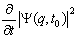

http://khazarzar.skeptik.net/books/kh/sci.htm
Руслан Хазарзар
Скептический взгляд на сциентизм
|
Наука превратилась в церковь. Эрнст Мах
Нам всем, видимо, суждено отвечать за свои мыльные пузыри. Именно этот «не играющий в кости Бог» предопределил, что на меня обижены не только «квантовые теоретики», но и верующие атеистической церкви. Альберт Эйнштейн |
Ad notam
|
Поскольку принятие или непринятие той или иной идеологии следует предоставлять самому индивиду, постольку отсюда следует, что отделение государства от церкви должно быть дополнено отделением государства от науки — этого наиболее современного, наиболее агрессивного и наиболее догматического религиозного института. Пол Фейерабенд |
Важно уяснить: данная глава направлена не против науки, а против сциентизма. Поэтому любая попытка обвинить меня в обскурантизме должна расцениваться как подмена понятий. Наоборот, я считаю обскурантизмом именно догматическое мнение сциентистов об истинности научных теорий, ибо нет ничего более убедительного, чем то, что знание подлежит постоянному пересмотру.
Тяжелое идеологическое наследие диалектического материализма, заключенное в отождествлении контрадикторности и контрарности («Кто не с нами, тот против нас»), в догматическом гностицизме и в узаконивании противоречий, породило, увы, то вопиющее невежество, которое связано со сциентизмом. Догматизация науки и превращение ее в своего рода суррогат религии, якобы дающей окончательный ответ на все коренные проблемы бытия, являются весьма опасными следствиями сциентического культа. Слово наука приравнивается сциентистами к понятию истина, фраза «Это не научный подход» в их глазах дискредитирует подход как безусловно ложный. Человек, осмеливающийся говорить об относительности научных методов, приравнивается сциентистами к еретику-обскуранту. А иногда можно услышать совершенно потрясающие «аргументы»: мол, ты, уважаемый, науку костеришь, а сам ее плодами пользуешься, тем же компьютером!.. Я не буду здесь говорить о недопустимости таких «аргументов» (об этом сказано в любом учебнике логики и эристики) и даже не буду оправдываться ни в собственном «костерении», ни в том, что пользуюсь компьютером. Напомню только, что развитие методологии науки опиралось, как правило, именно на критику сциентизма. И довольно об этом.
В основу данной главы я положил замечательную книгу немецкого философа Курта Хюбнера «Критика научного разума»[1], которой во многом буду следовать, дополняя ее рассуждения собственными выводами и выводами других мыслителей. Хюбнер вслед за Лакатосом, Фейерабендом и Тулмином уловил тонкую параллель между научной моделью и мифом и дал обоснование исторической философии науки. Наука, считает Хюбнер, куда ближе к культуре, нежели сама готова в этом признаться.
Проблема демаркации
|
Не важно знать, что такое сила, а важно знать, как ее измерить. Анри Пуанкаре |
Один из главных признаков сциентизма — мизософия. Сциентисты утверждают, что от философии нет никакого толка, что она только мешает науке, что ее критика науки ровным счетом ничего не значит. Более осведомленные иногда ссылаются на немецкого ученого Гельмгольца, который в первой половине XIX века отметил, что «между философией и естественными науками под влиянием шеллинго-гегелевской философии тождества сложились малоотрадные отношения», и считал, что философия для естествоиспытателей абсолютно бесполезна, поскольку она бессмысленна. При этом, правда, сциентисты игнорируют тот факт, что философия не исчерпывается одним из ее течений. Кроме того, они, критикуя философию вообще, не могут уяснить, что любой вид мизософии является, как минимум, философским взглядом, а как максимум — тем же философствованием, т. е. в данном случае сциентисты, сами того не понимая, играют роль гоголевской унтер-офицерской вдовы, которая сама себя высекла.
Игнорируя философскую проблему демаркации, сциентисты, как и подавляющее большинство ученых XIX столетия, онтологизируют науку и считают, что она способна отражать глубинные, т. е. метафизические свойства бытия. Именно в онтологизации науки укрепилось представление о том, что реальность представляет собой процессы, осуществляющиеся в пространстве и времени, и что они причинно обусловлены и подчиняются небольшому количеству законов, на основе которых можно дать их сколь угодно точное описание.
Однако при попытках философски осмыслить достижения науки с этих позиций ученые в конце XIX – начале XX вв. столкнулись с огромными трудностями. Мощный взрыв теоретических идей и быстрое расширение средств и методов научного познания не удавалось вместить в непротиворечивую картину мира и целостную теорию познания. В этих условиях и приобрел популярность позитивизм[2], который стал претендовать на единственно верную философию и методологию науки.
Прежде чем перейти к критике воззрений позитивизма, рассмотрим, как позитивизм боролся с догматизмом. Позитивистская философия поняла, что преодолеть метафизические вопросы она не в силах и просто от них отстранилась. «Великим естествознание стало благодаря тому, что не долго думая отодвинуло в сторону буйным цветом расцветший античный скептицизм и отказалось от того, чтобы преодолевать его», — пишет Эдмунд Гуссерль.
Можно сказать, что это было шагом вперед — в отличие от методов того же диалектического материализма, который, как правило, и по сей день научные методы безосновательно соотносит с метафизической реальностью. Но это можно считать шагом вперед только в том случае, если нет догматического отождествления научных моделей с реальностью, т. е. если не наблюдается ни на чем не основанный догматический сциентизм.
Позитивизм вполне сознательно отодвинул в сторону вопрос о реальности внешнего мира и вообще вопросы натурфилософии, сосредоточив свое внимание на любых предметностях познания, где бы они реально ни обретались, т. е., вместо того чтобы предаваться мучительным вопросам относительно того, как вообще возможно познание внешней природы, как решать те трудности, которые были обнаружены еще античным скептицизмом, позитивизм предпочел мучиться над вопросом о правильном методе познания. Позитивизм принципиально отказался от ответа на вопрос, есть ли реальность за нашим чувственным опытом, считая этот вопрос для науки ненужным и вредным. Еще Огюст Конт высказался за полный разрыв с метафизикой, которая, по его мнению, как особая наука не имеет права на существование. Сам Конт объявлял метафизикой всякую теорию, признающую бытие и познаваемость внешней реальности, и доказывал, что позитивизм стоит выше как материализма, так и идеализма.
Наука, согласно позитивизму, не нуждается в какой-либо стоящей над ней философии, а вся философия должна быть ограничена синтезом научного знания. Пережитки метафизики, к которым относятся, по мнению Конта, претензии на раскрытие причин и сущностей, должны быть удалены из науки. Наука не объясняет, а лишь описывает явления и отвечает не на вопрос «почему», а на вопрос «как».
Основу учения Эрнста Маха составляет его принцип экономии мышления и выдвигаемый им идеал чисто описательной науки. Опираясь на юмовский и кантовский агностицизм, Мах и его последователи во имя принципа экономии мышления в науке признали фактическими только эмпирические ощущения, устранив из нее такие метафизические понятия, как причинность, субстанции и пр. По мнению Маха, нужно прежде всего удалить из естествознания старую, отслужившую свою службу философию. Стоит только правильно понять сущность науки, и все метафизические проблемы, не дающие покоя виднейшим представителям естествознания в их постоянном стремлении постичь устройство мироздания, окажутся «разрешенными», поскольку будут обнаружены их надуманность и бессмысленность. В самом деле, разве не порождены эти проблемы тем, что наука неизменно трактовалась учеными как описание некой реальности, стоящей за наблюдаемыми явлениями? Это, по мнению позитивистов, и есть одно из самых распространенных и вредных заблуждений прошлого. Ученый имеет дело с эмпирически данной ему действительностью в форме восприятия, и только в таких пределах он обладает суверенностью. «Задача всей и всякой науки, — писал Мах, — замещение опыта или экономия его воспроизведением и предвосхищением (Vorbildung) фактов в наших мыслях... С познанием экономического характера науки исчезает из нее также всякая мистика»[3]. Если теория имеет отношение лишь к эмпирическому материалу, тогда ученый получает возможность оценивать ее правильность посредством сопоставления следствий теории с этими данными. Но если теория призвана не только описывать, но и объяснять сущность явлений, то как может он тогда судить о ее истинности? В этом случае ученый должен был бы неизбежно обращаться к общим представлениям о самом мире, на разработку которых отваживалась лишь философия.
«Рассматривая физическую теорию как гипотетическое объяснение материальной действительности, — писал Пьер Дюгем, — мы ставим ее в зависимость от метафизики». Однако, считал Дюгем, ставить науку в зависимость от философии — значит вовлекать ее в бесплодные споры о природе реальности, которые без всякой надежды на прогресс ведутся философами с незапамятных времен. Работая на уровне феноменов, ученый принципиально не может выйти за их предел. Поэтому у него нет средств для того, чтобы утвердить или, напротив, опровергнуть какие-либо суждения о внешней реальности. И хотя тесная связь науки с метафизикой проявляется со всей очевидностью в творениях выдающихся ученых прошлого, она противоречит подлинно научному познанию. Феноменологическое истолкование научной теории как описательной схемы, классифицирующей эмпирические данные, освобождает теорию от метафизики, предоставляя ученым решать все научные проблемы доступными средствами.
Отсюда не следует, как отмечал Мах, обязательность исключения из арсенала современной физики таких понятий, как атом, масса, сила и т. п. Не нужно только впадать в теоретико-познавательное заблуждение, приписывая им реальность, не следует «считать основанием действительного мира те интеллектуальные вспомогательные средства, которыми мы пользуемся для постановки мира на сцене нашего мышления». На определенном этапе развития науки они вполне могут быть полезны как орудия экономного, рационального «символизирования опытного мира». Пусть атом остается «средством, помогающим изображению явлений, и служит тем, чем служат математические функции». Но, полагал Мах, постепенно, по мере развития науки, естествознание найдет возможность освободиться от такого способа упорядочения эмпирического знания. И все эти псевдообъекты и характеристики т. н. объективной реальности останутся лишь в пыли библиотек.
Это была первая попытка решить проблему демаркации (проблему Канта). Сама демаркация представляет собой принцип установки барьера между естественной наукой и тем, что таковой не является. «Проблему нахождения критерия, который дал бы нам в руки средства для выявления различия между эмпирическими науками, с одной стороны, и математикой, логикой и «метафизическими» системами — с другой, я называю проблемой демаркации»[4], — пишет Карл Поппер. — «Главная проблема. Это — проблема демаркации (кантовская проблема границ научного познания), которую можно определить как проблему нахождения критерия, который позволил бы нам провести различие между утверждениями (высказываниями, системами высказываний), принадлежащими к эмпирической науке, и утверждениями, которые можно назвать «метафизическими»»[5]. В философии советского периода демаркация вообще не рассматривалась, ибо диалектический материализм догматично сводил метафизику к той или иной науке, а в качестве универсального учебника по методологии науки имел произведение Ленина «Материализм и эмпириокритицизм», представляющее собой источник, не только не достойный серьезной философии, но и по своей лексике более подходящий к бульварной литературе[6].
Однако, как оказалось, проблема демаркации, известная еще Юму, а со времен Канта ставшая центральной проблемой гносеологии, не имеет простого решения, ибо упирается в другую проблему — проблему индукции (проблему Юма).
Проблема индукции
|
Урожай, пожинаемый физикой, всегда состоит из набора математических формул. Подлинная сущность материальной субстанции непознаваема. Джеймс Хопвуд Джинс
Там, где наука ушла особенно далеко в своем развитии, разум лишь получил от природы то, что им было заложено в природу. Артур Стэнли Эддингтон
|
Проблему индукции можно выразить одной емкой фразой: сколько бы примеров появления белых лебедей мы ни наблюдали, все это не оправдывает заключения «Все лебеди белые». Проблему индукции можно также сформулировать в виде вопроса о верности или истинности универсальных высказываний, основывающихся на опыте, — гипотез и теоретических систем в эмпирических науках. Многие люди убеждены, что истинность таких универсальных высказываний «известна из опыта». Однако понятно, что описание любого опыта (наблюдения или результата эксперимента) ни в коем случае не является универсальным высказыванием. Любое универсальное высказывание, любой научный закон, любая физическая формула ни в коем случае не известны нам из опыта.
Возьмем, напр., галилеевскую формулу падения тела: значение высоты есть значение ускорения свободного падения, умноженное на квадрат времени падения и деленное на два. Зная момент времени, когда тело начало падать, мы можем вычислить расстояние, которое тело пройдет в некоторый последующий промежуток времени. Причем предполагается, что эта формула, этот закон действителен всегда, в том числе и в будущем. То же самое можно сказать и о других законах.
Но, как отмечает Хюбнер, Дэвид Юм спросил, а на каком, собственно, основании мы столь самоуверенны, с чего это мы вдруг утверждаем, что эти законы выражают универсальный порядок природы, ее истинное устройство? С какой стати мы предполагаем, что эти законы действительны всегда, в том числе и в будущем? Ведь опыт, лежащий в основании этих законов и постоянно подтверждающий их успех, относится к прошлому, поэтому мы всегда можем сказать лишь то, что наши ожидания, основанные на законах, до сих пор оправдывались. Но, в таком случае, какое имеем мы право делать заключение от прошлого к будущему и утверждать, что эти законы вообще являются действительными? Наш практический опыт совершенно не дает нам права делать такой вывод.
Легко понять, что, апеллируя к опыту, мы обречены двигаться по кругу. Аргументация могла бы идти иначе (а фактически именно так это обычно и происходит): до сих пор наши умозаключения от прошлого к будущему подтверждались практическим успехом — стало быть, и в будущем такое же рассуждение приведет нас к успеху, что будет служить доказательством обоснованности данного способа рассуждения. Однако это обоснование опирается на то, что еще только должно быть обосновано, а именно на заключение от прошлого к будущему, которое сводится к простой экстраполяции на будущее практического успеха в прошлом.
Апелляция к логике помогает в данном случае не больше, нежели отсылка к опыту, ибо в логике отсутствует такое понятие, как постоянство законов природы, из коего исходят все умозаключения указанного здесь типа. Логика в ее пустой и формальной всеобщности не говорит нам ничего о конкретных характеристиках природы, а потому и об их постоянстве. Логика есть правила делать умозаключения, но сама ничего не говорит о мире.
Таким образом, ни опыт, всегда относящийся к прошлому, ни чистая логика никогда не будут в состоянии доказать существование физических законов, действительных для всех времен. Таково было фундаментальное прозрение Юма.
Отсюда, отмечает Хюбнер, очевидно, что ни существование, ни содержание законов естествознания не являются эмпирически данным фактом. Мы не просто обнаруживаем эти законы в природе, но в известном смысле привносим их в природу, навязываем их ей. И если мы еще утверждаем, что законы все-таки существуют в природе сами по себе, то тогда должна иметь место, так сказать, предустановленная гармония между тем, что мы вносим в природу, и тем, что в действительности есть. Здесь следует ясно отдавать себе отчет в том, что подобное утверждение обосновано не может быть. Скорее, оно выражает некоторое верование, основанное на его желательности.
Но по какому праву тогда мы привносим законы в природу? Юм объяснял это просто привычкой, которая формируется у нас в процессе постоянного повторения регулярных последовательностей событий, полностью снимая обсуждение правомерности вопроса. Подобное заключение (апелляция к привычке) всегда оспаривалось. Во-первых, о привычке можно говорить лишь применительно к сравнительно простым закономерностям, скажем, такого типа: огонь обжигает при прикосновении к нему. Однако в не меньшей степени мы полагаемся и на те законы, которые удалены от сферы повседневного постоянного опыта и привычек, как, напр., на те, что описывают орбиты комет. Во-вторых, принятие законов, лежащих в основании науки, не может опираться на такие ненадежные и субъективные вещи, как человеческие обыкновения. Наука нуждается для этого в рациональных основаниях.
Так по каким же критериям мы принимаем физические законы в качестве предпосылок, если они не даны в опыте и их существование тем самым никоим образом не гарантировано? Над этим вопросом основательно задумался Иммануил Кант, которого нередко называют отцом методологии. Кант поставил перед собой глобальный вопрос «Как вообще возможно знание?» и в попытке разрешения этого вопроса исходил из допущения, что мы необходимым образом мыслим разнообразные и разрозненные представления, наполняющие наше сознание, как находящиеся в возможно более взаимосвязанном состоянии, ибо только такая их взаимосвязь обеспечивает их принадлежность единству сознания субъекта. Ведь и представление об универсальном и собранном горизонте мира (Welt-Horisont), в котором все упорядочено, интуитивно или тематически постоянно присутствует в нашем сознании. Эти связи, однако, не даны нам через наш актуальный опыт. Субъект, понимающий себя как целостность, мыслит их лишь в качестве принципиально возможных и соответственно a priori предпосланных. И задачей Канта становится поиск этих априори полагаемых взаимосвязей, посредством которых сознание строит себя в форме единства. При этом он приходит к выводу, что к подобным взаимосвязям принадлежат, среди прочих, связи схватываемых представлений в рамках принципа причинности. Этот принцип, если отбросить некоторые несущественные здесь моменты, вкратце означает следующее: для каждого события существует некоторое причинное объяснение, согласно которому оно должно мыслиться как возникающее из предшествующих событий в соответствии с универсальным правилом. Этот принцип оказывается также условием того, что схватываемые представления явлений даются нам объективным образом. Ведь, согласно Канту, схватываемое представление явления лишь тогда объективно, а не произвольно субъективно, когда оно, по его выражению, «подчинено правилу, которое отличает это схватывание от всякого другого и делает необходимым некоторый способ связывания многообразного»[7].
Однако одним из таких правил является, напр., принцип причинности. Лишь мысля явление как возникающее в соответствии с законом причинности, мы рассматриваем его не как порождение нашего произвола, но как объективное. Таким образом Кант доказывает, что априорность причинности есть тем самым не только условие возможности единства сознания, но и вообще условие всякого возможного опыта.
Априорность познания никогда всерьез не оспаривалась, однако со времен «Критики чистого разума» оспаривалась аподиктичность априорного знания. Кант полагал, что закон, подобный галилеевскому, обладает универсальностью в силу того, что он представляет собой всего лишь частный случай a priori действительного принципа причинности, согласно которому все события необходимым образом должны мыслиться как возникающие в соответствии с неизменными законами и правилами. Таков вытекающий из Кантового трансцендентализма ответ на вопрос, по какому праву физические законы, не данные нам эмпирически, принимаются в качестве априорных предпосылок.
Однако, как отмечает Хюбнер, операционизм Ганса Рейхенбаха отвечает на тот же вопрос противоположным Кантову трансцендентализму образом: если целью науки является прогнозирование и овладение природой, то следует предположить, что природа подчиняется некоторым неизменным законам и правилам. Наличие таких законов не может быть доказано чисто эмпирически; однако поскольку существует, если существует вообще, только один способ достижения желаемой цели, цели предвидения, — посредством формулирования законов, — то мы должны следовать этим путем, даже не будучи уверенными заранее в его результативности. Рейхенбах как логический позитивист рассуждал следующим образом: если мы посвящаем себя науке и стремимся к господству над природой, то вынуждены прибегнуть к методологическому допущению априорного существования физических законов и принципа причинности. Но тем самым вовсе не утверждается реальное существование таких законов. Подход Рейхенбаха с тем же успехом приложим и к сфере повседневной жизни. Почему мы непременно стремимся усмотреть действие природных законов даже в самых незначительных событиях? Именно потому, что хотим действовать и в полагании таких законов находим рациональное основание своему желанию.
«Критика чистого разума» Канта поставила всеобъемлющую задачу продемонстрировать, что основания физики (напр., понятия причинности, превращения энергии и т. д.) предоставляют нам a priori необходимую схему, в рамках которой объекты могут быть вообще даны единству индивидуального сознания и которая делает возможным опыт как таковой. Между физическим и обыденным способом рассмотрения, согласно Канту, имеет место лишь различие в уровне: основания физики служат лишь поэтапными объяснениями того, что всякое индивидуальное сознание предполагает априори. Поэтому физика (по крайней мере, с точки зрения формы) остается единственно обоснованным способом рассмотрения внешнего мира.
Операционализм Рейхенбаха в противовес трансцендентализму Канта утверждает, что физика, не являясь ни истинной, ни ложной, зиждется на априорных установлениях (Festsetzungen) и символических идеальных конструкциях, которые предпосылаются природе лишь для того, чтобы построить схему овладения ею. Однако тем самым они не становятся реальным основанием природного порядка. Их, видимо, можно уподобить сети координат, которую мы накладываем на земную сферу, дабы получить возможность ориентирования. Эта сеть тоже является идеальной конструкцией, а не свойством самой планеты.
Таким образом, трансцендентализм и операционализм роднит то, что оба они отбрасывают классическое наивное представление о субъект-объектном отношении, согласно которому субъекту противостоит объект «сам по себе», от коего посредством опыта субъект получает знание. И трансцендентальная философия, и операционализм учат, что в известном смысле субъект сам производит свой объект. Шопенгауэр сформулировал это следующей емкой фразой: «Без субъекта нет объекта». Т. е. и в случае с трансцендентализмом, и в случае с операционализмом мы имеем дело с априоризмом, ведь «a priori» в первую очередь означает, что нечто дано нам не через опыт, а уже содержится в нас самих.
Однако есть и различие: если для Канта способ такого производства объекта является априори необходимым и неизменным, операционализм выводит его чисто методологически, исходя из задачи подчинения природы на основании ее исследования. Соответственно a priori Канта может быть названо необходимым (аподиктичным), a priori операционализма — произвольным (контингентным). Для Канта физика суть единственно возможный способ подлинного конструирования объекта; для операционализма, напротив, физика базируется на некотором частном решении. Стало быть, с точки зрения трансцендентальной философии, история становления физики предстает как процесс, в ходе которого разум впервые приходит к истинному пониманию способов конституирования объектов. С точки зрения операционализма, основанием физики является акт воли, воли к покорению природы[8].
Идея априоризма, в зачаточной форме известная еще Сократу[9] и на новом уровне возрожденная Кантом, поддерживалась большинством ученых. Так, Артур Эддингтон считал, что «там, где наука ушла особенно далеко в своем развитии, разум лишь получил от природы то, что им было заложено в природу»[10]. Жюль Анри Пуанкаре также разделял точку зрения априоризма, хотя впоследствии его взгляды получили название конвенционализма. Пуанкаре считал, что существует бесконечно много теорий, которые в состоянии адекватно объяснить и описать любую область опыта. Выбор теории, по мнению Пуанкаре, произволен, хотя обычно более простой теории отдают предпочтение пред более сложной. Мы только изобретаем и используем идеи, которые соответствуют известной нам действительности, но и другие теории, если приложить к ним достаточно усилий, также могут оказаться вполне работоспособными. Альберт Эйнштейн в «Эволюции физики», написанной им совместно с Леопольдом Инфельдом, также принял точку зрения априоризма:
Физические понятия суть свободные творения человеческого разума, а не определены однозначно внешним миром, как это иногда может показаться. В нашем стремлении понять реальность мы отчасти подобны человеку, который хочет понять механизм закрытых часов. Он видит циферблат и движущиеся стрелки, даже слышит тиканье, но он не имеет средств открыть их корпус. Если он остроумен, он может нарисовать себе некую картину механизма, которая отвечала бы всему, что он наблюдает, но он никогда не может быть уверен в том, что его картина единственная, которая могла бы объяснить его наблюдения. Он никогда не будет в состоянии сравнить свою картину с реальным механизмом, и он не может даже представить себе возможность или смысл такого сравнения[11].
В конце концов даже диалектический материализм был вынужден признать априорность познания (в ее контингентной форме), тем самым отвергая ленинское наивно-реалистическое понимание познания[12]. Так, Э. М. Чудинов признает: «Мир, рассматриваемый в качестве предмета познания, — это, вообще говоря, теоретизированный мир, т. е. мир, подвергнутый процедуре концептуализации. Концептуализация практически выделенных свойств объективного мира относится не к самим свойствам, как они существуют вне и независимо от человеческого познания. Она предполагает перевод этих свойств из материальной в идеальную форму. Это означает, что они заменяются мысленными конструкциями, которые репрезентируют соответствующие аспекты объективного мира. Именно в таком качестве они могут быть подвергнуты концептуализации, т. е. рассмотрены в рамках определенной категориальной сетки... Следовательно, мышление принимает участие в формировании предмета научного знания». Чудинов соглашается с Кантом, что для познания «нужны не только априорные формы чувственного созерцания, но и априорные категории рассудка... Кант сделал открытие, которое оказалось не под силу домарксовскому созерцательному материализму; он открыл важный аспект активности субъекта в процессе познания»[13].
Таким образом, Юм, полагая, что наши идеи извлекаются из опыта, а индуктивные выводы из опыта несостоятельны, заключил, что теории, которые не сводимы к опыту, являются бессмысленными и что наше научное знание о мире основано на следовании привычке. Кант утверждал, что наше апостериорное знание о мире основано на априорных интуициях, априорных понятиях и априорно истинных принципах. Логические позитивисты доказывали, что значение высказывания есть метод его верификации и что именно эмпирическая верифицируемость отличает науку от метафизики и смысл от бессмыслицы.
Карл Поппер согласился с Юмом, что попытка оправдать знание с помощью индуктивных выводов из опыта приводит к иррационализму, но отрицал, что ученые вообще когда-либо рассуждают индуктивным образом. Он согласился также с Кантом, что опыт и наблюдение предполагают априорные идеи, но отрицал, что наши априорные идеи аподиктичны. И он согласился с позитивистами, что более невозможно апеллировать к аподиктичным принципам в попытках оправдать эмпирическую науку, но доказывал, что метафизические теории не обязательно бессмысленны и что верифицируемость не может быть критерием демаркации науки и метафизики, поскольку не способна объяснить научный характер научных законов, которые, будучи строго универсальными суждениями, охватывающими бесконечное число случаев, не могут быть верифицированы с помощью индуктивных выводов из опыта.
Фальсификационизм и его критика
|
Большинство ученых имеют такое же представление о том, что такое наука, как рыбы — о гидродинамике. Имре Лакатос
|
Поппер, таким образом, предполагал, что научное знание не может быть оправдано, да и не нуждается в этом. Нет ничего более убедительного, чем то, что наше знание подлежит постоянному пересмотру. Теории вовсе не обязательно быть оправданной, истинной или вызывающей доверие для того, чтобы она могла считаться научной; наоборот, именно требование от нашего научного знания, чтобы оно было оправданным или подтвержденным, нерационально[14]. Ни одна теория о мире не может иметь оправдания или подтверждения. Научное знание, по мнению Поппера, рационально не потому, что мы находим ему оправдание, а потому, что мы способны его критиковать: любая попытка оправдать знание должна, чтобы избежать бесконечного регресса, в конечном счете опираться на надежность некоего утверждения, которое не нуждается в оправдании. Однако тот факт, что надежность этого утверждения принимается без оправдания, означает, что мы наделяем его своего рода исключительностью, которую отрицаем за другими утверждениями. Таким образом, в отличие от позитивистов, апеллировавших к опыту для оправдания знания, Поппер доказывал, что главная проблема философии — критический анализ апелляции к авторитету опыта, а именно того опыта, который всякий адепт позитивизма принимает и всегда принимал за нечто само собой разумеющееся. Но из утверждений наблюдения, в которых фиксируется наш опыт, никогда не следует истинность строго универсального утверждения или теории. Поэтому универсальные утверждения или теории не могут быть оправданы или верифицированы с помощью опыта. Однако, говорит Поппер, достаточно всего одного подлинного контрпримера, чтобы показать, что универсальное утверждение ложно. Так, наблюдение любого сколь угодно большого числа белых лебедей не может обосновать или верифицировать утверждение, что все лебеди белые; наблюдение же всего одного не-белого лебедя доказывает, что обобщение «Все лебеди белые» ложно. Поэтому некоторые универсальные утверждения или теории могут критиковаться, т. е. могут быть фальсифицированы с помощью опыта или базовых утверждений (единичных утверждений, фиксирующих наблюдения), которые им противоречат. В этом и заключается попытка Поппера обезвредить проблему индукции при попытке разрешения проблемы демаркации. По его мнению, отнюдь не верифицируемость, а именно фальсифицируемость отличает эмпирическую науку от метафизики, ибо все теории имеют нулевую вероятность, независимо от количества подтверждений, т. е. все теории не только равно необоснованы, но и равно невероятны: «Большинство сторонников вероятностной логики придерживается того мнения, что оценка достигается за счет «принципа индукции», на основе которого индуктивным гипотезам приписываются вероятности. Однако если сторонники вероятностной логики приписывают вероятность и самому принципу индукции, то мы вновь попадаем в ситуацию регресса в бесконечность. Если же этот принцип они считают «истинным», то они вынуждены выбирать между регрессом в бесконечность и априоризмом... Таким образом, замена слова «истинно» словом «вероятно», а слова «ложно» — словом «невероятно» ничего не дает. Только в том случае, если принята во внимание асимметрия между верификацией и фальсификацией — та асимметрия, которая обусловлена логическим отношением между теориями и базисными высказываниями, — можно избежать ловушек проблемы индукции»[15].
Кроме того, Поппер указал на существование логической асимметрии между универсальными и единичными утверждениями: универсальные могут быть фальсифицированы, но не верифицированы, а единичные верифицированы, но не фальсифицированы, — и показывал, что различение науки и метафизики не совпадает с различением осмысленных и бессмысленных утверждений.
Фальсификационизм был весьма популярен, пока не были вскрыты непреодолимые проблемы, заложены в нем самом. Оказалось, что он, преодолевая проблему индукции, уже содержит ее в себе. Поппер, положив в основу фальсификационизма логическую систему Тарского, сам признал, что фальсификация (в отличие от фальсифицируемости как критерия эмпирического характера системы высказываний) нуждается в формулировке специальных правил, устанавливающих, при каких условиях система должна считаться фальсифицированной[16]. Т. е. фальсификационизм сам является теорией, для которой как раз и не установлены правила фальсификации и которая неизвестно с какой стати должна нами рассматриваться более авторитетной, нежели фальсифицируемая теория.
Фальсификационизм Поппера критиковался и по другим критериям. Если позитивисты рассматривали науку как процесс выдвижения и верификации утверждений, а Поппер считал ключевой процедурой фальсификацию научных гипотез, то американец Томас Кун, сосредоточив внимание на научных революциях, вообще отказался видеть в росте научного знания некий процесс аккумуляции. Если, согласно Попперу, наука — это процесс «перманентной революции», а ее движущей силой является рациональная критика, то, по Куну, революция есть исключительное событие, выходящее за рамки науки. Подчеркивая непрерывность научного развития и упорство в борьбе за выживание некоторых научных теорий, Кун называл требование отбрасывать, элиминировать «опровергнутую» теорию наивным фальсификационизмом[17]. С точки зрения американского философа, не может быть никакой логики открытия — существует только психология открытия.
Приблизительно в то же время, что и Фейерабенд, Кун сформулировал тезис о несоизмеримости научных теорий, ставший одним из ограничительных результатов современной философии науки: данный тезис ограничивает конструктивные возможности научных дискуссий. Американский философ сопоставил сторонников конкурирующих теорий, работающих в разных парадигмах, с членами различных культурных и языковых сообществ, между которыми возникает проблема перевода.
Таким образом, согласно Юму, рост науки индуктивен и иррационален, согласно позитивистам — индуктивен и рационален, согласно Попперу — не индуктивен и рационален, согласно же Куну — рост науки не индуктивен и иррационален. Напр., по Куну, наука всегда изобилует аномалиями, противоречиями, но в т. н. «нормальные» периоды господствующая система (парадигма) научных взглядов задает образец роста, который может быть отброшен в период «кризиса». «Кризис» — психологическое понятие, обозначающее нечто вроде паники, которой заражаются массы ученых. Затем появляется новая система взглядов, несоизмеримая со своей предшественницей. Для их сравнения нет рациональных критериев. Каждая система имеет свои собственные критерии. Этот кризис уничтожает не только старые теории и правила, но также и критерии, по которым мы доверяли им. Новая система приносит совершенно новое понимание рациональности. Нет никаких сверхсистемных критериев. Изменение в науке — лишь следствие того, что ученые примыкают к движению, имеющему шансы на успех. Стало быть, с позиции Куна, научная революция иррациональна и ее нужно рассматривать специалистам по психологии толпы.
Кстати, сведение философии науки к психологии — отнюдь не изобретение Куна. Еще раньше волна психологизма пошла вслед за провалом джастификационизма. Многие видели в джастификационизме единственно возможную форму рационализма: конец джастификационизма означал, казалось, конец рациональности вообще. Крушение тезиса о том, что научные теории могут быть доказательно обоснованы и что прогресс науки имеет аккумулятивный характер, вызывало панику среди сторонников джастификационизма. Если «открыть — значит доказать», но доказать ничего нельзя, то и открыть ничего нельзя, а можно только претендовать на открытие. Поэтому разочарованные джастификационисты, а точнее, экс-джастификационисты, решили, что разработка критериев рациональности — дело безнадежное.
Имре Лакатос также отверг наивный фальсификационизм. По мнению автора методологии научно-исследовательских программ, «нет и не может быть ощущений, не нагруженных ожиданиями, и следовательно, нет никакой естественной демаркации между предложениями наблюдения и теоретическими предложениями»[18]. Однако Лакатос усмотрел в учении Поппера т. н. утонченный фальсификационизм с его критерием погрешимо-критического развития. По мнению Лакатоса, «теория приемлема или научна только в том случае, если она имеет дополнительное подкрепленное эмпирическое содержание по сравнению со своей предшественницей, то есть если только она ведет к открытию новых фактов. Это условие можно разделить на два требования: новая теория должна иметь добавочное эмпирическое содержание; и некоторая часть этого добавочного содержания должна быть верифицирована»[19]. «Утонченный фальсификационист признает теорию T фальсифицированной, если и только если предложена другая теория T' со следующими характеристиками: 1) T' имеет добавочное эмпирическое содержание по сравнению с T, то есть она предсказывает факты новые, невероятные с точки зрения Т или даже запрещаемые ею; 2) T' объясняет предыдущий успех Т, то есть все неопровергнутое содержание T присутствует в T'; 3) какая-то добавочная часть содержания T' подкреплена»[20].
Лакатос, в отличие от позитивистов и Поппера, считал, что всякая методологическая концепция должна функционировать как историографическая. Наиболее глубокая ее оценка может быть дана через критику той рациональной реконструкции истории науки, которую она предлагает. Для Лакатоса важна борьба концепций: «История науки была и будет историей соперничества исследовательских программ, но она не была и не должна быть чередованием периодов нормальной науки: чем быстрее начинается соперничество, тем лучше для прогресса»[21]. Эту идею соперничества он использует при понятии элиминации исследовательских программ. Когда соперничающей программе удается объяснить все предшествующие успехи ее соперницы и к тому же она превосходит ее демонстрацией эвристической силы, тогда можно говорить об отвержении защитного пояса проигравшей программы вместе с ее ядром. Однако не следует сразу же отказываться от проигравшей программы, ибо возможно, что эта программа одержит верх спустя некоторое время. Если же программа все время плетется сзади и отстает все больше, то она отмирает сама собой и о ней все забывают.
Пол Фейерабенд, высоко оценивая заслуги Лакатоса, тем не менее считает ортодоксальный научный подход недопустимым и предлагает свою концепцию т. н. эпистемологического анархизма. Философия науки, говорит Фейерабенд, должна учитывать тот факт, что «ни одна теория никогда не согласуется со всеми известными в своей области фактами»[22], а потому принцип фальсификации совершенно не имеет силы. Кроме того, по мнению Фейерабенда, именно принцип дедуцируемости, согласно которому все успешные теории в одной и той же области обязательно должны быть совместимыми, и принцип инвариантности значений, благодаря которому при включении некой новой теории T' в тело старой теории T происходит коррекция значения теории T', — именно эти принципы, стремящиеся согласовать новую теорию со старой, сделать их непротиворечивыми, приводят к тому, что сохраняется не лучшая, а более старая теория.
Широкую известность Фейерабенд приобрел во многом благодаря провозглашенному тезису «anything goes» («допустимо все») и требованию разрабатывать несовместимые с фактами теории на том основании, что не существует ни одной более или менее интересной теории, которая согласуется со всеми известными фактами. Для возможности существования плюралистической методологии необходимо отсутствие установленных стандартов, пропаганды, принуждения. Рекомендация использовать альтернативы только после того, как опровержения уже дискредитировали ортодоксальную теорию, ставит, по выражению Фейерабенда, телегу впереди лошади. Настоящий ученый «должен сравнивать идеи с другими идеями, а не с «опытом» и пытаться улучшить те концепции, которые потерпели поражение в соревновании, а не отбрасывать их»[23].
Не без эпатажа Фейерабенд утверждает, что наука не имеет никакого превосходства, напр., над ненаучным знахарством, и нет никаких рациональных методов это опровергнуть. «Научно» — не более чем «догматично», и никаких привилегий на истину у науки нет и быть не может. Действительно, в чем заключается ценность науки и ее превосходство над философией Аристотеля или учением о дао? Разве наука, риторически спрашивает Фейерабенд, это не один из многих мифов, возникший при определенных исторических условиях?.. Ученые и теоретики науки выступают единым фронтом, как до них это делали представители единственно дарующей блаженство Церкви: истинно только учение Церкви, все остальное — языческая бессмыслица. В самом деле, определенные методы дискуссии или внушения, некогда служившие сиянию церковной мудрости, ныне нашли себе новое прибежище в науке.
Наука, напоминает Фейерабенд, это сравнительно новая форма знания, рожденная в жестком конфликте с религией, и, вероятно, сама рано или поздно будет отстранена с передовых позиций какой-либо иной формой познания. «Наука гораздо ближе к мифу, чем готова допустить философия науки, — утверждает Фейерабенд. — Это одна из многих форм мышления, разработанных людьми, и не обязательно самая лучшая. Она ослепляет только тех, кто уже принял решение в пользу определенной идеологии или вообще не задумывается о преимуществах и ограничениях науки. Поскольку принятие или непринятие той или иной идеологии следует предоставлять самому индивиду, постольку отсюда следует, что отделение государства от церкви должно быть дополнено отделением государства от науки — этого наиболее современного, наиболее агрессивного и наиболее догматического религиозного института»[24].
Причем показательно, что свои столь радикальные тезисы Фейерабенд, что называется, не высасывает из пальца, а последовательно аргументирует. Контраргументы, представленные оппонентами Фейерабенда, носят уже иррациональный характер, сводящийся, как правило, к argumento ad hominem.
Мы не будем рассматривать концепцию эпистемологического анархизма, а сосредоточим свой взгляд на критических аспектах. Лакатос, Фейерабенд, Тулмин и Хюбнер не только оспаривают верификацию как метод обоснования научной теории, но и настаивают, что фальсификационизм не безусловен, ибо не существует никакого «чистого опыта», свободного от некоторых априорных предпочтений[25]. Установка позитивистов, что теория — лишь удобная схема для упорядочивания фактов, неполна, ибо каждая научная теория несет свой особый способ рассмотрения мира, а факты и экспериментальные результаты обусловлены изначальной установкой исследователя. Т. е. любые результаты измерения не могут быть свободными от предустановленного теоретического содержания, а значит, несут в себе все ту же пресловутую проблему индукции.
Проблема «чистого опыта»
|
Никогда никакой опыт не окажется в противоречии с постулатом Евклида, но зато и никакой опыт не будет никогда в противоречии с постулатом Лобачевского. Анри Пуанкаре
Наука вовсе не является коллекцией законов, собиранием несвязных фактов. Она является созданием человеческого разума, с его свободно изобретенными идеями и понятиями. Альберт Эйнштейн
Как я уже неоднократно подчеркивал, эксперимент вообще ничего не значит, пока он не интерпретирован теорией. Макс Борн |
Позитивистский взгляд на мир отвергал известное изречение Рене Декарта, что «не должно сомневаться в том, что кажется истинным». В противовес интуитивно-рационалистическому взгляду был поставлен эмпирический: источник знания — в фактах. В факте и сегодня видят нечто абсолютное, нечто такое, что обладает принудительной силой «истинности». А поскольку сферой «истинности» сегодня признают прежде всего науку, то именно ей и приписывается роль попечителя и хранителя «истины». Однако, отмечает Хюбнер, тщетность такой точки зрения нетрудно установить даже на примере физической теории, в которой многие сегодня видят идеальную модель для большинства наук, и я предлагаю проследить за ходом рассуждений немецкого философа[26].
Как известно, в состав физической теории входит группа аксиом в виде дифференциальных уравнений, из которых выводятся функции состояния мировой точки в зависимости от параметра времени. Из аксиом выводятся естественные законы, образующие единую взаимосвязанную систему с понятийным каркасом теории, где устанавливаются определенный порядок и принцип систематизации. Принимая некоторые граничные условия, подставляя данные измерения вместо переменных, мы получаем т. н. базисные предложения этой теории. Из них с помощью теорем этой теории выводятся другие базисные предложения, предсказывающие результаты измерений в определенный момент времени, которые также могут быть проверены измерениями. Понятно, что подобные базисные предложения рассматриваются в качестве эмпирического основания теории — собственно, поэтому их и называют «базисными». Это они, базисные предложения, должны выражать факты, призванные поддержать теорию. Они же должны выносить приговор, когда теория предстает перед судом опыта. Они же призваны устанавливать связь между мыслимым и действительным. Они же лежат в основе решений, считать ли данную теорию соответствующей природе или нет. Судьи и подсудимые, адвокаты и прокуроры — в одном...
Вначале важно уточнить, в какой мере базисные предложения выражают факты и в какой мере эти факты могут стать основанием естественных законов, с одной стороны, и аксиом теории — с другой. В базисном предложении выражается полученный или ожидаемый результат измерения. Но для измерений требуются приборы, а чтобы применять приборы, доверять им, мы должны сперва иметь теорию, определяющую, как и на каком основании эти приборы действуют. Это верно даже для простейших инструментов — скажем, для линейки или для телескопа: пользуясь линейкой, мы исходим из допущения, что перемещение в пространстве не приводит к ее изменению, во всяком случае, к вычислимому изменению эталона, т. е. предполагаем определенную метрику; когда мы смотрим в телескоп, то исходим из определенных представлений, напр., о том, как световые лучи распространяются в конкретной среде, т. е. мы предпосылаем наблюдению определенную оптическую теорию[27]. Чтобы процедура измерения имела смысл, ей должна предшествовать не только теория применяемых приборов, но и теория измеряемых величин, поскольку понятия об этих величинах не являются результатом какого-то неопределенного жизненного опыта, а получают дефиницию и определяется только в рамках теории. Напр., если мы хотим измерить длины световых волн, то нужна, во-первых, волновая теория света; а во-вторых, необходимо понимать (исходя из этой теории и теории, положенной в основу данной измерительной аппаратуры), каким образом эта аппаратура способна определять искомые длины волн света. Сверх того, необходимо еще и то теоретическое знание, которое позволяет считывать показания приборов, переводя их в численные величины.
Понятно, что базисные предложения, которые должны выражать факты, служащие основанием для теории, нельзя понимать как передачу чистых восприятий — размеров, конгруэнтностей, перемещений и т. п. Базисные предложения тоже нагружены теоретическим содержанием. Они говорят не о том, что мы воспринимаем то-то и то-то, а о том, что измерена такая-то длина световой волны, такая-то сила тока, такая-то температура, такое-то давление и т. п., а все эти понятия имеют смысл и содержание только в рамках соответствующих теорий.
Amplius. Поскольку точность измерения всегда ограничена, любая процедура измерения допускает — опять-таки в определенных пределах — различные прочтения измерительных данных. Выбор того или иного прочтения зависит не от восприятия или опыта, а от принятого решения. То обстоятельство, что подобное решение обычно не является произвольным, а возникает в рамках теории анализа погрешностей измерения, принципиально ничего не меняет. Ведь и сама эта теория основывается на некоторых неэмпирических допущениях: существования истинного среднего значения, равной вероятности положительной и отрицательной погрешности. Кроме того, принимается за правило, что анализ погрешностей определен по отношению к квадратичным отклонениям от среднего значения и пр. И наконец, у нас всегда есть лишь конечное число отдельных измерений, но мы не располагаем «истинным значением»[28]. Очевидно, что в базисных предложениях не выражаются чистые факты и они не основаны на чистых фактах; базисные предложения не могут считаться теоретически-нейтральным основанием какой-либо теории; базисные предложения сами являются теоретическими, их смысл определяется интерпретацией, они решительно зависят от принимаемых решений.
Однако оставим пока в стороне вывод о том, что базисные предложения не выражают чистых фактов, и предположим, что они адекватно определены эмпирически. При таком допущении обоснование естественного закона через базисные предложения могло бы строиться следующим образом: делаются измерения, на их основании вычерчивается график, выражающий определенную математическую функцию, которая и служит формулой искомого естественного закона; при этом говорят, что математическая кривая обосновывает или подтверждает закон. Но ведь такую кривую нельзя построить, исходя из одних только измерений. Результаты измерений всегда единичны и случайны, т. е. спорадичны, и построение функции поэтому всегда связано с интерполяцией и «приглаживанием» данных. Таким образом, в процесс — уже с другой стороны — входят решения и правила. Перед нами ситуация, аналогичная той, что имеет место при теоретическом анализе погрешностей измерений. Без подобных правил результаты измерения не могут стать основанием естественных законов, а с ними нельзя уже говорить о том, что в основании лежат только чистые факты.
А как же взаимосвязаны базисные предложения с естественными законами? В естественных законах существенную роль играют природные константы. Даже учитывая, что при их определении нельзя обойтись без «приглаживания» данных, теоретических допущений и решений, тем не менее признается, что существует относительная эквивалентность определяемых этими константами результатов измерений, если даже эти измерения проводились различными способами. Утверждается, что независимо от того, как именно получены данные измерений, они совпадают в своих численных значениях. Прежде чем проанализировать это носящее общий характер утверждение, рассмотрим пример, помогающий его прояснить.
Существуют различные методы определения скорости света: напр., посредством константы смещения (аберрации) и метод Физо. Хотя эти методы предполагают совершенно различные процедуры измерения, они ведут к одинаковому результату. Вопрос в том, как неэмпирические предпосылки соотносятся с обоими методами?
В первом случае, скорость света можно вычислить, если известна константа аберрации и скорость Земли. Но скорость Земли, в свою очередь, может быть определена, только если известно расстояние, которое она проходит в конкретный интервал времени. Стало быть, дабы вычислить скорость света, требуются два измерения: одно — в начале временного интервала, другое — в конце. Оба эти измерения совершаются в различных местах. А это означает, что мы предполагаем синхронность часов, необходимых для измерения времени, и постоянство их хода. Значит, для измерения скорости Земли нужно определить понятие одновременности двух событий, разделенных расстоянием. Однако известно (по крайней мере, с тех пор, как сформулирована теория относительности), что одновременность разделенных расстоянием событий не является наблюдаемым фактом. Следовательно, такое определение зависит от принятых правил. Поэтому приходится уточнять, какие именно правила участвуют в измерении скорости света посредством константы аберрации.
Рассмотрим другой случай — опыт по измерению скорости света, предложенный И. Л. Физо. Световой пучок проделывает путь от своего источника к зеркалу, от коего он отражается и возвращается в исходную точку. Скорость света можно определить, ежели вычислить время, прошедшее с момента испускания светового пучка до момента его возвращения. При этом мы должны предположить, что скорость света одна и та же на пути к зеркалу и от него. Чтобы представить это как эмпирический факт, пришлось бы измерить время от момента испускания пучка до момента, когда он отражается от зеркала, а также от момента отражения до момента возвращения в исходную точку. И здесь мы также имели бы два измерения времени для разделенных расстоянием событий. Т. е. снова к процедуре измерения подключается уже известное нам правило.
Теперь мы подошли к более общему вопросу, а именно: можно ли считать правила, которые принципиально участвуют в измерениях, в определениях констант и оснований естественных законов, чем-то таким, что впоследствии может быть представлено как эмпирический факт, поскольку применение этих правил неизменно приводит к одним и тем же результатам, хотя сами правила не зависят друг от друга? И, стало быть, можем ли мы заключать об эмпирической истинности сделанных нами допущений, исходя из совпадения результатов?
Допустим, применение независимых друг от друга правил P1, P2, ..., Pn дает одну и ту же систему результатов R. Казалось бы, из этого можно сделать вывод, что P1, P2, ..., Pn суть эмпирические истины. Однако такой вывод ничем не обоснован. Поскольку система R не дана сама по себе, а получается в каждом конкретном случае посредством правил. Единственное, что мы вправе утверждать, так это то, что и отмеченное совпадение является лишь результатом применения правил. Таким образом, мы можем сказать только, что правила, применение которых приводит к совпадению результатов, вероятно, выбраны потому, что они обеспечивают простоту физических теорий — и ничего больше. Признать этот немудреный факт мешает только то, что нам трудно выбраться из плена онтологизации, в соответствии с которым физические предложения так или иначе должны описывать реальность, существующую саму по себе.
Таким образом, мы приходим к выводу, что ни базисные предложения, ни естественные законы не выражают непосредственные факты в каком бы то ни было смысле: в их установлении участвуют решения, принимаемые субъектом исследования.
Казалось бы, даже этого достаточно, чтобы отклонить все претензии науки на знание истины, но можно сказать и об аксиомах. Остановимся только на логической стороне дела как таковой, т. е. признаем, что аксиомы — это предпосылки, из которых выводятся в качестве следствий базисные предложения. Если базисное предложение, предсказанное теорией, подтверждается измерением, то по правилам логики истинностное значение посылок (в данном случае аксиоматической системы теории) может быть и истинным, и ложным. Далее очевидно, что одни и те же базисные предложения могут следовать из различных систем аксиом даже при условии, что эти базисные предложения по-разному интерпретируются в различных теориях. Здесь встает вопрос, аналогичный тому, что возникает у нас в ситуации, когда различные методы дают один и тот же результат: нельзя ли на основе сопоставления различных теорий получить нечто вроде эмпирических фактов? Т. е. если выше речь шла только о возможности эмпирического обоснования отдельной теории, то теперь мы переходим к группам теорий. Перед нами следующие возможности сравнения теорий: 1) теории имеют одни и те же базисные предложения (хотя последние могут по-разному интерпретироваться в различных понятийных рамках), но одна из них проще другой или имеет некоторые добавочные базисные предложения; 2) теории одинаковы по своим структурам; 3) одна из теорий содержит в себе другую как частный или предельный случай. Дабы выяснить критерий фактуального содержания теорий, нужно исследовать все три возможности. Начнем с первой.
Итак, предполагается, что самая простая или всеохватная теория является истинной или более близкой к истине, чем остальные. За этим стоит допущение, что сама природа устроена просто и допускает исчерпывающее свое понимание (и притом так, как ее изображает «самая простая» или «самая полная» теория из числа тех, какие предложены в данный момент!). Но можно ли считать такое допущение обоснованным, если теория, претендующая на раскрытие истинного устройства природы, сама не может обосновать своей истинности?..
Также предполагается, что если какие-либо теории относятся к одной и той же базисной области, они должны иметь одну и ту же структуру — и это считается эмпирической истиной[29]. Однако эта структурная эквивалентность для двух множеств означает, во-первых, что каждый элемент одного множества может быть поставлен в однозначное соответствие с каждым элементом другого множества; а во-вторых, она означает, что если некоторые элементы одного множества определенным образом связаны между собой, то соответствующие им элементы другого множества так же связаны. Отсюда следует, что если два множества, каждое из которых состоит из системы предложений, как это имеет место в теории, структурно тождественны, то предложения одной теории могут быть выведены из предложений другой теории, и наоборот. Но как раз это и не является обязательным, когда речь идет о двух теориях, относящихся к одной и той же базисной области. Единственное общее, что у них есть, — это сама базисная область, но отсюда не следует их структурная эквивалентность. А поскольку, как правило, структурная эквивалентность сравниваемых теорий не наблюдается, то нет и возможности говорить о каком-либо неизменном эмпирическом фактуальном основании, на котором зиждется структура теории.
И наконец, предполагается, что теории в конечном счете становятся частными или предельными случаями других теорий и что в этом состоит прогресс науки. Здесь часто усматривают доказательство того, что основой теории являются факты: став предельным случаем более общей теории, данная теория включается в более широкий теоретический контекст, в котором ее развитие получает завершение, однако сама теория остается неопровергнутой именно благодаря тому, что основывается на фактах.
Как классический пример обычно приводят отношение ньютоновской физики к специальной теории относительности. Нередко утверждается, что ньютоновская механика является предельным или частным случаем теории относительности, имея дело с областью, в которой скорости намного меньше скорости света. При обосновании выдвигается допущение, что такой предельный случай можно вывести из теории относительности. Но что это был бы за вывод? Если обозначить предложения специальной теории относительности как R1, R2, ..., Rn, то, чтобы вывести ньютоновскую механику как предельный случай, к ним следует добавить следующее: в ньютоновской механике числовое значение отношения квадрата скорости к квадрату скорости света в вакууме весьма значительно меньше единицы: v2/c2 << 1. Тогда можно получить предложения L1, L2, ..., Ln; и только в этом смысле можно говорить о выведении одной теории из другой. Хотя Li действительно может рассматриваться как частный случай специальной теории относительности, к ньютоновской механике это не имеет отношения и не может считаться ее частным случаем. Дело в том, что переменные и параметры, представляющие координаты, время, массу и т. д. в специальной теории относительности отличаются от классических величин, хотя имеют те же наименования. Так, масса в ньютоновской физике постоянна, понятие же с аналогичным названием в эйнштейновской физике взаимоопределимо с энергией и потому является переменным. Пространство и время в ньютоновской физике суть абсолютные величины, в эйнштейновской — относительные, и т. д. Это очевидное различие не позволяет выводить одну теорию из другой, хотя в обеих фигурируют одни и те же термины. Если не принять определенных правил преобразования, нельзя отнести переменные и величины Li к классической физике, а если переопределить их, то нельзя вывести Li из Ri. При переходе от эйнштейновской теории к классической физике изменятся не только форма законов, но сами понятия, на которых эти законы основаны. Поэтому ньютоновская физика не является ни предельным, ни частным случаем эйнштейновской физики. Именно в новых определениях и заключалось революционное значение последней.
Точно так же несовместимы ньютоновская теория тяготения и общая теория относительности. Согласно Эйнштейну, пространство универсума искривлено и в нем нет места силам тяготения; ньютоновский универсум — это евклидово пространство, в котором действуют силы гравитации. Помимо тех причин, по которым, как уже было сказано, нельзя считать ньютоновскую физику предельным случаем общей теории относительности (напр., сказать, что ньютоновская физика имеет дело с относительно малыми и потому практически неискривленными областями пространства), надо еще принять во внимание, что, согласно ученым, ньютоновская теория — правда, пока за немногими исключениями — описывает и предсказывает широкий круг астрономических явлений так же правильно, как и теория Эйнштейна.
Итак, мы приходим к заключению, что из двух соперничающих теорий ни одна не должна содержать в себе другую в качестве своего предельного случая; такое соотношение не может считаться универсальным правилом. Нет и достаточных оснований утверждать, что одна из таких теорий является приближением к другой, ибо в большинстве случаев отсутствует общий признак сравниваемых предметов. Можно ли говорить о равенстве или подобии результатов измерений (что указывало бы на возможность такого приближения), если измеряемые величины имеют различный смысл? Увы, анализ физической теории и ее отношений с другими теориями показывает безосновательность попыток найти абсолютный критерий эмпирической верификации. Препятствием к этому служит то обстоятельство, что в состав теории входят универсальные предложения, хотя не все частные случаи, описываемые такими предложениями, могут быть удостоверены. Мало того, абсолютность такого критерия вообще утрачивает смысл, если вспомнить роль, какую в верификационных процедурах играют правила определения.
Пока речь шла о возможности обоснования теории, о ее подтверждаемости фактами. Но можем ли мы иметь точное знание о том, когда теория не соответствует фактам? Увы, как было показано выше, вообще нет фактов, которые могли бы выполнять роль беспристрастного арбитра; стало быть, фактами нельзя ни обосновать, ни опровергнуть теорию. И принятие, и отвержение теории, таким образом, связаны с внеэмпирическими решениями. А если нельзя говорить ни об эмпирической верификации, ни об эмпирической фальсификации в каком-либо строгом смысле, то тогда уместен вопрос: играют ли вообще эмпирические факты какую-либо роль при построении, принятии или отбрасывании физических теорий?.. И на этот вопрос можно ответить положительно — но только для метатеоретических выводов: «Если приняты такие-то правила, постулаты, теории (все то, что может быть названо метатеоретическими объектами), то из этого следуют такие-то базисные предложения, опровержения или подтверждения (т. е. также метатеоретические объекты)». Можно сказать иначе: «Если имеют место такие-то предложения, ничего не говорящие о природе самой по себе, то имеют место и другие предложения, которые эмпирически следуют из первых, но также ничего не говорят о природе самой по себе». Эмпирические факты присутствуют только в таких метатеоретических условных отношениях. Но содержание предложений, включенных в состав теории, нельзя признать выражением эмпирии[30].
Философские проблемы микрофизики
|
Экспериментатор констатирует прежде всего, что о последней сущности электрона он не знает ничего. Роберт Эндрус Милликен
Философия успокоения Гейзенберга – Бора — или религия? — так тонко придумана, что представляет верующему до поры до времени мягкую подушку, с которой не так легко спугнуть его. Пусть спит. Альберт Эйнштейн |
Неопозитивизм в лице Рудольфа Карнапа утверждает: «Вся философия в старом смысле, связывается ли она ныне с Платоном, Фомой Аквинским, Кантом, Шеллингом или Гегелем, строит ли она новую «метафизику бытия» или «гуманистическую философию», оказывается перед неумолимым приговором новой логики не только как содержательно ложная, но и как логически непрочная, потому бессмысленная». Единственно допустимое решение метафизических проблем может, по мнению неопозитивистов, заключаться лишь в их элиминации. Исходя из этой точки зрения, сам Карнап придерживается мнения, что «теории ничего не говорят о «реальности». Они представляют просто языковое средство для упорядочения наблюдаемых в эксперименте явлений в определенного рода схему, которая будет эффективно функционировать при предсказании новых наблюдаемых. Теоретические термины являются удобными символами. Постулаты, содержащие их, принимаются не потому, что они «истинны», а потому, что полезны. Они не имеют никакого дополнительного значения, кроме способа функционирования в системе. Бессмысленно говорить о «реальном» электроне или «реальном» электромагнитном поле»[31].
Таким образом неопозитивизм снимает те неизбежные трудности, когда под электроном подразумевалось нечто онтологически реальное. Действительно, согласно принципу соотношения неопределенностей, невозможно одновременно точно определить координату и импульс частицы, т. е. из этого принципа следует, что чем точнее определена одна из величин, тем менее определенным является значение другой. Никакой эксперимент не может привести к одновременно точному измерению таких динамических переменных. Поэтому состояние микрообъекта определяется волновой функцией, а результаты экспериментов по определению, напр., координаты, имеют вероятностный характер.
Не будем забывать, что в классической электродинамике электрон ведет себя как частица, движение которой подчиняется уравнениям Лоренца – Максвелла, имеет массу и даже классический радиус. Согласно же принципу дополнительности, сформулированному Нильсом Бором, объектам квантовой механики присущи как корпускулярные, так и волновые свойства, однако они проявляются в различных, несовместимых экспериментальных условиях (напр., классическая физика эмпирически неприменима для описания излучения связанных в атомах электронов). Таким образом, снимая те неизбежные трудности, когда под электроном подразумевалось нечто реальное, и рассматривая — в эмпирическом восприятии и теоретическом содержании — электрон то как частицу, то как волну, неопозитивизм элиминирует вопрос о реальной сущности электрона, считая его только теоретическим объектом вполне конкретной научной модели.
Сциентизм, однако, не понимает этой тонкости и в попытке онтологизации научной модели совершенно упускает из виду следующее: из положения, что в науке мы не можем одновременно определить координаты и импульс частицы, а потому вынуждены описывать квантово-механические процессы через Ψ‑функцию, имеющую вероятностный характер, еще никак не следует, что сама частица превращается в нечто математическое и вероятностное. Так же, как из принципа дополнительности отнюдь не следует, что реальный электрон превращается то в частицу, то в волну. Именно ни на чем не основанное отождествление знаний и бытия ведет к парадоксу альтернативных онтологий.
Мы уже говорили о том, что монические идеалистические системы (солипсизм, философия тождества и т. д.), так или иначе снимающие метафизические проблемы, чаще всего не принимаются по психологическим причинам, а потому избавиться от натурфилософских метафизических воззрений не просто. Так, среди многочисленных взглядов на микрообъект есть и такой (заимствую из сетевой конференции):
Тo, что нам непонятно, где частица, не значит, что она не имеет вполне определенного местоположения; просто мы не имеем возможности узнать координату непосредственно, а только через ее взаимодействие с измерительным устройством, или, говоря более абстрактно, действуя на нее оператором наблюдения.
Можно воспользоваться такой аналогией: пусть есть архипелаг из множества удаленных друг от друга островов и патрульный катер, курсирующий где-то между этими островами; на каждом острове есть мощный радиопередатчик, на катере — маломощный, действующий только на несколько километров. Катер символизирует частицу, острова — макромир. Местоположение катера нам неизвестно; чтобы его определить, мы можем послать широковещательный запрос: «Борт такой-то, сообщите свои координаты». Приняв запрос, катер должен приблизиться на достаточное расстояние к ближайшему острову и послать радиограмму, после чего волен следовать любым курсом. Жители островов могут, подобно современным физикам, считать, что катер размазан по акватории и материализуется только в ответ на запрос (то есть в результате действия оператора наблюдения). Но нам сверху видно, что их представления — только следствие ограниченности их средств наблюдения.
Карл Поппер, также исходя из классического взгляда на микрообъект, отмечает, что интерпретацию соотношений неопределенностей Гейзенберга как соотношений неточностей следует считать субъективистской. В противовес ей Поппер предлагает свое понимание этих соотношений, которое приводит к пересмотру не только философской оценки соотношений неопределенностей, но и их физического содержания. Он полагает, что соотношения неопределенностей независимы от принципов квантовой механики. Так, соотношение неопределенностей для энергии и времени представляется ему следствием планковского квантового постулата (E = hv), а соотношение неопределенностей для координаты и импульса — следствием т. н. принципа Дуана. Согласно последнему, соотношение неопределенностей для координаты и импульса связано с характером прохождения электрона через щель диафрагмы и взаимодействия с краями этой щели. Это взаимодействие приводит к статистическому рассеянию импульса. Если щель диафрагмы имеет фиксированный размер Δx, то серия прохождений электронов дает рассеяние для импульса Δp ≈ ħ/Δx. Эта трактовка, как отмечает сам Поппер, по существу расходится с самими соотношениями неопределенностей, ибо, дабы получить рассеяние импульса, необходимо в каждом отдельном эксперименте определять импульс с точностью, превышающей Δp, что запрещается соотношением неопределенностей. «Эксперименты такого рода, — пишет Поппер, — опровергают гейзенберговскую интерпретацию неопределенностей, поскольку обеспечивают бóльшую точность, чем эта интерпретация допускает»[32].
Неопозитивизм считает вопрос о реальной сущности микрообъекта метафизическим, а значит, не имеющим смысла. Т. н. Копенгагенская школа, представителями которой в первую очередь следует назвать Бора, Гейзенберга и фон Вайцзеккера, отрицает существование скрытых параметров и утверждает, что нельзя приписывать каким-то элементам природы некий реальный смысл сам по себе — независимо от контекста их наблюдения. Нильс Бор и его последователи усматривают в соотношении неопределенностей одну из исходных характеристик Природы: объективно существует только то, что может быть измерено, и ничто иное. Карл Фридрих фон Вайцзеккер утверждает, что онтология, являющаяся основой классической физики, сегодня уже неприемлема. Эта картезианская по своей сути онтология представляет Природу как нечто существующее само по себе. Однако естественные законы не работают совершенно независимо от наших действий, они дают нам возможность в процессе эксперимента создавать явления. Только то, что возникло подобным образом, вправе претендовать на статус существующего. В статье «Классическое и квантовое описания» Вайцзеккер отмечает, что квантовая механика допускает два способа изменения волновой функции: а) непрерывное, согласно закону движения, и б) прерывное, согласно изменению знания. Первый способ соответствует ее изменению согласно уравнению Шрёдингера, второй — редукции волновой функции. Если бы, продолжает Вайцзеккер, имело место только (а), то тогда можно было бы сказать, что волновая функция относится к свойствам вещей. Если бы имело место только (б), то вектор состояния (т. е. волновую функцию) можно было бы квалифицировать как выражение нашего знания. Однако в действительности квантовая механика не может освободиться ни от (а), ни от (б) и принимает оба эти способа изменения волновой функции. Поэтому волновая функция в разных ситуациях имеет различное содержание[33]. Вайцзеккер также полагает, что единственная форма реальности, с которой имеет дело квантовая механика, — это факты. Под этим позитивистским углом зрения он формулирует «золотое правило» копенгагенской интерпретации квантовой механики (golden Copenhagen rule): «Квантовая теория есть теория о вероятностной связи фактов»[34]. Бор, неразрывно связывая «квантовое явление» как физическую реальность с экспериментальной установкой, утверждает, что «взаимодействие между измерительными приборами и исследуемыми физическими системами составляет неотъемлемую часть квантовых явлений»[35] и что условия определения физически реального «должны рассматриваться как неотъемлемая часть всякого явления, к которому с определенностью может быть применен термин «физическая реальность»»[36]. Как отмечает Курт Хюбнер, философский принцип Копенгагенской школы может быть подытожен следующим утверждением: бытием обладает возможность, которая реализуется посредством измерительных процедур[37].
По мнению Ганса Рейхенбаха, «физическая реальность допускает класс эквивалентных описаний; мы выбираем одно из них ради удобства, и этот выбор покоится исключительно на конвенции, т. е. на свободном решении»[38]. Но нетрудно заметить, что парадокс альтернативных онтологий возникает как раз при одновременном допущении следующих двух посылок: 1) т. н. эквивалентные описания полностью тождественны; 2) соответствующие им онтологии обладают реальными референтами, т. е. явления, обозначаемые символической единицей в описаниях, имеют реальное бытие само по себе вне контекста их наблюдения. Эти посылки несовместимы. С одной стороны, признание реальности референтов приводит к выводу, что т. н. эквивалентные описания не тождественны, ибо они описывают различные аспекты бытия. С другой стороны, признание тождественности т. н. эквивалентных описаний возможно только при условии отрицания реальности их референтов. Короче говоря, если электрон может быть описан и как волна, и как частица, и такие описания полностью тождественны, то никакого реально-сущностного электрона просто не может быть. И нет ничего удивительного в том, что квантовая механика, опираясь на первую посылку, в конце концов была вынуждена отказаться от второй.
В противовес копенгагенской позитивистской позиции диалектический материализм в лице Э. М. Чудинова метафизически полагает, что «реальный мир — это не совокупность единичных явлений, а система явлений вместе с их сущностной основой. Адекватное отображение мира обеспечивается средствами научных теорий, которые строят теоретизированный мир, репрезентирующий реальный мир прежде всего в его сущностных аспектах. Объективная необходимость теоретизированного мира обусловливается необходимостью познания реального референта этой идеальной конструкции — объективных закономерностей, присущих самой природе»[39].
Сущность, признает Чудинов, не задана человеку непосредственно и не может быть отображена в чувственно-наглядной форме. Важнейшей ее особенностью является ненаблюдаемость. «Человек на каждом шагу сталкивается с явлениями свободного падения тел, обусловленными действиями гравитации. Однако никто не наблюдал закона свободного падения тел, составляющего сущность этих явлений. Для отображения сущностного аспекта объективного мира необходима не чувственная, а логическая форма познания, которая возникла в результате эволюции человеческого сознания»[40]. Утверждение, что некоторая реальная сущность, принципиально недоступная чувственному опыту, может познаваться только логически, т. е. умозрительно, есть не что иное, как открытое признание метафизичности диалектического материализма. Но и это еще не все. По мнению диамата, сущность не только не наблюдаема. Она, как правило, не может быть выделена из единичных явлений путем простого абстрагирования. «Единственно возможным способом ее познания — особенно это ясно для таких наук, как физика, — выступает конструктивная деятельность мышления. Эта деятельность состоит в том, что ученый на основе ряда исходных предпосылок создает систему теоретических объектов и схем, при помощи которых он угадывает сущность явлений»[41].
По мнению Чудинова, теоретизированный мир перестал бы быть гносеологически необходимым компонентом познавательной деятельности, если бы выполнялось одно из двух условий: 1) сущность представляет реальный аспект объективного мира, но может быть постигнута лишь интуитивно; 2) мир лишен сущности и сводится к совокупности единичных явлений. В первом случае отсутствует необходимость теоретического отображения сущностных аспектов природы; второе условие приводит если и не к полному отрицанию, то к серьезному ограничению ценности теоретизированного мира. Первая точка зрения характерна для интуитивистских концепций, вторая — для номинализма. Неопозитивистская философия принимает номиналистическую концепцию мира. «Она, — пишет Чудинов, — отрицает объективный характер сущности, рассматривая законы науки в кантианском духе как теоретические схемы, при помощи которых человек упорядочивает явления чувственного опыта. Хотя неопозитивисты и признают познавательное значение теоретических конструкций, а следовательно, и теоретизированного мира, отрицание объективного референта этих конструкции приводит к умалению их роли»[42].
Дэвид Бом, также выступая против позитивистской позиции, полагает, что каузальные законы внутренне присущи Природе самой по себе. По его мнению, Природа бесконечно сложна и устроена как бесконечное множество различных уровней. Каждый из этих уровней лишь относительно автономен, поскольку испытывает воздействие более глубокого уровня, параметры коего остаются вначале скрытыми. Бом суммирует свой философский принцип следующим утверждением: «Существенной характеристикой научного исследования является то, что, изучая относительное в его различии и неисчерпаемом разнообразии, оно нацелено на познание абсолюта»[43].
Прежде всего Бом выдвинул теорию, основанную на представлении о скрытых параметрах, т. е. точных значениях самих по себе. Эта теория была направлена против копенгагенской трактовки микрофизики. Бом интерпретировал уравнение Шрёдингера как закон сохранения вероятности нахождения частицы в определенной точке; в то же время оно показывает, что динамические параметры движения частицы описываются, как и в классической механике, дифференциальным уравнением Гамильтона – Якоби. Это означает, что траектория частицы определяется классически вычисляемыми значениями, а волновая функция, по мысли Бома, выступает как «реальное», воздействующее на частицы, поле. Надо отметить, что в экспериментальном плане уравнение Шрёдингера остается фундаментальным как для системы сторонников Бома, так и для системы сторонников Бора. Поэтому Гейзенберг пишет: «Бому удалось таким образом развернуть свою идею, что результаты каждого эксперимента теперь совпадают с результатами Копенгагенской школы. Из этого следует прежде всего то, что интерпретация Бома не может быть отвергнута экспериментально»[44]. Да и сам Бом полагал, что «гипотеза Бора не противоречит чему-либо известному в настоящее время. Поэтому удивительная далеко идущая аналогия между процессами мышления и квантовыми процессами должна указывать, что гипотеза, связывающая эти два явления, может явиться весьма плодотворной. Если бы такая гипотеза могла когда-нибудь быть проверена, то она, естественно, объяснила бы многие черты нашего мышления»[45].
Итак, как отмечает Хюбнер, единственным правомерным основанием научного утверждения для Копенгагенской школы выступает доступное наблюдению «наблюдаемое», под которым в квантовой механике понимается «измеримое». Эта школа признает действительностью лишь то, что возникает как результат измерения, т. е. формализм квантовой механики допускает только преобразование суждений наблюдения (измерения) в другие такие же суждения. Следуя этому пути и не отрываясь от твердой почвы эмпирики, можно добиться превосходства над любыми теориями, работающими с такими умозрительными понятиями, как ненаблюдаемые параметры. Поэтому Гейзенберг критикует Бома следующим образом: «Бом считает себя вправе утверждать, что мы не должны отказываться от точного, рационального и объективного описания единичных систем в рамках квантовой теории. Однако само это объективное описание оказывается лишь некой «идеологической суперструктурой», имеющей мало общего с непосредственной реальностью»[46]. Поскольку только данная в наблюдении реальность является единственным легитимным основанием знания, то, утверждают сторонники Бора, и мы, согласно этой концепции, не имеем права приписывать различным детерминирующим факторам природы какой-либо смысл, не зависимый от соответствующего контекста наблюдения. Все, что нам действительно дано, — это эмпирические феномены сознания, порождаемые в экспериментах и измерениях; стало быть, все дополнительные по отношению к ним структуры в мире самом по себе не могут быть с ним связаны.
Противоположная философская позиция Бома и его последователей зиждется на том убеждении, что все вероятностные суждения физики принципиально могут быть сведены к невероятностным. Вероятность есть для него только временная характеристика. По его мнению, Природа сама по себе обладает абсолютным существованием как бесконечно сложное многообразие; стало быть, существуют также ее скрытые параметры, которые, будучи в достаточной мере познанными, позволили бы установить детерминацию явления. Это означает, что каждое событие, по мысли Бома, в принципе имеет каузальное объяснение[47].
Как известно, Эйнштейн был неудовлетворен квантовой теорией, поскольку она не удовлетворяла его требованиям к полноте, не вскрывала содержание «реальных физических состояний». Как справедливо отмечает Артур Файн, «причинность и независимость от наблюдателя — первичные свойства эйнштейновского реализма»[48]. А сам Эйнштейн, справедливо указывая Гейзенбергу, что теория сама решает, какие величины наблюдаемы, а какие ненаблюдаемы, ссылался на «веру в существование внешнего мира, независимого от воспринимающего субъекта»[49]. В 1935 году Альберт Эйнштейн, Борис Подольский и Натан Розен опубликовали статью, в которой была предпринята попытка доказать неполноту квантовой механики (т. н. ЭПР-парадокс)[50]. По мнению Эйнштейна, чтобы теория считалась полной, «каждый элемент физической реальности должен иметь отражение в физической теории»[51]. Причем «физическую реальность» Эйнштейн определял следующим образом: «Если мы можем без какого бы то ни было возмущения системы предсказать с достоверностью (т. е. с вероятностью, равной единице) значение некоторой физической величины, то существует элемент физической реальности, соответствующий этой физической величине»[52].
Эйнштейн рассматривает две системы S и S', которые взаимодействуют до определенного момента, после которого уже никакого взаимодействия не происходит. Согласно квантовой механике, можно описать состояние объединенной системы S + S' посредством волновой функции Ψ. Точно измерив величину A в системе S и получив значение α, мы с помощью Ψ‑функции можем точно предсказать значение α' величины A в системе S'. Такое предсказание делается на основании измерения, производимого в системе S, что не может оказать возмущающего воздействия на систему S', поскольку обе системы разделены. Это означает, что, если следовать определению Эйнштейна, α' есть значение чего-то физически реального, т. е. того, что существует независимо от данного измерения и предшествует ему. Естественно, ничто не мешает нам измерить величину B в системе S и получить значение β (вместо величины A), причем тогда значение β' также должно предшествовать измерению и существовать так же, как α', одновременно с последним. Но если допустить, что операторы, соответствующие величинам A и B, являются некоммутирующими (согласно принципу неопределенностей, обе величины не могут быть измеримыми одновременно), то волновая функция в данный момент может определять только один из этих операторов, ибо, в соответствии с принципом неопределенностей, только одна из двух взаимно исключающих величин может быть измерена. Однако, согласно допущениям, сделанным авторами этой статьи, α' и β' существуют одновременно. Следовательно, гласил вывод данной статьи, описание реальности посредством квантовой механики не может быть полным.
В ответ на это Бор признал, что Эйнштейн и его коллеги были бы правы, если бы все возмущения были только механическими, но именно это и проблематично. Согласно Бору, существуют и другие виды возмущений. Поэтому из примера, предложенного Эйнштейном и его коллегами, Бор делает иные выводы. Он пишет: «Мы видим теперь, что формулировка упомянутого выше критерия физической реальности, предложенного Эйнштейном, Подольским и Розеном, содержит двусмысленность в выражении «без какого бы то ни было возмущения системы». Разумеется, в случае, подобном только что рассмотренному, нет речи о том, чтобы в течение последнего критического этапа процесса измерения изучаемая система подвергалась какому-либо механическому возмущению. Но и на этом этапе речь идет, по существу, о возмущении в смысле влияния на самые условия, определяющие возможные типы предсказаний будущего поведения системы. Так как эти условия составляют существенный элемент описания всякого явления, к которому можно применять термин «физическая реальность», то мы видим, что аргументация упомянутых авторов не оправдывает их заключения о том, что квантово-механическое описание существенно неполно. Напротив, как вытекает из наших предыдущих рассуждений, это описание может быть характеризовано как разумное использование всех возможностей однозначного толкования измерений, совместимого с характерным для квантовых явлений конечным и не поддающимся учету взаимодействием между объектом и измерительными приборами. В самом деле, только взаимное исключение всяких двух экспериментальных манипуляций, которые позволили бы дать однозначное определение двух взаимно дополнительных физических величин, — только это взаимное исключение и освобождает место для новых физических законов, совместное существование которых могло бы на первый взгляд показаться противоречащим основным принципам построения науки»[53]. Т. е. Бор не признавал эйнштейновский критерий «реальности», ибо считал условия измерений составным элементом физических явлений. Прежде всего оспаривалась позиция Эйнштейна, что значение величины после измерения такое же, как и до измерения. Поскольку координаты частицы нельзя точно измерить, когда измеряется импульс этой же частицы, и наоборот, то, стало быть, значение физических величин, которые мы пытаемся предсказать, оказываются напрямую зависимыми от измерений — но не по механическим причинам, а из-за необходимости выполнения определенных условий, без чего определение этих значений просто невозможно[54].
Кроме того, Фейерабенд считает, что Бор мог защитить свою позицию от критики Эйнштейна, допуская, что «состояния являются отношениями между системами и действующими измерительными приборами, а не свойствами этих систем». Фейерабенд также отмечает, что Эйнштейн не может определить величины, которые, как он полагал, существуют сами по себе, и потому простое обусловливание некоторых значений в таких случаях повлекло бы за собой нарушение принципа сохранения энергии. Однако Эйнштейн непосредственно не рассматривал ни одной из этих проблем. Он прежде всего хотел показать, что возможна совершенно иная интерпретация квантовой механики, чем та, которая преобладала в то время, и, таким образом, стимулировать новые теоретические исследования, как бы ни было трудно в данный момент определить их результаты[55].
В том же году, когда Эйнштейн, Подольский и Розен опубликовали свою статью, Шрёдингер выпустил знаменитый очерк «Современное положение в квантовой механике»[56], где описал мысленный эксперимент, получивший известность под именем «шрёдингеровского кота».
Предположим, пишет Шрёдингер, что продукт распада (напр., радиоактивный атом) детектируется счетчиком Гейгера, а выход счетчика подключен к реле, которое включает макроустройство. Для того чтобы драматизировать ситуацию и тем самым усилить убедительность рассуждения, Шрёдингер предположил, что атом вместе со счетчиком Гейгера помещен в ящик, где, кроме этого, находится кот, ампула с ядом и устройство, которое может эту ампулу разбить. При распаде атома и срабатывании счетчика включается устройство, разбивающее колбу с ядом, и кот умирает. Все ясно после того, как пройдет период, намного превышающий период полураспада атома: кот будет заведомо мертв. Однако в момент времени, сравнимый с периодом полураспада, атом находится в состоянии суперпозиции нераспавшегося и распавшегося атома. Но это значит, что кот в этот момент находится в состоянии суперпозиции живого и мертвого кота!.. Таким образом, налицо парадоксальная ситуация: если для микросистем суперпозиции состояний возможны, то кот может быть либо живым, либо мертвым, а значит, квантовая механика неполна.
Однако состояние кота можно считать неопределенным только в той мере, в какой оно зависит от радиоактивного атома. Напротив, кот действительно либо жив, либо мертв — в соответствии с показаниями каких-либо медицинских приборов, регистрирующих, напр., частоту пульса и т. п. Следует понимать, что, согласно копенгагенской интерпретации, нет никаких состояний самих по себе, но существуют лишь состояния, относительные к чему-либо. Стало быть, аргументация Шрёдингера основана на двусмысленности, ибо, согласно копенгагенской интерпретации, «реально» существуют два совершенно отличных друг от друга отношения: 1) «кот — медицинский прибор» и 2) «кот — радиоактивный атом». И нет ничего парадоксального в том, что одно из этих отношений может быть вполне определенным, а другое таковым не быть. С классической же точки зрения, кот действительно либо жив, либо мертв, и относительность его состояния к каким-либо иным объектам — медицинским приборам или радиоактивному веществу — вообще не имеет значения. Таким образом, пример с котом не приближает к решению проблем ни критиков квантовой механики, ни ее сторонников; фигурирующая в основах их рассуждений аксиома может быть интерпретирована как одними, так и другими[57].
Вообще, с точки зрения антиметафизического эмпиризма, вопрос о том, жив или мертв кот, когда за ним никто не наблюдает, не имеет смысла. Вот, в частности, что пишет в своей книге «Квантовая психология»[58] Р. А. Уилсон:
Некоторые попытаются избежать очевидных следствий при помощи заявления, что вектор состояния существует только как математическая формула в головах людей, причем не всех, а только физиков... Это возражение игнорирует фундаментальное открытие квантовой механики... Мы не можем делать осмысленных утверждений о некотором предполагаемом «реальном мире» или некоторой «глубокой реальности», лежащей в основе «этого мира», или некоторой «истинной реальности», и т. д., не учитывая самих себя, наших нервных систем и других инструментов. Любое утверждение, которое мы делаем относительно подобной «глубокой реальности», существующей отдельно от нас, никогда не может стать объектом доказательства или опровержения и поэтому «не имеет смысла»... Вердикт «здравого смысла» гласил бы: «Чертов кот либо жив, либо мертв, даже если никто и никогда не откроет коробку». Так как, по определению, это утверждение невозможно проверить, оно бессмысленно. Как только мы начинаем его проверять и кто-либо заглядывает в коробку, «здравый смысл» и аристотелевская «реальность» исчезают и появляется операциональная неаристотелевская «реальность». Короче говоря, как только имеет место проверка, мы вступаем в область науки, экзистенциализма и высказываний, имеющих смысл... Утверждение «кот является или живым, или мертвым, даже если никто не смотрит», если подумать, сверхъестественным образом напоминает другое известное «идентификационное» утверждение — «хлеб является телом Иисуса, даже если любой прибор показывает, что это просто хлеб». Подобные не-инструментальные, не-экзистенциональные «истины» хороши в сюрреалистической живописи или поэзии — они могут стимулировать творчество, воображение и т. д., — однако они не содержат информации или смысла ни в каком феноменологическом контексте.
Противостояние эйнштейновского реализма и копенгагенского инструментализма особенно наглядно в контексте обсуждения теоремы Джона Стюарта Белла. Анализ этой теоремы и ее приложений показывает, что эйнштейновский реализм вряд ли может быть универсальной доктриной в физике, ибо, как показывает анализ теоремы Белла и ее приложений, «реальные физические состояния» не всегда являются сепарабильными (сепарабильность означает, что пространственно разделенные системы обладают отдельными реальными состояниями)[59]. Но это отнюдь не означает, что «Бог действительно играет в кости», как модно стало писать в научных и околонаучных рефератах; это означает, что проблема не поддается разрешению. Ведь экспериментальная проверка неравенств Белла[60], а значит, и вопрос о вероятности квантовой механики, решается в пределах опять же вероятностной точности измерений. По мнению Бома, экспериментальная проверка Белловых неравенств ослабила позиции идеи локальных скрытых переменных, но поддержала концепцию нелокальных скрытых переменных. Впрочем, нельзя сказать, что и вопрос относительно локального реализма окончательно решен[61]. Кроме того, Джефри Баб отметил, что теорема Белла «исключает классическое представление квантовой статистики — на базе очевидно неприемлемой посылки о соответствии квантовых статистических состояний мерам их представления на пространстве вероятности. В частности, этот аргумент не имеет ничего общего с локальностью». По мнению Баба, результат Белла тривиален, а эксперименты по проверке его неравенств «не доказывают ничего интересного для теоретика»[62].
Действительно, экспериментальная проверка неравенств Белла касается интерпретации квантовой механики, а не самой реальности, как думают сциентисты. Экспериментально подтвержденное нарушение неравенств связано с тем, что поворот одного прибора, регистрирующего частицу, согласно опять же квантовой механике, меняет информацию о системе и, стало быть, определенным образом влияет на вероятность регистрации частицы другим прибором, несмотря на то, что никакого материального носителя этого влияния не существует. Как известно, это связано с тем, что при измерении в квантовой механике происходит неизбежная редукция волнового пакета. Т. е. речь, собственно, идет о свойствах, которые характеризуют не сам объект, а отношения объекта к прибору, с помощью коего наблюдается это свойство. Стало быть, в экспериментах априорно рассматривается копенгагенская, а не эйнштейновская «реальность» — отношение физических субстанций, а не сами физические субстанции. А так как один принцип не может быть опровергнут другим принципом, для опровержения позиции «скрытых параметров» необходимо исходить из классической трактовки «реальности», а это как раз и невозможно в эксперименте. Т. е. мы лишний раз убеждаемся в правоте слов Макса Борна, что «эксперимент вообще ничего не значит, пока он не интерпретирован теорией»[63].
С другой стороны, Хюбнер категорически отрицает установку копенгагенской школы: «Ограничение физики областью наблюдаемого — иллюзия; никакая физическая теория (и особенно квантовая механика) вообще не была бы возможной, если бы мы пытались ригористически следовать этому ограничению»[64]. Если, согласно требованию Копенгагенской школы, функция состояния Ψ рассматривается как физическая реальность, то она должна быть определимой через измерение, но это связано со специфическими проблемами, ибо любой теоретически мыслимый способ вычисления Ψ‑функции с помощью большого числа равноправных систем и статистики не может быть осуществлен в полной мере по практическим причинам. Действительно, вычленив достаточно большое число эквивалентных систем и подвергнув статистической обработке данные, можно получить следующую результирующую разность:

которая выступает как аппроксимация:

Применяя специальные математические методы, можно вывести Ψ‑функцию, удовлетворяющую статистическому значению:

и в то же время представляющую решение второго уравнения Шрёдингера. В таком случае можно говорить об «экспериментально определенной» Ψ‑функции, а значит, такого рода определенность указывает на то, что она возможна лишь как некоторое грубое приближение и не допускает точного измерения[65].
Эмпирическая позиция Бора критиковалась и с той позиции, что даже функция состояния Ψ, рассматриваемая как физическая «реальность», должна быть определимой через измерение, а это связано со специфическими проблемами, поскольку любой теоретически мыслимый способ вычисления Ψ‑функции с помощью большого числа равноправных систем и статистики не может быть осуществлен в полной мере. Кроме того, в 1952 году Юджин Пол Вигнер в журнале «Zeitschrift für Physik» (1952. Vol. 133. S. 101–108) в статье «Измерения квантово-механических операторов» показал, что большая часть возможных операторов в квантовой механике не представляет измеримых величин. Это означает, что для этих величин нет возможных систем отсчета (измерительных приборов), а потому, согласно принципу Копенгагенской школы, они не обладают статусом «реальности», даже если точно определены в формализме квантовой механики[66]. Эта же антиэмпирическая мысль в общем виде высказывается в известных Фейнмановских лекциях по физике: «Хорошо, конечно, знать, какие из идей экспериментальной проверке не поддаются, но нет необходимости отбрасывать их все. Неверно же, что науку можно создавать только из тех понятий, которые прямо связаны с опытом. Ведь в самой квантовой механике есть и амплитуда волновой функции, и потенциал, и многие другие умственные построения, не поддающиеся прямому измерению»[67].
Саму сущность проблемы верно определил Файн: «Эйнштейн был прав в своих обвинениях инструменталистов копенгагенской школы в том, что они ведут рискованную игру с реальностью. Но было бы ошибкой рассуждения полагать, что реалист, когда он выходит за пределы истин квантовой теории для построения своей интерпретации, делает нечто иное, нежели играет. Его игра тоже рискованна, ибо ее правила свободны от ограничений текущей научной практики»[68].
Мы видим, что подоплекой данного спора являются различие и даже противоположность философских аксиом, на которые опираются участники дискуссии. Было бы точнее называть их не аксиомами, а принципами, поскольку они не включаются в теории в качестве их составных элементов наподобие уравнений Шрёдингера. Подобным же образом мы говорим о принципе причинности, отличая его от конкретных физических законов, формулируемых в частных теориях. Принципы обладают более общей значимостью. Будучи применены в конкретных областях теоретического знания, они выступают как основания конкретных законов. Наблюдая за развитием дискуссии, мы видим, как в игру вступают чисто философские соображения. Не случайно Эйнштейн в письме Шрёдингеру от 31 мая 1928 года отметил: «Философия успокоения Гейзенберга – Бора — или религия? — так тонко придумана, что представляет верующему до поры до времени мягкую подушку, с которой не так легко спугнуть его. Пусть спит»[69]. Спустя четверть века, 12 октября 1953 года, в письме Борну Эйнштейн продолжал сетовать: «Нам всем, видимо, суждено отвечать за свои мыльные пузыри. Именно этот «не играющий в кости Бог» предопределил, что на меня обижены не только «квантовые теоретики», но и верующие атеистической церкви»[70].
Чем же не удовлетворяла автора теории относительности позиция Бора? «В аргументации подобного рода, — пишет Эйнштейн, — мне не нравится несостоятельная, на мой взгляд, основная позитивистская установка, которая, как мне кажется, совпадает с принципом Беркли esse est percipi»[71]. Как известно, первоначальное, феноменалистичное, решение Джорджа Беркли вопроса «Что такое бытие?» гласило: «esse est percipi» («бытие есть воспринимаемое»); и это решение вело к исчезновению различения между содержанием восприятия и воспринимаемой реальностью: это одно и то же. Я не буду углубляться в вопрос, насколько позиции Беркли и Бора совпадают (уже хотя бы потому, что сам Бор публично не придавал своей позиции онтологической значимости, но говорил только о квантово-механических методах), но нельзя не согласиться с тем, что, согласно принципу Бора, «реальность», по существу, выступает как отношения между физическими субстанциями, а измерение раскрывает некоторое внутренне присущее этой «реальности» состояние. Другими словами, Бор понимал измерение как то, что конституирует «реальность». Эйнштейн, напротив, полагал, что «реальность» состоит из физических субстанций, свойства которых не зависят от отношений между отдельными субстанциями. По Эйнштейну, физические субстанции определяют отношения; по Бору, физические субстанции определяются отношениями. Эти общие философские положения лежат в основании так и не решенного спора, ибо ни Бору, ни Эйнштейну не удалось доказать истинность своих позиций, исходя из приводимых ими примеров, как, впрочем, не удалось и опровергнуть противоположные позиции. По сути, каждый из них не обосновывал свой принцип, а лишь интерпретировал его. Как признался Макс Борн, «взгляды Эйнштейна представляют собой философское убеждение, которое не может быть ни доказано, ни опровергнуто физическими аргументами. Единственное, что можно сделать в плане возражения этой точке зрения, это сформулировать другое понятие реальности»[72]. Эйнштейн, исходя из своего критерия «реальности», считал квантовую механику неполной, а Бор, исходя из совершенно другого принципа, не опроверг Эйнштейна и его сторонников, а только показал, что при соответствующей интерпретации данного примера полнота квантовой механики не может быть оспорена. Нетрудно убедиться, что обсуждаемые вопросы не могут быть ограничены рамками одной только физики. Напротив, стремясь уйти от философской аргументации, опереться только на опыт или только на методологию, мы в конце концов приходим к тому, от чего уходили, — к философии[73].
Показательно, что некоторые исследователи полагают, что можно раз и навсегда положить конец спорам, если использовать особую логику дополнительности, которую иногда называют квантовой логикой[74]. Ганс Рейхенбах, напр., попытался подвергнуть формальному анализу рассуждения Эйнштейна – Подольского – Розена, применяя такую логику. Его вывод гласил: аргументация Эйнштейна – Подольского – Розена не выдерживает критики, однако это не означает, что верна аргументация Бора. Впрочем, из этого вывода опять же ничего не следует, ибо и сама квантовая логика есть не что иное, как особое исчисление, интерпретированное в области высказываний квантовой механики, в число теорем коего входят высказывания, понимаемые как законы квантовой механики[75].
Английский физик Поль Дирак, сам один из основателей квантовой механики, признавал: «Я думаю, вполне возможно, что в конечном счете правым окажется Эйнштейн, ибо существующую ныне форму квантовой механики не следует рассматривать как окончательную»[76]. Как отмечает Хюбнер, «доказательства, основанные на эксперименте и успешно зарекомендовавших себя теориях — это не высший суд, приговор которого не может быть обжалован. Как бы ни были значительны успехи квантовой механики, Эйнштейн, Де Бройль, Бом, Баб и другие выдающиеся физики не отступили и не сложили оружия критики. Теоретически их позиция оправдана, поскольку наука не признает абсолютных фактов; все факты относительны к конкретным предпосылкам и априорно устанавливаемым принципам. Но что означает продолжение борьбы в подобной ситуации? Это означает твердо полагаться на одни аксиомы, в то же время отвергая другие. Звучит довольно противоречиво. С одной стороны, физики в той или иной степени стараются обойтись без философии и оставаться на почве экспериментов и эмпирических исследований; с другой же стороны, они неявно и, быть может, не вполне осознанно поступают так, будто сомневаются в опыте, оставаясь приверженцами априорно принятых аксиом. Если это не догматизм, то как можно объяснить такую преданность аксиомам? И где искать объяснение, если не в философии? А раз так, то не подобна ли данная ситуация той, где Одиссею приходилось выбирать между Сциллой и Харибдой? Физики не полагаются ни на чистый разум, ни на чистый опыт, потому что ни первого, ни второго в действительности не существует»[77].
Как бы то ни было, в сфере практического применения возобладала копенгагенская интерпретация квантовой механики. Абстрактный инструментализм заслонил собой классические интуиции. Ну и это еще не все. Сегодня, ориентируясь на практические потребности, квантовая механика сделала очередной шаг к абстрагированию и перешла от полуклассической копенгагенской интерпретации квантовой механики, подразумевающей обязательное наличие классического субъекта (измерительного прибора), к чисто квантовому подходу, который прежде всего касается запутанных состояний (entangled states). Такая форма корреляций составных систем, как запутанность, возникает в системе, состоящей из двух и более взаимодействующих подсистем (или взаимодействовавших ранее, а затем разделенных), и представляет собой суперпозицию альтернативных (взаимоисключающих с классической точки зрения) состояний, которая не может быть реализована в классической физике.
Для таких систем флуктуации отдельных частей взаимосвязаны, но не посредством обычных взаимодействий путем обмена энергией (классических корреляций), ограниченных, напр., скоростью света, а посредством нелокальных квантовых корреляций, когда изменение одной части системы в тот же самый момент времени сказывается на остальных ее частях — даже разделенных в пространстве на бесконечно большие расстояния. Математически это выражается в том, что вектор состояния системы как единого целого не может быть представлен в виде тензорного произведения векторов состояния своих подсистем. В этом случае невозможно разделить систему на локальные объекты, ибо всегда есть некоторая часть системы, принадлежащая обоим объектам в равной степени. Подсистемы переплетены, запутаны между собой и составляют единое целое — пусть даже в какой-то незначительной своей части. Описание таких систем в рамках локальной теории, предполагающей наличие независимых объектов, становится невозможным.
В новой системе, важнейшей характеристикой которой является запутанность, решающее значение имеет физический процесс, получивший название decoherence. Этот процесс сопровождается уменьшением квантовой запутанности, т. е. потерей когерентности квантовых суперпозиций в результате взаимодействия системы с окружением[78].
Наиболее радикальные исследователи полагают, что теория декогеренции решает известные квантово-механические проблемы. Как гласит Erich Joos’ Decoherence Website, теория декогеренции объясняет, почему кажется, что макроскопические системы обладают привычными классическими свойствами, и почему некоторые объекты кажутся нам локализованными в пространстве. Кроме того, теория декогеренции предполагает, что для самодостаточного квантового описания никаких дополнительных классических концепций не требуется, ибо не существует никаких частиц и не существует никакого времени на фундаментальном уровне; есть только один каркас для всех физических теорий — квантовая теория.
Теория декогеренции еще ждет своей критики со стороны философии. Нарастающая идеализация научных теорий, безусловно, повлечет за собой свои трудности. Отказ от классических интуиций рано или поздно потребует также отказа от языка кажущихся категорий (напр., объект, система, подсистема, процесс, локальность, корреляция), иначе классические категории, аподиктично подразумевающие субъект познания, неминуемо будут приводить к внутренним противоречиям. Для того чтобы квантовая информация per se обрела онтологический бессубъектный смысл (чего хотят от нее наиболее радикальные адепты), она per se еще должна обрести трансцендентальную субъектность или быть скоррелированной абсолютной идеей. Как бы то ни было, парадокс альтернативных онтологий так и не нашел убедительного объяснения, а значит, пока — перед нами одна из множества метатеорий, ничего не говорящая о бытии.
Кроме того, хотя явление декогеренции объясняет, почему возникают различные альтернативные результаты измерения, каждая со своей вероятностью, но хотелось бы иметь теорию, которая описывала бы, как происходит выбор (селекция) одной из альтернатив. Это нерешенная задача. Одни исследователи полагают, что при объяснении квантового измерения следует так или иначе включать в рассмотрение сознание наблюдателя. Другие — что функция сознания (осознание) сама по себе есть один из этапов квантового измерения, представляющий собой собственно выбор альтернативы. Стало быть, сознание не нужно включать в теорию измерения, ибо оно уже включено в нее: нужно лишь узнать в одном из элементов теории измерения (этим элементом является выбор альтернативы) то, что в другом контексте называется осознанием. При этом можно ответить на известное изречение Эйнштейна следующим образом: «Да, Бог не играет в кости. В кости само с собой играет сознание каждого наблюдателя». Мир мучительно субъективен.
Omne vivum ex vivo
|
Теории ничего не доказывают, зато позволяют выиграть время и отдохнуть, если ты вконец запутался, стараясь найти то, что найти невозможно. Марк Твен |
Среди многочисленных мифов сциентизма я отмечу следующие:
• наука доказала, что жизнь возникла на Земле из нежити;
• наука доказала, что Вселенная возникла из точки бесконечно малого или нулевого объема.
Что касается происхождения жизни на Земле, то вначале эту проблему сводили к чисто химической задаче: как синтезировать сложные органические макромолекулы из простых, которые, как предполагается, составляли первичную атмосферу Земли. Правда, биогенетический закон, сформулированный в 1866 году Эрнстом Геккелем, ныне уже не считается столь безупречным, и данную проблему сегодня уже разрешают не только в свете вопроса о возникновении реплицирующего аппарата («рибосомы»), но и в свете вопроса о возникновении механизма наследственности. К сожалению или к счастью, даже эксперименты по абиогенному синтезу не дают никаких определенных ответов.
В 1922 году А. И. Опарин выступил по вопросу о возникновении жизни на Земле, а в 1924 году он опубликовал свою книгу «Происхождение жизни». Александр Иванович экспериментально показал, что в растворах высокомолекулярных органических соединений могут возникать зоны повышенной их концентрации (коацерватные капли), которые в некотором смысле ведут себя как живые объекты. Опарин безосновательно увидел в этих каплях прообраз живой клетки и считал, что зарождение жизни — это возникновение первой клетки. Позднее это предположение было отвергнуто.
Во-первых, Опарин отождествил процесс деления клетки с делением коацервата, хотя отождествлять их не было никаких оснований. Во-вторых, вещества, из которых возник коацерват, были извлечены из живой клетки, а значит, говорить об абиогенезе уже ошибочно. А в-третьих, экспериментальный раствор состоял только из молекул субстрата и имел весьма мало общего с разнородной смесью «первобытного бульона», а стало быть, нет никаких оснований из опытов Опарина делать выводы о происхождении жизни на Земле. Опаринские коацерваты не имели отношения к происхождению первой клетки.
В 1953 году американский ученый Стэнли Ллойд Миллер синтезировал ряд аминокислот при пропускании электрического разряда через смесь газов, предположительно составлявших первичную земную атмосферу, а Сидней Фокс в 1969 году синтезировал не только аминокислоты, но и полипептиды, а также белковоподобные вещества. Однако все эти успехи не дали ответа на вопрос о происхождении жизни. Ибо в огромном количестве экспериментов, подобных миллеровскому, не образовывалось сколько-нибудь существенных количеств протеиновых аминокислот, не говоря уже о более сложных веществах — тирозине, триптофане и фенилаланине, жизненно необходимых для образования энзимов. Фактически большинство аминокислот, обнаруженных в экспериментальном бульоне (напр., аланин, саркозин и диаминопропионовая кислота), вовсе не обнаружены среди протеинов. Возможно, мы просто не знаем химические особенности первых форм жизни, которые могли кардинально отличаться от современных, но проблема в связи с этим отнюдь не упрощается. И наконец, одна из главных проблем заключается в том, что в рамках теории химической эволюции не найден теоретически возможный путь к возникновению РНК.
Вообще, чтобы опровергнуть принцип Реди – Пастера «Omne vivum ex vivo» («Все живое — от живого») в пользу абиогенеза, необходимо наконец установить, что же собственно это такое — жизнь (βίος), а у нас нет даже четкого определения на этот счет. (Это, впрочем, само по себе еще не говорит, что доказательство Луи Пастера о незыблемости принципа Реди истинно.) Вот и получается, что однозначного понятия βίος у нас нет, а ἀβιογένεσις вроде бы как есть.
И наконец, даже успешный синтез «живых» макромолекул сам по себе проблемы не решает, поскольку неизвестно, как их организовать в клетку. Мало того, даже если абиогенный синтез с генетическим кодом будет осуществлен, вопрос о происхождении жизни все равно останется открытым. Прошлое можно исследовать по его следам, но абиогенез, если он имел место, не мог оставить никаких следов. Поэтому все, что разрабатывается в рамках этого направления, представляет собой не более чем моделирование, экстраполировать данные коего на прошлое (период возникновения и становления жизни на Земле) права никто не дает.
Подытожить сказанное лучше всего цитатой из книги К. Ю. Еськова «История Земли и жизни на ней»[79]:
Наука вообще имеет дело лишь с неединичными, повторяющимися явлениями, вычленяя их общие закономерности и частные особенности; биологическая эволюция, например, является предметом науки лишь постольку, поскольку представлена совокупностью отдельных эволюционных актов. Между тем, такие явления, как Жизнь и Разум, пока известны нам как уникальные, возникшие однократно в конкретных условиях Земли. И до тех пор, пока мы не разрушим эту уникальность (ну, например, обнаружив жизнь на других планетах, или синтезировав реального гомункулуса), проблема возникновения Жизни, строго говоря, обречена оставаться предметом философии, богословия, научной фантастики — всего, чего угодно, но только не науки: невозможно строить график по единственной точке. Именно поэтому большинство биологов относится к обсуждению этой проблемы с нескрываемой неприязнью: профессионалу, заботящемуся о своей репутации, всегда претит высказывать суждения в чужой для себя области, где он заведомо недостаточно компетентен. Выдающийся генетик Н. В. Тимофеев-Ресовский, к примеру, имел обыкновение на все вопросы о происхождении жизни на Земле отшучиваться: «Я был тогда очень маленьким, и потому ничего не помню. Спросите-ка лучше у академика Опарина...»
Скептический взгляд на космологию
|
Я принимаю позитивистскую точку зрения, что физическая теория есть просто математическая модель и что бессмысленно спрашивать, соответствует ли ей какая-либо реальность. Стивен Хокинг |
Прежде чем перейти непосредственно к рассмотрению модели Большого взрыва, остановимся еще на двух мифах сциентизма, известных мне со школьной скамьи.
В школе нам рассказывали, что в древности человечество якобы не знало, что Земля имеет шарообразную форму. Это неверно. Еще Пифагор выдвинул идею о шарообразности нашей планеты, хотя неизвестно, какие доводы он приводил для ее обоснования. Аристотель же привел доказательство шарообразности Земли — доказательство, которое можно считать научным.
В 340 году до н. э. Стагирит в своем трактате Περὶ οὐρανοῦ («О небе») привел веские доводы в пользу того, что наша планета имеет форму не плоского барабана, как тогда полагали, а шара (Aristoteles. De caelo, II, 13 et sqq.). Прежде всего Аристотель догадался, что лунные затмения происходят тогда, когда Земля оказывается между Луной и Солнцем. Земля всегда отбрасывает на Луну круглую тень, а это может быть лишь в том случае, если Земля имеет форму шара. Будь Земля плоским диском, ее тень имела бы форму вытянутого эллипса, если только затмение не происходит всегда именно в тот момент, когда Солнце находится точно на оси диска. Причем, по словам Аристотеля, тело Земли должно быть не только шарообразным, но и небольшим по сравнению с величиной других звезд: Ἐξ ὧν τεκμαιρομένοις οὐ μόνον σφαιροειδῆ τὸν ὄγκον ἀναγκαῖον εἶναι τῆς γῆς, ἀλλὰ καὶ μὴ μέγαν πρὸς τὸ τῶν ἄλλων ἄστρων μέγεθος (Aristoteles. De caelo, II, 14 [298a]). Кроме того, по опыту своих путешествий греки знали, что в южных районах Полярная звезда на небе располагается ниже, чем в северных. Зная разницу в кажущемся положении Полярной звезды в Египте и Греции, математики времен Аристотеля вычислили, хотя и ошибочно, длину экватора (πειρῶνται τῆς περιφερείας). Только спустя сто с лишним лет решение Аристотелем вопроса о форме Земли привело к определению ее размеров: ученым, впервые обосновавшим правильный метод определения размеров нашей планеты, в историю науки вошел Эратосфен.
Тем не менее Аристотелю принадлежала заслуга обобщения существовавших в его время физических представлений. Это обобщение было основано на умозрительном утверждении таких положений, правильность которых не могла быть проверена ни во времена Аристотеля, ни много позднее. Так, Аристотель утверждал, что скорость падения тел зависит от их массы: тяжелое тело, по его мнению, неизбежно должно падать быстрее, чем легкое тело. Оспорить это мнение оказалось возможным только в эпоху Возрождения, когда опыт стал основой научного познания. Правда, независимость ускорения свободного падения от массы тоже следует считать условной, ибо оно зависит от силы притяжении планеты, а значит, учитывая относительность движения, можно сказать, что на одно и то же яблоко Земля «падает» быстрее, нежели, напр., Луна, и это, согласно закону всемирного тяготения, напрямую зависит от массы «падающих» тел.
Вопреки многочисленным утверждениям в советской атеистической литературе, даже Библия не настаивает на том, что Земля плоская. Наоборот, в Книге пророка Исаии говорится о Боге, что «Он есть Тот, Который восседает над кругом земли» (Ис.40:22). Конечно, можно утверждать, что круг — фигура плоская, но в применении к Библии это будет не совсем верно. Да, в Библии нет таких слов, как сфера, шар и т. д., хотя в Синодальном переводе Третьей книги Ездры читаем: «Его голова... удерживала власть на земном шаре» (3 Езд.11:32). Обратившись к Вульгате, следует признать, что между словами orbis (3 Езд.11:32) и gyrum (Ис.40:22) нет большой разницы (последнее слово вообще в латынь пришло из греческого): и то и другое может быть плоским, и то и другое не исключает шарообразия. Показательно, что Плиний Старший, описывая форму мира, употребляет именно слово orbis (Plinius. Naturalis historia, II, 2 [II, 5]). Это же слово он употребляет, когда описывает форму Земли. По мнению Плиния, все его соотечественники придерживались одинакового мнения на этот счет: называя Землю кругом (orbis), они отдавали себе отчет в том, что Земля представляет собой шар (globum): «Est autem figura prima, de qua consensus iudicat. orbem certe dicimus terrae globumque verticibus includi fatemur» (Plinius. Naturalis historia, II, 64 [II, 160]).
Если обратиться к Септуагинте, т. е. к греческому переводу, то в Ис.40:22 мы находим слово γῦρος — круг, выпуклость, гнутость; также это слово может означать шар. (Между прочим, слово γυρῖνος, означающее головастика, — того же корня.) Если же, наконец, обратиться к еврейскому оригиналу Книги Исаии, то в Ис.40:22 мы обнаружим слово хуг (חוּג). Значение этого слова аналогично словам γῦρος и orbis. Кстати, если, как считают атеисты, Земля в Ис.40:22 представлена именно плоской, то, стало быть, плоскими в Писании представлены и небеса — действительно, в Иов.22:14 значится все то же слово хуг. Впрочем, надо учитывать, что Библия — книга неоднородная. С одной стороны, в Писании сказано, что «у Господа основания земли, и Он утвердил на них вселенную» (1 Цар.2:8), а с другой — Бог «повесил землю ни на чем» (Иов.26:7).
В этой связи нельзя, правда, не сказать о взглядах монаха Космы Индикоплевста, изложенных им в сочинении Χριστιανικὴ τοπογραφία (ок. 547). Но следует сразу же оговориться, что эти взгляды не пользовались всеобщим признанием, как об этом свидетельствует резкое осуждение системы Космы патриархом Фотием.
Представление мира в «Христианской топографии»
Космология в «Христианской топографии», по сути, сводится к возврату к догреческим представлениям об устройстве мира. Образ Вселенной Косма видел в библейской скинии. Он отверг шарообразность Земли и рассматривал ее как прямоугольник, окруженный со всех сторон океаном. Для объяснения движения Солнца и Земли и согласования его с плоским видом Земли Косма воспользовался существовавшим в его время мнением, что Земля повышается в направлении к северу и западу. Ввиду того что движение под Землей совершенно отрицалось системой Космы, Солнце, по его мнению, идет к северу, скрывается за упомянутыми возвышениями от взоров людей и затем снова достигает востока. Дабы объяснить также и различную продолжительность дней и ночей, Косма предложил на севере высокую конусообразную гору: смотря по тому, приближается ли на своем пути к северу Солнце к этой горе или удаляется от нее, нам якобы кажется, что оно ближе или к вершине конуса, или к его основанию; в первом случае оно скрывается на меньшее время, и мы имеем тогда лето и долгие дни, во втором — на большее время, и тогда у нас зима и долгие ночи.
Вернемся, однако, к научным моделям. Важнейшим событием в космологии было создание во II в. н. э. системы мира александрийским астрономом Клавдием Птолемеем. Система эта была изложена в сочинении Птолемея Μεγάλη σύνταξις («Великое построение»). Название книги при ее переводах на другие языки претерпело изменения: на арабском языке она называлась Al Magest, на латинском (в транслитерации с арабского) — Almagestum. Под названием «Альмагест» книга Птолемея стала известна на многих языках мира. В «Великом построении» были обобщены все достижения античной астрономии и прежде всего достижения астрономов александрийской школы.
Будучи математической схемой, описывающей видимые движения небесных светил и позволяющей определять их положения на небе в будущие моменты, геоцентрическая система Птолемея отлично объясняла известные в то время «неправильности» в движениях Солнца, Луны, наблюдаемых планет. Птолемей также допускал, что сложность видимых движений небесных тел могла бы быть объяснена движением самой Земли[80], однако из физических соображений в центре своей системы мира он поместил неподвижную Землю, не нарушив, таким образом, каноническую систему мира Аристотеля. Также безоговорочно он принял заключение Стагирита о шарообразности Земли.
Строго говоря, каждая планета в системе Птолемея движется не вокруг Земли, а около математической точки (центра эпицикла), обращающейся вокруг Земли по деференту. Однако, для того чтобы объяснить все известные «неправильности» в движении планет, Птолемей предположил, что Земля находится не в центре деферента, а несколько в стороне от него. При этом он допускал, что центр эпицикла перемещается по деференту не равномерно, но все же так, что его движение представляется равномерным, если смотреть на него из т. н. экванта — точки, симметричной центру Земли относительно центра деферента.
Таким образом, система Птолемея представляла собой математическую схему, внутренне логичную и законченную, удовлетворительно объяснявшую наблюдаемые движения планет. Эта система явилась завершением греко-римской астрономии. На время забытая в раннее средневековье (и то преимущественно в Западной Церкви), она потом была научной опорой схоластики. Так что распространенное сциентизмом мнение о невежестве древних относительно формы Земли следует отклонить.
Другой миф сциентизма покоится на утверждении, что древние ошибочно полагали, что Солнце вращается вокруг Земли, тогда как наука доказала, что, наоборот, Земля вращается вокруг Солнца. Это неверно по нескольким причинам.
Во-первых, древние имели представление об относительности движения. Еще Аристарх Самосский утверждал, что Земля движется вокруг Солнца, в то время как непосредственное восприятие свидетельствовало о движении Солнца вокруг Земли. Во-вторых, учитывая опять же относительность движения, нельзя сказать, что система геоцентризма однозначно ложна, а система гелиоцентризма однозначно истинна.
Вопрос о том, чтó вокруг чего вращается или чтó относительно чего движется, не имеет смысла без выбора системы отсчета. Действительно, если принять за начало координат центр Земли, сделав оси координат неподвижными относительно самой Земли, то мы придем к выводу, что Земля не вращается, ибо координаты всех ее точек не меняются, и что именно Солнце вращается вокруг Земли, делая примерно оборот за сутки. Если же принять за начало координат опять же центр Земли, но допустить, что оси координат неподвижны относительно звезд, то мы придем к выводу, что Земля вращается вокруг собственной оси, но никуда при этом не движется, а Солнце опять же вращается вокруг Земли, но гораздо медленней — делая оборот за год.
Так что ответ на вопрос, чтó относительно чего вращается, напрямую зависит от нашего выбора системы отсчета, т. е. от нашего волеизъявления. А наше волеизъявление склонно выбирать наиболее простую модель (догматически считается, что бытие должно быть простым), т. е. ту систему, которая близка к инерциальной — по одной-единственной причине: в такой системе «законы природы» одинаковы, тогда как в неинерциальных системах отсчета они, эти «законы природы», могут менять свой вид. Но это отнюдь не означает, что неинерциальные системы неверны и ими нельзя пользоваться. Вот и получается: то ли мы изучаем «законы природы», то ли мы их формируем выбором системы.
Причем нужно особо отметить, что геоцентрическая система эпициклов пригодна для описания движения планет с любой точностью, нужно только использовать достаточное число эпициклов с подходящими параметрами. Эпициклы — это геометрическое представление разложения траектории движения в ряд Фурье, и, в принципе, ими можно пользоваться и сейчас. А вот коперниковская теория о круговом вращении Земли вокруг Солнца неверна в корне — в гелиоцентрической системе все планеты обращаются по эллиптическим, а не по круговым орбитам, причем, несмотря на малость эксцентриситета земной орбиты, обнаружить отклонение от окружности можно было и во времена Коперника, просто делать вычисления в системе Коперника было проще, а погрешностью на практике можно было пренебречь. Так что можно сказать, что правота была на стороне Птолемея, а отнюдь не Коперника — во всяком случае, до тех пор, пока Иоганн Кеплер не предположил, что в гелиоцентрической системе планеты движутся по эллиптическим орбитам.
Говорят, что с Кеплера берет начало все современное естествознание, ибо решающую роль он отводил данным наблюдения. Однако это чересчур наивное представление о положении дел. Речь в данном случае должна идти не о торжестве опытных данных над метафизикой древних, а о смене одной парадигмы (оставим понятие Куна) — другой. Причем сама смена парадигм основывалась далеко не на эмпирических аргументах.
В древности в основе теоретических воззрений лежала т. н. аксиома Платона, гласившая, что небесные тела движутся по кругам с постоянной угловой скоростью. Эта аксиома отталкивалась от античной метафизики, согласно которой земной и небесный порядок вещей принципиально различны как несовершенное и совершенное, как низшее и высшее. Отказываясь от этих античных воззрений, Кеплер показал, что можно руководствоваться иными метафизическими идеями, за которыми стояли фундаментальные тезисы Коперника.
Как известно[81], аргументы Коперника в пользу своей системы были следующими:
• Солнце не движется, а пребывает в покое, поскольку покой в большей степени соответствует его божественной природе, чем движение, которое характерно для более низкой природы;
• вращение Земли вокруг своей оси следует из ее сферической формы и соответствует ее субстанциональной форме;
• т. е. вращение есть естественное движение Земли, и по этой причине центробежные силы не проявляют своего действия, как это бывает при вынужденных движениях;
• все вещи участвуют в движении Земли благодаря своей «земной природе».
Таковы тезисы Коперника, отражающие теолого-гуманистический дух Ренессанса. Разумеется, с точки зрения Поппера и Лакатоса, гелиоцентрическая система не могла иметь права на звание научной теории. Однако это не смущало ни Коперника, ни Кеплера, ибо далеко не всегда решающее значение имели научные аргументы.
Дабы поддержать гелиоцентризм, нужно было прибегать к тем же средствам, какие использовались аристотеликами, т. е. выдвигать теологические аргументы против теологических и метафизические аргументы против метафизических. Новая система не имела неоспоримого и единого основания, которое позволило бы судить о ее истинности, тем более что само вращение Земли оставалось неразрешимой загадкой до тех пор, пока сформулированный Ньютоном принцип инерции не объяснил, почему живущие на Земле люди не ощущают этого вращения.
Решение Кеплера последовать за Коперником было прежде всего интуитивным актом, ибо новые идеи вырастали из культурного контекста, уже готового к тому, чтобы отвергнуть систему Птолемея, хотя последняя в сравнении с теорией Кеплера вовсе не проигрывала. Во-первых, из-за малости орбитальных эксцентриситетов планет система Птолемея описывала движения планет почти с той же точностью, как теория Кеплера. Причем при использовании достаточного числа эпициклов с подходящими параметрами геоцентрическая система не будет уступать гелиоцентрической. Во-вторых, аксиома Платона имела ясное философское обоснование, тогда как для Кеплера эллиптическая форма планетарных орбит оставалась загадкой. Его попытка обосновать эту форму спецификой движений планет не привела к успеху. В-третьих, то же самое можно сказать и об усилиях Кеплера опровергнуть аристотелевскую аргументацию против идеи вращения Земли. И нет ничего удивительного в том, что его «Astronomia Nova» была встречена современниками без всякого энтузиазма. И отнюдь не случайно Курт Хюбнер связывает смену научных парадигм не с опытными обобщениями, которые были бы понятны всем, а с развитием культуры:
Путь, которым шел в науке Кеплер, можно было бы сравнить с движением лунатика, поддерживаемого таинственным влечением, которое предохраняет его от падений, какими бы сильными ни были внешние толчки. Но когда, наконец, Кеплер достиг своей цели, создав совершенно новую астрономическую концепцию, он столкнулся с гораздо более серьезными трудностями, чем те, с какими он встречался вначале. Сравнивая «Новую астрономию» с системой Птолемея, мы вынуждены спросить себя, почему картина Вселенной, в основу которой были положены некоторые гуманистические начала, должна считаться более понятной, более приемлемой в интеллектуальном отношении? Как уже было отмечено, эллиптическая форма планетарных орбит приводила в замешательство и Кеплера, и его современников.
И тем не менее, как мы видели, Кеплер принимает новые установления в своих исследованиях и строит новую систему понятий, с помощью которой упорядочивает и объясняет природу. Однако сама эта система берется им не из природы, ее корни уходят в историю культуры[82].
В советских вузах, насколько мне известно, исследования Кеплера и та линия, которая связывает их с Ньютоном, рассматривались совершенно иначе. На этом примере пытались показать, что неизменные научные методы и адекватный эмпирический материал сами собой обеспечивают прогресс в физике; наблюдение природы с помощью этого метода считалось чем-то самодостаточным, тогда как истории, в особенности истории культуры, не отводилось какой-либо серьезной роли в этом прогрессе. Это порождало убеждение, что Кеплер пришел к своим законам чисто эмпирическим путем, а ньютоновский закон всемирного тяготения был результатом индуктивного обобщения исследований Кеплера. Однако в законах Кеплера следует усматривать не опытные обобщения, а гипотезы, опиравшиеся на сомнительные допущения. Не менее сомнительными и даже во многом авантюристическими методами пользовался Галилео Галилей, о чем можно прочесть в книге Пола Фейерабенда «Против методологического принуждения»[83]. Мало того, в строгом смысле, законы Кеплера противоречат механике Ньютона, ибо в ньютоновской картине мира массы тяготеют друг к другу и вращаются вокруг гравитационного центра системы, который не совпадает с центром Солнца, а, по Кеплеру, именно Солнце находится в фокусе эллиптических орбит. Поэтому линия, связующая Кеплера с Ньютоном, вопреки расхожему мнению, является аргументом в пользу теории науки, ориентированной на историю науки, т. е. наука намного ближе к культуре, чем принято полагать. Да и знаменитую фразу «Eррur si muove» («И все-таки она вертится»), приписываемую Галилею, с полным правом можно поставить под сомнение. Все относительно. И вся бесконечная Вселенная обратится относительно вас, стоит вам только обернуться.
Итак, мы в очередной раз показали, что наука в своей структуре кроме эмпирического и теоретического уровней имеет также уровень философских предпосылок, философских оснований. Что же касается современной космологии, то таких оснований она имеет столько, что саму космологию уже вряд ли можно назвать наукой. Скорее, современная космология представляет собой философско-математическую модель, пытающуюся найти приемлемое объяснение основам Вселенной. Так, в основании современной космологии лежит предположение, что «законы природы», установленные на основе изучения весьма ограниченной части Вселенной, чаще всего на основе опытов на планете Земля, могут быть экстраполированы на значительно большие области, в конечном счете — на всю Вселенную. Это предположение в принципе не может быть подтверждено эмпирическим путем, т. е. в данном случае космология во многом лишена тех важных свойств, которые и отличают науку от других дисциплин.
Еще совсем недавно космология была ареной борьбы между диалектическим материализмом и западными воззрениями о начальности Вселенной. Еще совсем недавно нас учили в вузах, что современная наука якобы в основном подтвердила смелые умозрения И. Г. Ламберта о структурной бесконечности Вселенной. Однако уже сегодня в вузах преподают «буржуазную» модель Большого взрыва.
Прежде чем перейти к рассмотрению тех трудностей, которые связаны с современной космологией, необходимо несколько слов сказать о той теории, которая непосредственно связана с современной космологией и которая лежит в ее основе, — о теории относительности. Мы уже отмечали, что одна из главных заслуг Альберта Эйнштейна перед наукой заключается в том, что он обошел метафизическую проблему реального изменения вещей и позитивистски направил свое внимание на теорию измерения, т. е. на субъективацию. Вместо предположения о реальных изменениях в длинах и длительностях, которые вызываются движением, теория Эйнштейна занимается только изменениями, кажущимися для гипотетических наблюдателей в разных системах. Вообще, специальная теория относительности является великолепным образчиком того, что эмпирику и реальность отнюдь не легко примирить, а значит, опыт не может сказать нам об истинном положении вещей.
Впрочем, здесь требуется уточнение, поскольку сам Эйнштейн мог по-разному оценивать сущность своей теории, причем эта оценка полностью зависела бы от выбранного философского принципа. С одной стороны, автор теории относительности на протяжении всей жизни был под влиянием позитивистской философии. Известно, напр., что Эйнштейн высоко оценивал труды Маха, неоднократно заявляя, что эмпириокритицизм помог ему критически осмыслить исходные положения классической физики. Автор теории относительности неоднократно и на протяжении всей жизни определял теорию как систему упорядочения наших чувственных восприятий. Так, в лекциях об основах теории относительности, читанных в Принстонском университете в 1921 году, он утверждал, что «понятие и системы понятий ценны для нас лишь постольку, поскольку они облегчают нам обозрение комплексов наших переживаний»[84]. В 1936 году в статье «Физика и реальность» Эйнштейн писал: «В противоположность психологии, физика истолковывает непосредственно только чувственные восприятия и «постижение» их связи»[85]. Наконец, в его автобиографии мы встречаем следующее суждение: «Система понятий есть творение человека, как и правила синтаксиса, определяющие ее структуру... Все понятия, даже и ближайшие к ощущениям и переживаниям, являются с логической точки зрения произвольными положениями, точно так же как и понятие причинности, о котором в первую очередь и шла речь»[86].
Диалектический материализм также считает Эйнштейна приверженцем махизма. Полагая, что, в отличие от идеалистов, только он, диамат, «правильно» понимает теорию относительности, диалектический материализм (долгое время, кстати, эту теорию отвергавший) утверждает: «Ошибочному толкованию выводов теории относительности в немалой степени способствовало то, что ее автор, бесспорно один из величайших ученых-естествоиспытателей XX в., был непоследователен в своих философских воззрениях, в которых сильно было влияние кантианства и в особенности эмпириокритицизма. Эйнштейн полагал, что наука является проявлением свободной творческой деятельности человеческого разума, а задача этой деятельности — создание такой системы понятий, которая вносила бы наиболее удобный порядок в многообразие чувственных восприятий»[87].
С другой стороны, Эйнштейн нередко оппонировал позитивизму и вполне мог быть склонен к онтологизации своей теории, хотя, говорят, сам же предупреждал, что «большинство ошибок в философии и логике обусловлено тем, что человеческий мозг склонен принимать символ за реальность»[88].
Поскольку, как сказано, Эйнштейн сделал ставку не на реальность, а на изменения, кажущиеся для гипотетических наблюдателей в разных системах, то как бы мы ни складывали скорости двух светящихся систем, скорость света не будет зависеть от скорости движения системы и останется константой, «в угоду» которой в системных отношениях мы будем вынуждены «сжимать» тела и «замедлять» время, — но константой скорость света остается именно относительно гипотетического наблюдателя, движущегося с хронометром вместе с одной из систем, тогда как «два события, одновременные при наблюдении из одной координатной системы, уже не воспринимаются как одновременные при рассмотрении из системы, движущейся относительно данной системы»[89]. Даже не углубляясь в проблемы вокруг эксперимента с часами, который также имеет смысл только в отношении некоторой выбранной системы, отмечу, что говорить о каком-то реальном замедлении времени (точнее сказать, процессов) не имеет смысла — причем согласно все тому же принципу относительности, благодаря которому скорость v в коэффициенте напрямую зависит от выбранной системы и, по сути, от нашего субъективного взгляда. Действительно, справедливость принципа относительности означает, что различие между состояниями покоя и равномерного прямолинейного движения не имеет реального содержания: если физическая система B движется равномерно и прямолинейно (со скоростью v) относительно системы A, то с тем же правом можно считать, что A движется относительно B (со скоростью v).
Короче говоря, мир, наблюдаемый в данное мгновение индивидуального времени, нельзя отождествлять с миром как он есть в определенное мгновение универсального времени. Поэтому, по выражению С. Н. Артехи, «теория относительности образно представляет пример так называемых невозможных конструкций, когда каждый локальный элемент непротиворечив. Локальных математических ошибок рассматриваемая теория не содержит. Однако, как только мы скажем, что буква t означает реальное время, сразу можно продолжить конструкцию и обнаружится противоречие. Аналогичная ситуация с пространственными характеристиками и т. д.»[90].
Если же говорить об общей теории относительности (ОТО), которая как раз и положена в основу современной космологии, то, по мнению Артехи, она, в отличие от специальной теории относительности (СТО), «никогда не была общепризнанной безальтернативной теорией»[91]. Среди многих претензий, предъявляемых к общей теории относительности, Сергей Николаевич выделяет следующие: а) нарушен принцип соответствия (без введения искусственных внешних условий не существует предельного перехода к случаю без гравитации); б) отсутствуют законы сохранения; в) относительность ускорений противоречит экспериментальным фактам; и т. д. «Обычно, — говорит Артеха, — любая теория считается в подобных случаях неприменимой, но теория относительности для сохранения своего «всеобщего характера» начинает строить фантастические образы: черных дыр[92], Большого взрыва и т. д.»[93].
Рассмотрим общие претензии к ОТО. Начнем с мифа «о необходимости ковариантности». Однозначное решение любого дифференциального уравнения определяется, кроме формы уравнения, еще заданием начальных и/или граничных условий. Если они не заданы, то в общем случае ковариантность либо ничего не определяет, либо при изменении характера решения может привести к физической бессмыслице. Если же задаются начальные и/или граничные условия, то при подстановке решений мы получаем тождества, которые и так останутся тождествами при любых правильных преобразованиях. Кроме того, для любого решения можно придумать уравнения, инвариантные относительно некоторого заданного преобразования, если определенным образом поменять начальные и/или граничные условия.
Часто в ОТО используются аналогии с подпространствами, например, используют свернутый плоский лист. Однако подпространство нельзя рассматривать отдельно от пространства в целом. Например, при свертывании листа в цилиндр обычно переходят для удобства в цилиндрическую систему координат, однако это математическое преобразование вовсе не влияет на реальное трехмерное пространство и реальное кратчайшее расстояние.
Простота аксиом и минимальность их количества еще не гарантируют правильность решения... Количество предпосылок, с одной стороны, должно быть достаточным для получения правильного однозначного решения и, с другой стороны, должно обеспечивать широкие возможности выбора математических методов решения и сопоставления (у математики — свои законы). В ОТО наряду с искусственным усложнением математических процедур фактически введено дополнительное число «скрытых подгоночных параметров» из компонента метрического тензора. Так как реальное поле и метрика в ОТО неизвестны и требуют определения, то результат просто подгоняется под нужный с использованием малого числа реально разных опытных данных (вначале подглянули в ответ, а потом «с умным видом» считаем, что все так и должно быть в теории).
Если в СТО делалась хотя бы попытка экспериментально подтвердить постоянство скорости света и теоретически доказать равенство интервалов, то в ОТО даже таких попыток не сделано. Поскольку в ОТО в общем случае не имеет смысла
, так как результат может зависеть от пути интегрирования, то могут не иметь смысла все интегральные величины и выкладки, использующие интегралы.
Множество вопросов заставляет сомневаться в правильности ОТО. Если общековариантность уравнений необходима и однозначна, то какой может быть предельный переход к классическим уравнениям, которые не общековариантны? В чем смысл гравитационных волн, если понятие энергии и ее плотности в ОТО не определено? И что (в отсутствие понятия энергии) выражает тогда групповая скорость света и конечность скорости передачи сигналов?
Степень общности законов сохранения не зависит от способа их получения (с помощью преобразований из физических законов или из симметрий теории). Получение интегральных величин и использование интегрирования по поверхности может приводить к иным результатам в случае движения поверхности (например, результат может зависеть от порядка предельных переходов). Отсутствие в ОТО законов сохранения энергии, импульса, момента количества движения и центра масс, которые подтверждены многочисленными экспериментами и работают на протяжении веков, заставляет весьма серьезно сомневаться в ОТО (следуя принципу непрерывности и преемственности развития науки). ОТО же пока еще ничем себя не зарекомендовала, кроме глобалистских претензий на принципиально экспериментально непроверяемую теорию эволюции Вселенной и нескольких весьма сомнительных подгонок под скудную экспериментальную базу. Еще больше заставляет сомневаться в ОТО следующий факт: для одной и той же системы (причем только «островного» типа) с использованием вектора Киллинга иногда можно ввести некоторое подобие понятия энергии. Однако при этом нужно пользоваться только линейными координатами, но нельзя, например, полярными. Не может же вспомогательный математический аппарат влиять на сущность одной и той же физической величины. И наконец, нелокализуемость энергии и возможность «самопроизвольного» ее несохранения даже в масштабах Вселенной (это неприкрытый «вечный двигатель») заставляют полностью отказаться от ОТО и либо пересматривать концепцию «с нуля», либо использовать иные развиваемые подходы[94].
Но, несмотря на это, современные космологические модели, пренебрегающие теорией относительности, непопулярны. Религия математических трюков (как назвал теорию относительности один остроумный человек) не имеет сегодня достойной альтернативы. С точки зрения математического описания (простота аксиом и минимальность их количества), оказалось легче «искривить» пространство, чем признать замедление скорости света вблизи гравитирующего объекта и «нарушить» константную незыблемость с.
Однако не следует думать, что если положить в основу космологии другую известную нам физическую теорию, то трудности исчезнут. Вероятно, космологические антиномии, указанные еще Кантом, не могут быть преодолены научным путем, поскольку, надо полагать, требуют переосмысления принципиальных положений, связанных с самим чувственным восприятием, тогда как научные теории уже являются моделями восприятий (опыта), а не реальности. Впрочем, мы еще вернемся к этому вопросу.
Как уже было нами отмечено, научные революции — события исключительные, выходящие за рамки самой науки. Подчеркивая непрерывность научного развития и упорство в борьбе за выживание некоторых научных теорий, Томас Кун называл требование элиминировать «опровергнутую» теорию наивным фальсификационизмом[95]. С точки зрения американского философа, не может быть никакой логики открытия — существует только психология открытия, а у психологии открытия свои законы.
Действительно, общая теория относительности имеет известные преимущества в сравнении с другими теориями, и преимущества эти заключаются далеко не в эмпирической сфере. Курт Хюбнер отмечает, что когда Эйнштейн работал над созданием общей теории относительности, его прежде всего занимала идея построения единой и ясной картины природы, а для этого нужна была иная интерпретация фактов. Ранее та же идея вдохновляла Эйнштейна при создании специальной теории относительности. Тогда это было стремление устранить противоречие между электромагнитной концепцией света Максвелла и классическим принципом эквивалентности всех инерциальных систем. Специальная теория относительности сняла это противоречие, однако сама она не согласовывалась с теорией тяготения. Единство было впервые достигнуто в общей теории относительности благодаря включенной в физику римановой геометрии, которая позволила рассматривать как эквивалентные все, а не только инерциальные системы отсчета. Только таким образом Эйнштейн достиг своей цели, создав концептуальную систему, в которой объединились теория Максвелла, механика и теория тяготения. И именно в этом заключается действительное оправдание этой теории. При создании общей теории относительности Эйнштейн руководствовался фундаментальным принципом: природа — единая система отношений. Этот принцип является априорным, он не может быть опровергнут опытным путем, ибо неудача, которую могла бы потерпеть какая-либо теория, положившая в свою основу этот принцип, всегда может быть объяснена тем, что такая теория не смогла выявить какое-то конкретное единство, существующее в природе. Поэтому принцип единства может быть назван регулятивным (в кантовском смысле), поскольку в нем заключено общее требование искать и находить единство в природе.
Мы уже говорили о том, что эмпирические подтверждения практически не оказывают влияния на оценку содержания некоторой глобальной теории, т. е. не позволяют судить об истинности или ложности ее аксиом. Подтверждаются только базисные предложения, выводимые из этих аксиом, но, по правилам логики, истинные предложения могут быть выведены и из ложных. Это означает, что теория строится на априорных основаниях и оправдывается независимо и помимо эмпирических подтверждений. Априорные основания сохраняют свою значимость даже тогда, когда теория впоследствии оказывается фальсифицированной. В таком случае мы знаем только, что природа отвергла нечто, связанное с целым рядом утверждений теории, но не знаем, какие именно утверждения оказались отвергнутыми. Наш выбор поэтому вновь нуждается в априорных и иных основаниях, дабы решить, какие теоретические утверждения должны быть сохранены, а какие — отвергнуты[96].
Показательно, что сам автор теории относительности считал позитивистский «идеал» эмпирически успешных предсказаний крайне примитивным[97]. Эйнштейн справедливо допускал, что «существует неограниченное число возможных систем теоретической физики, ни одна из которых не имеет очевидных эмпирических преимуществ перед другими»[98], а поэтому выбор одной из таких систем обусловлен отличными от эмпирических основаниями. «Мы стремимся, — писал Эйнштейн, — получить наиболее простую из возможных понятийных систем, согласующуюся с наблюдаемыми фактами... Особая цель, к которой я всегда стремился, это логическое объединение всей физики»[99]. «Поэтому, в известном смысле, чистое мышление может охватить реальность, как об этом мечтали древние»[100]. Связь с опытом не ставится под сомнение, но теоретическая конструкция, которая предшествует этой связи, обладает своим собственным дополнительным контекстом обоснования и оправдания, независимым от опыта, ибо «построение системы есть работа разума»[101]. Эйнштейн признавал «чисто фиктивный характер основных представлений научной теории»[102]. «Чувственные восприятия нам даются, но теория, призванная их интерпретировать, создается человеком, — утверждал автор теории относительности. — Она является результатом исключительно трудоемкого процесса приспособления: гипотетического, никогда окончательно не заканчиваемого, постоянно подверженного спорам и сомнениям». Для Эйнштейна это было «совершенно очевидно», и он вслед за Пуанкаре считал, что в науке два существенно различных принципа (напр., теория относительности и теория Ньютона) могут «в значительной степени соответствовать опыту»[103]. Последнее означает, что ни одна из этих двух теорий не может претендовать на существенное эмпирическое превосходство над другой[104]. А значит, отказ от общей теории относительности в пользу некоторой альтернативы может произойти (в частности, в космологии) не по эмпирическим, а по психологическим причинам: напр., избежание парадоксов, «здравый смысл», простота альтернативной теории. Пока же, с точки зрения общности и простоты, приоритет отдается системе Эйнштейна, и возникновение современной космологии напрямую связано с созданием общей теории относительности.
Применив свою теорию к Вселенной в целом, Эйнштейн в 1917 году обнаружил, что такого решения уравнений, которому бы соответствовала не меняющаяся со временем Вселенная, не существует. Однако автор теории относительности представлял себе Вселенную как стационарную, и поэтому он ввел в полученные уравнения дополнительное слагаемое (т. н. космологическую постоянную), обеспечивающее стационарность Вселенной.
В 1922 году А. А. Фридман опубликовал в журнале «Zeitschrift für Physik» свою статью «О кривизне пространства», в которой впервые привел решение уравнений общей теории относительности применительно ко всей Вселенной, не накладывая условия стационарности. Он утверждал, что Вселенная, заполненная тяготеющим веществом, должна расширяться или сжиматься. К тем же выводам независимо от Фридмана пришел в 1927 году Ж. Леметр.
Эмпирические изыскания в этой области шли параллельно с теоретическими. Так, в 1929 году американский астроном Эдвин Хаббл опубликовал статью «Связь между расстоянием и лучевой скоростью внегалактических туманностей», в которой сообщил об эпохальном открытии. Применяя принцип Доплера к изучению движения внешних галактик по лучу зрения, Хаббл в результате многолетних наблюдений обнаружил интересную закономерность: оказалось, что все далекие галактики удаляются от нас с огромными скоростями, причем скорости их тем больше, чем дальше находится галактика. Это «разбегание» галактик было обнаружено по смещению линий в их спектрах в сторону красной части, и именно в связи с этим данное явление стало именоваться красным смещением.
Надо сказать, что в данном случае мы находим подтверждение тем положениям, о которых говорили при рассмотрении проблем «чистого опыта». Здесь теория, по сути, «диктовала», какие эмпирические данные «следует получить», т. е. как нужно интерпретировать «чистый опыт», дабы иметь нужное эмпирическое подтверждение[105]. Ведь Хаббл в 1929 году определил расстояние до 18 галактик по видимым светимостям их ярчайших звезд и затем сравнил эти расстояния с соответствующими скоростями галактик, определенными спектроскопически по их доплеровским сдвигам. Его заключение состояло в том, что имеется «приблизительно линейное соотношение» (т. е., попросту, пропорциональность) между скоростями и расстоянием. «В действительности, — пишет Стивен Вайнберг, — взгляд на данные Хаббла оставляет меня в полном недоумении: как ему удалось сделать такое заключение, ведь галактические скорости кажутся совершенно не связанными с их расстоянием, имеется лишь слабый намек на рост скоростей с увеличением расстояния. На самом деле, мы и не должны ожидать, что для этих 18 галактик выполняется точное соотношение пропорциональности между скоростью и расстоянием, — все они слишком близки, ни одна не находится дальше, чем скопление в Деве. Трудно избежать заключения, что... Хаббл просто знал тот ответ, который хотел получить»[106].
Кроме того, Вайнберг отмечает, что далеко не все согласны с такой интерпретацией красного смещения. «Ведь на самом деле мы не наблюдаем разбегающихся от нас галактик; все, в чем мы уверены, это то, что линии их спектров смещены в красную сторону, т. е. в сторону бóльших длин волн. Есть выдающиеся астрономы, которые сомневаются в том, что красные смещения имеют какое-то отношение к доплеровским сдвигам или к расширению Вселенной»[107].
Тем не менее все попытки найти объяснение красному смещению вне принципа Доплера не привели к сколько-нибудь стройной теории. А если рассматривать эти смещения линий в спектрах галактик как результат эффекта Доплера и если принять интерпретацию Хаббла, то из наблюдаемого явления следует, что все галактики удаляются («разбегаются») от наблюдателя, причем скорости галактик тем больше, чем они дальше от него. Сторонники теории Леметра из этого сделали два вывода: во-первых, если скорость «разбегания» непрерывно возрастает с расстоянием, то на некотором расстоянии она должна сравняться с наибольшей возможной скоростью, а значит, за пределами этого расстояния никаких галактик уже не должно быть; во-вторых, оказывается, что прежде расстояния до галактик были меньше, а когда-то все галактики были собраны в одном месте, в одной точке, из которой и началось расширение Вселенной[108].
Однако, по мнению сторонников теории о вечности и структурной бесконечности Вселенной, Леметр и иже с ним делают методологическую ошибку, механически перенося свойства наблюдаемой пространственно конечной области Вселенной на всю бесконечную Вселенную. «В этой ошибке, — пишет Ю. Г. Перель, — в полной мере отразилась идеалистическая направленность мысли автора теории, связанная, с одной стороны, с отрицанием бесконечности вселенной, а с другой — с тенденцией к таким объяснениям сложных явлений в природе, которые подменяют знание верой, а науку — скрытой по форме, но явной по смыслу теологией. Взрыв первичного атома и обусловленное им расширение вселенной из точки до ее современных пределов — процессы, научно необъяснимые... Появление теории расширяющейся вселенной Леметра, по существу, было попыткой поставить науку — и притом в области решения космологических проблем, имеющих первостепенное значение для мировоззрения — вновь на службу теологии. (Жорж Леметр был католическим священником. — Р.Х.) Вместе с тем, на примере этой теории можно наглядно убедиться в том, что для решения научных проблем, возникающих в процессе накопления фактических знаний, наблюдаемые явления необходимо истолковывать в свете общих законов природы, а не путем спекулятивных измышлений, уводящих в сторону от решения вопроса... Теория расширяющейся вселенной получила распространение среди ученых, стоящих на идеалистических позициях и склонных искать пути для примирения науки и религии. Но она была решительно отвергнута подавляющим большинством ученых, совершенно справедливо расценивших эту теорию как антинаучную... Теория расширяющейся вселенной Леметра является классическим образцом тех теорий, которые в свое время В. И. Ленин отнес к «физическому идеализму»»[109].
Вот что сообщают по этому поводу Илья Пригожин и Изабелла Стенгерс: «Первая теоретическая работа, в которой космологическая модель рассматривалась с точки зрения общей теории относительности, была опубликована Эйнштейном в 1917 г. В ней Эйнштейн нарисовал статическую, безвременную картину мира Спинозы, своего рода миросозерцание в переводе на язык физики. И тогда случилось неожиданное: сразу же после выхода в свет работы Эйнштейна стало ясно, что, помимо найденных им стационарных решений, эйнштейновские уравнения допускают и другие нестационарные (т. е. зависящие от времени) решения. Этим открытием мы обязаны советскому физику А. А. Фридману и бельгийцу Ж. Леметру. В то же время Хаббл и его сотрудники, занимаясь изучением движения галактик, показали, что скорость дальних галактик пропорциональна расстоянию до них от Земли. В рамках теории расширяющейся Вселенной, основы которой были заложены Фридманом и Леметром, закон Хаббла был очевиден. Тем не менее на протяжении многих лет физики всячески сопротивлялись принятию «исторического» описания эволюции Вселенной. Сам Эйнштейн относился к нему с большой осторожностью. Леметр часто рассказывал, что, когда он пытался обсуждать с Эйнштейном возможность более точного задания начального состояния Вселенной в надежде найти объяснение космических лучей, Эйнштейн не проявил никакого интереса»[110].
Справедливости ради надо сказать, что «разбегание» галактик не указывает аподиктично на конечный размер Вселенной, хотя и не исключает этого. Речь может идти только о том, что если галактики «разбегаются» друг от друга, то когда-то они должны были быть ближе друг к другу. Точнее, если бы их скорости были постоянными, то время, необходимое для того, чтобы любая пара галактик достигла теперешнего взаимного удаления, как раз равнялось бы теперешнему расстоянию между ними, деленному на их относительную скорость. Но если скорость пропорциональна теперешнему расстоянию между галактиками, то это время одинаково для любой пары галактик. В данном случае иногда просто говорят, что размер Вселенной увеличивается. Подобное выражение используется потому, что в любой заданный момент времени расстояние между любой парой типичных галактик увеличивается на одну и ту же относительную величину.
Существует два основных типа моделей Фридмана. Если средняя плотность материи во Вселенной меньше некоторой критической величины или равна ей, то тогда Вселенная должна быть пространственно бесконечной. В этом случае современное расширение Вселенной будет продолжаться всегда. Если же плотность материи во Вселенной больше той же критической величины, тогда гравитационное поле, порожденное материей, искривляет Вселенную, замыкая ее на себя; Вселенная в этом случае конечна, хотя и неограничена, вроде поверхности сферы[111]. Гравитационные поля достаточно сильны для того, чтобы в конце концов остановить расширение Вселенной, так что рано или поздно она начнет снова сжиматься к состоянию бесконечно большой плотности. Ниже мы более подробно рассмотрим отдельные модели релятивистской космологии.
Помимо красного смещения, другим аргументом в пользу эволюционной Вселенной считают т. н. «реликтовое» излучение, т. е. обнаруженное А. А. Пензиасом и Р. В. Уилсоном микроволновое фоновое излучение, равномерно заполняющее все пространство. Сторонники модели Большого взрыва истолковывают данный феномен как температурно ослабленное излучение, образовавшееся вместе со всей Вселенной в результате Большого взрыва 10 – 20 миллиардов лет тому назад[112]: «Единственная жизнеспособная физическая интерпретация такого излучения, — пишет Уильям Бёрке, — заключается в том, что оно представляет собой реликт от некоторого сжатого и, следовательно, горячего состояния Вселенной»[113].
Как и в предыдущих случаях, здесь мы имеем дело не с «чистым опытом», а с его интерпретацией, родившейся, интересно отметить, благодаря случайному звонку, из коего Пензиас узнал о теоретических изысканиях космологов[114]. Как известно, ученик А. А. Фридмана Джордж (Георгий Антонович) Гамов в 1946 году заложил основы модели горячей Вселенной, в которой основное внимание переносится на состояние вещества и физические процессы, идущие на разных стадиях расширения Вселенной, включая наиболее ранние стадии, когда состояние было необычным. Таким образом, микроволновому излучению суждено было стать эмпирическим подтверждением именно этой модели — модели, согласно которой плазма и электромагнитное излучение на ранних стадиях расширения Вселенной обладали высокой плотностью и температурой. В ходе же космологического расширения Вселенной эта температура падала, и при достижении температуры около 4000 K произошла рекомбинация протонов и электронов, после чего равновесие образовавшегося вещества (водорода и гелия) с излучением нарушилось — кванты излучения уже не обладали необходимой для ионизации вещества энергией и проходили через него как через прозрачную среду. Температура обособившегося излучения продолжала снижаться, но это излучение сохранилось до наших дней как реликт от эпохи рекомбинации и образования нейтральных атомов водорода и гелия: оно осталось как эхо бурного рождения Вселенной (Большого взрыва).
Однако существуют и другие, хотя и не столь разработанные интерпретации «реликтового» излучения. Напр., В. М. Мигунов считает, что данное излучение рождается электронами Земли[115]. А профессор В. П. Селезнев, действительный член Академии космонавтики им. К. Э. Циолковского и руководитель секции общей физики Московского общества испытателей природы, предлагает другое объяснение.
По мнению Селезнева, более обоснованно зарождение и распространение фонового излучения можно объяснить, рассматривая модель вращающейся Вселенной. Накопленный человечеством научный и практический опыт в области земной и небесной механики показывает, что движения планет относительно Солнца, самого Солнца относительно Галактики, а также множества звездных систем и галактик относительно друг друга осуществляются под действием двух видов сил — сил гравитационного притяжения тел (сил всемирного тяготения) и сил инерции масс этих тел. Этот всеобщий для всей Вселенной закон механики приводит к тому, что галактики вращаются не только вокруг своих центров масс, но и относительно друг друга, а следовательно, вращается и вся Метагалактика. Подобное вращение звездного неба с угловой скоростью порядка 10‑5 угловой секунды в год наблюдается экспериментально. Где бы ни находился наблюдатель в пределах Метагалактики, он мог бы обнаружить такое вращение звездного неба экспериментальным путем. Таким образом, и земной житель тоже является участником вращения Метагалактики. «Что же он увидит, рассматривая излучение далеких звезд и галактик?» — спрашивает Василий Петрович и сам же предлагает ответ:
Представим пространство за пределами Метагалактики, содержащее огромное множество звезд и галактик, связанных между собой силами всемирного тяготения. Это пространство вращается как единое целое, наподобие огромного дискообразного тела, благодаря чему силы всемирного тяготения уравновешиваются силами инерции небесных тел (центробежные силы), не давая возможности этим телам слиться в одно общее тело. В какой-то произвольной части этого пространства находится наблюдатель (точка A), а на расстоянии R от него — небесное тело B, излучающее во все стороны потоки света.
Вследствие вращения Метагалактики с угловой скоростью ω линия AB также вращается с той же угловой скоростью. Окружная скорость V точки B относительно точки A будет равна V = ωR, а направление вектора V будет перпендикулярно линии AB. Если небесное тело излучает свет во все стороны со скоростью света C, то в направлении наблюдателя поток фотонов будет двигаться с результирующей скоростью C1 = C + V или
(С — гипотенуза прямоугольного треугольника, составленного из векторов C, V и C1). Следовательно, скорость светового потока C1 будет меньше скорости излучения C, что вызовет доплеровский эффект, сопровождаемый красным смещением в спектре света, воспринимаемого наблюдателем. В рассматриваемом примере расстояние AB не меняется, а причиной наблюдаемого красного смещения выступает вращение Метагалактики. Чем больше R, тем значительнее возрастает поперечная составляющая скорости V (при постоянной величине угловой скорости ω)...
В рассмотренной модели вращающейся Вселенной существуют периферийные области, близкие к границам видимой части Метагалактики (R << Rпред), свет которых от небесных тел доходит до наблюдателя с весьма малой скоростью (С1 << С). Характеристики подобных световых потоков, идущих со всех сторон от периферийных областей Метагалактики, полностью соответствуют «реликтовым» излучениям, обнаруженным в космическом пространстве. Таким образом, для выяснения природы излучения достаточно рассмотреть особенности распространения света в Метагалактике, основываясь на известных законах небесной механики[116].
Данная интерпретация, между прочим, объясняет и т. н. парадокс Ольберcа, суть которого заключается в следующем. Количество света, приходящее от звезды, уменьшается пропорционально квадрату расстояния до нее. Но если звезды расположены в пространстве равномерно (такой вывод сделал Кеплер), то их число также увеличивается пропорционально квадрату расстояния. Эти процессы должны уравновешивать друг друга, и тогда теоретически ночное небо должно быть залито светом. «Модель Вселенной, основанная на евклидовой геометрии, — пишет Бёрке, — требует бесконечности нашего мира. Представление о подобной неограниченной Вселенной немедленно ставит на повестку дня ряд проблем. Так, например, с помощью ньютоновой теории тяготения оказывается невозможным описать бесконечное количество вещества. Хуже того, бесконечное число звезд в такой Вселенной заливало бы нас светом со всех направлений. Ночное небо было бы ярким, как поверхность Солнца. Модель бесконечной статической евклидовой Вселенной не позволяет найти выход из этого тупика, известного под названием парадокса Ольбер[с]а»[117].
По мнению же Селезнева, в указанной им модели можно представить себе и предельное значение R, при котором скорость V будет достигать величины скорости света C. В этом случае C1 = 0, и свет, излучаемый небесным телом, не будет достигать наблюдателя. «По существу, — говорит Василий Петрович, — из этого условия может быть найдена граница видимой части Метагалактики, далее которой наблюдатель не сможет увидеть небесные тела, поскольку свет от них не доходит до него. Учитывая значение ω = 10‑4 угловой секунды в год и V = C, получим предельное расстояние R = Rпред до границ видимой части Метагалактики порядка 1,8·1028 см (около 19 млрд. световых лет). В данной связи разрешается и так называемый фотометрический парадокс, согласно которому ночное небо в случае бесконечного числа звезд должно выглядеть как раскаленное Солнце. В действительности согласно рассмотренной модели в пределах видимой части Метагалактики наблюдается ограниченное число звезд и галактик, вследствие чего ночное небо слабо освещено»[118].
Главные претензии к модели Большого взрыва, которые выдвигают сторонники теории о вечности и структурной бесконечности Вселенной (в частности, представители диалектического материализма), сформулированы В. Н. Дёминым следующим образом. Модель Большого взрыва отрицает вечность и бесконечность материального мира, ибо, согласно этой теории, Вселенная (читай: «материальный мир») имела начало и по прошествии любого конечного срока может расшириться только на ограниченное расстояние. Однако модель Большого взрыва не в состоянии объяснить, что это за точка, именуемая сингулярностью, каким образом из «ничего» появляется весь материальный мир и что находится за пределами сингулярности? Также данная модель не дает ответа на вопрос, что же находится за пределами радиуса расширяющейся Вселенной? Обычно сторонники модели Большого взрыва на эти вопросы отделываются ничего не объясняющими утверждениями, смысл которых примерно следующий: материальный мир (Вселенная) таков, каким ему предписывают быть математические формулы.
Далее. При ближайшем рассмотрении концепция Большого взрыва обнаруживает самый примитивный механизм: все богатство и разнообразие материального мира, взаимосвязь различных форм движения, их развитие и прогресс в целом оказываются обусловленными первичным по отношению к ним механическим перемещением (разлетом в результате взрыва) вещественных частиц. Сингулярность, получаемая путем формальных математических преобразований, представляет обычный результат абстрактных математических отношений, который между тем овеществляется, т. е. прямолинейно проецируется на материальную действительность. В самой природе никаких сингулярностей нет и не было. «Экспериментальным подтверждением предположения того, что сингулярность якобы имела место в прошлом, — пишет В. Н. Дёмин, — служат два общеизвестных факта: а) красное смещение в спектрах далеких галактик (якобы свидетельствующее об их разбегании и о расширении Вселенной); б) фоновое микроволновое излучение (поспешно названное «реликтовым», то есть якобы свидетельствующим исключительно об одном: ослабленные фотоны — «живые» свидетели космического катаклизма под названием Большой взрыв). Однако, как мы могли убедиться, и красное смещение, и так называемое «реликтовое» излучение может быть объяснено гораздо проще и вразумительней и, кроме того, без принесения в жертву ультрасовременным, претендующим на архиреволюционность умопостроениям многовековых достижений философского материализма и всей мировой науки. Нельзя не согласиться с оценкой концепции Большого взрыва как математического мифа, привлекательного с эстетической точки зрения, но не имеющего научного смысла»[119].
К общей критике модели Большого взрыва мы еще вернемся. Сейчас же рассмотрим некоторые ее частности. Как известно, в основе перехода от общей теории относительности к релятивистской космологии лежат два постулата (поскольку т. н. космологический принцип на деле также является постулатом).
Постулат космического субстрата рассматривает мир как подвижную среду с регулярным распределением плотности материи, молекулами которой выступают, напр., пучки галактик. Такие молекулы, принимающие участие в движении мировой среды, должны быть неподвижными по отношению к своему ближайшему окружению. Все координатные системы или позиции наблюдателя должны мыслиться в неразрывной связи с космическим субстратом.
Космологический принцип заключается в том, что мир является одним и тем же любому наблюдателю. В рамках классической физики этот принцип означает (если прибегнуть к более строгой формулировке), что в точках, имеющих одни и те же координаты в различных координатных системах, материя имеет одну и ту же скорость, импульс и плотность. В рамках общей теории относительности это означает, попросту говоря, что геометрические отношения в мире являются одними и теми же для каждого наблюдателя в любой из движущихся по отношению друг к другу систем отсчета. Чтобы иметь возможность рассматривать эти отношения как изотропные и гомогенные, мировые линии пучков галактик должны распространяться радиально по направлению к центру координатной системы наблюдателя и обратно.
Очевидно, что оба эти принципа связаны с понятием единства или, лучше сказать, простоты природы и ее понятности — не меньше, но и не больше. Отметим, что это понятие не абстрактно, а связано со всем корпусом физических знаний, в частности, с общей теорией относительности, и, стало быть, с конкретной исторической ситуацией. Как постулат космического субстрата, так и космологический принцип берут начало в целостном контексте того понятийного каркаса, который характерен для классической механики. Космологический принцип тесно связан с геометризацией физики. Эти фундаментальные принципы позволяют создать картину мира в его физическом единстве. Силу убедительности, необходимую для этого, они черпают в идее простоты и единства природы. Как мы уже говорили, эту силу не может ни заменить эмпирическое подтверждение релятивистской космологии, ни устранить эмпирическая фальсификация последней. Никакой эмпирикой не может быть подтверждена истинность принципа, и никакой эмпирикой принцип не может быть опровергнут. Ему может быть противопоставлен только другой принцип, значимость которого будет оценена в будущем[120].
Таким образом, из постулата космического субстрата и космологического принципа логически следует зависимая от времени метрика универсума, получающая выражение в т. н. линейности Робертсона – Уокера (RW‑метрика). Такая крупномасштабно усредненная модель должна, по мнению космологов, описывать усредненное поведение Вселенной. Причем без предположения о сферической симметрии вряд ли вообще возможно достигнуть какого-либо заметного прогресса в космологии[121], а потому в настоящее время почти все космологические исследования проводятся в рамках моделей пространства-времени Робертсона – Уокера. Т. е. мы в очередной раз констатируем, что принцип, положенный в основу научной модели, определяется не реальным, а желаемым.
Таким образом, если метрические тензоры, полученные в RW‑линейности, внести в уравнения поля общей теории относительности, то космологическая формула мира может быть выведена так, что она допускает различные возможные решения, тем самым открывая путь нескольким возможным интерпретациям истории Вселенной. Однако со всеми космологическими моделями связана проблема универсального космического времени. Это фактически следует уже из космологического принципа: если геометрические отношения в мире постепенно изменяются одинаково во всех направлениях для любого наблюдателя, то это значит, что они изменяются в одно и то же время. Однако, вопреки, напр., мнению Артура Эддингтона и Джеймса Джинса, высказывающихся в пользу существования универсального космического времени как совокупности локально-индивидуальных времен, связанных с некоторым классом «привилегированных» наблюдателей[122], мы, вслед за Куртом Гёделем[123], вполне можем усомниться в существовании оного, и данная дилемма не может быть решена каким-либо эмпирическим путем. С другой стороны, поскольку одновременность возможна только для тех «привилегированных» наблюдателей, которые не движутся (ускоренно или с замедлением) по отношению к среднему распределению плотности окружающей их материи (короче говоря, для наблюдателей, которые движутся вместе с космическим субстратом), то здесь фундаментальный релятивистский принцип эквивалентности всех систем отсчета утрачивает значение и смысл.
Свойство диаграммы Минковского, состоящее в том, что имеется большой класс событий, для которых, видимо, не существует упорядочивающих во времени отношений, Гёдель воспринял как «однозначное доказательство» правоты взглядов таких философов, как Парменид и Кант[124], отрицающих онтологичность изменения и рассматривающих его как видимость, обусловленную человеческим способом восприятия. Австрийский математик верно подметил, что в теории относительности (как, впрочем, и в классической механике) не существует «объективного коррелята субъективного опыта течения времени»[125]. Если для научной модели четыре измерения естественны, то для человеческого ума нет подобных координатных систем. Время является естественной моделью отношений. Точнее, понятие времени есть не что иное, как «естественная структура отклика человеческого ума и его логики на то, что мы называем временем»[126]. Гёдель, всегда интересовавшийся кантовской философией пространства и времени[127], обнаружил сходство между положениями теории относительности, в которой фундаментальное и, вместе с тем, субъективно-методологическое значение придается наблюдателю, и идеями о трансцендентальном субъекте Канта. В конце концов, Гёдель дает онтологический вывод о сущности времени: «Время — это отнюдь не специфическая характеристика бытия... Я не верю в объективность времени... Время — субъективно, по крайней мере, когда оно принимается в смысле нашей его интуитивной концепции: это может быть прояснено путем наблюдения работы ума... Наша естественная склонность мыслить физический мир как пространственно-временной — результат нашей привычки ассоциировать причинность с временем и изменением»[128]. Таким образом, Гёдель пришел к выводу, что время — всего лишь иллюзия. Именно по этому поводу Илья Пригожин отметил: «Отрицание времени было искушением и для Эйнштейна, ученого, и для Борхеса, поэта. Оно отвечало глубокой экзистенциальной потребности... В письме к Максу Борну (1924 г.) Эйнштейн заметил, что если бы ему пришлось отказаться от строгой причинности, то он предпочел бы стать «сапожником или крупье в игорном доме, нежели физиком». Физика, для того чтобы она имела в глазах Эйнштейна какую-то ценность, должна была удовлетворять его потребности в избавлении от трагедии человеческого существования. «И все же, и все же...» Столкнувшись со следствием собственных идей, доведенных Геделем до предела, с отрицанием той самой реальности, которую призван познать физик, Эйнштейн отступил»[129]. «Для нас, убежденных физиков, — признает автор теории относительности, — различие между прошлым, настоящим и будущим — не более, чем иллюзия, хотя и весьма навязчивая»[130].
По предложению Хюбнера[131], мы рассмотрим только четыре типа моделей релятивистской космологии, ибо в данном случае нет надобности рассматривать их все: философские проблемы, возникающие в связи с данными четырьмя типами, будут таковыми и для всех прочих.
Прежде всего рассмотрим модель Вселенной, которая бесконечна во времени, но ограничена в пространстве: на протяжении своей временной бесконечности она либо остается пространственно неизменной, либо расширяется (т. н. модель Эйнштейна). По отношению к бесконечному времени, в котором существует Вселенная, возможны две позиции: бесконечное время априори возможно, либо априори невозможно. Кант отвергал бесконечность времени, исходя из логических оснований: ежели мир не имеет начала во времени, то до всякого данного момента уже прошел бесконечный ряд следующих один за другим состояний мира. Но это заключает в себе противоречие, ибо бесконечность не может быть закончена каким-то моментом, настоящим, «стало быть, бесконечный прошедший мировой ряд невозможен»[132].
Однако при этом упускается из виду, что противоречие возникает потому, что Кант исходит из особого понимания «существования целого». Согласно этому пониманию «данное целое» можно представить не иначе как только «синтез частей». Но совершенный синтез такого рода вступает в противоречие с бесконечностью целого. В этом смысле доказательство тезиса первой антиномии Канта вовсе не является логическим, как он полагал; скорее, оно носит гносеологический характер. Это становится еще яснее, если вспомнить учение Георга Кантора о бесконечном. Именно Кантор, по мнению Бертрана Рассела, опроверг первую антиномию Канта: как утверждает Кантор, бесконечность целого мыслится независимо от того, известна ли процедура, не выходящая за рамки конечных чисел, позволяющая пронумеровать каждую часть этого целого каким-либо числом из последовательности кардинальных чисел. Все, что требуется, — это принципиальная возможность осуществления такой процедуры по отношению к каждой отдельной части, и при этом вовсе не обязательно, чтобы были представлены все эти части. Как мы уже говорили, Кантор определял множество «нечто, родственное платоновскому εἶδος или ἰδέα, а также тому, что Платон... называет μικτόν», противопоставляя «его ἄπειρον’у, т. е. безграничному, неопределенному», называемому Кантором «несобственно бесконечным»[133]. Немецкий математик, подчеркивая «бытийный» характер целого, вводил понятие «завершенного (fertig) множества», которое, по его словам, является «актуально существующей целостностью (aktuell existierende Totalität)». Под завершенными множествами он понимает такие множества, «для которых объединение (Zusammenfassung) всех элементов в некоторое целое, в некоторую вещь для себя, становится возможным»[134]. «Я говорю о множестве как о завершенном... — пишет Кантор. — Таким образом, множество должно мыслиться как единая вещь в себе, т. е. должна существовать возможность помыслить множество как актуально существующую целостность всех его элементов»[135].
Однако, вопреки мнению Рассела, нельзя сказать, что Кантор опроверг первую антиномию Канта. Действительно, Кант имел дело с потенциальным, тогда как Кантор — с актуальным понятием данного целого. Т. е. разрешение данного вопроса целиком лежит в сфере философии, а не науки, и это надо учитывать как в процессе критики, так и в процессе обоснования данной космологической модели.
Теперь рассмотрим модель Вселенной, которая конечная во времени: в своем начале она сжата в точку, а затем, после первичного взрыва (Big Bang), постоянно и необратимо расширяется. Прежде всего заметим, что возможны две интерпретации данной модели: либо кривая, представляющая модель, экстраполируется до точки, в которой мировая материя сжимается в точку, либо эта точка рассматривается как сингулярность, выведенная за скобки из ряда прочих явлений мира. Первую интерпретацию обычно отвергают как противоречащую законам сохранения квантовой механики. При второй интерпретации нет затруднений такого рода, однако следует учитывать, что конечное время бытия Вселенной физически неопределимо по отношению ко всему времени как таковому, и поэтому физике нечего сказать о начале мира. И здесь возникает следующий вопрос: хотим ли мы признать какую-либо значимость космологической модели, которая вынуждает делать подобное допущение? Каким бы ни был ответ, мы опять убеждаемся в том, что это не эмпирический вопрос, ибо ответ на него зависит от наших нормативных требований к физической теории, т. е. от того, каких результатов мы ожидаем от нее. Разумеется, наши требования и ожидания, в свою очередь, зависят от того, вправе ли мы рассматривать природу как некую совокупность взаимосвязей, которые могут быть исчерпывающим образом объяснены физикой.
Следующий философский вопрос, связанный с рассматриваемой космологической моделью, относится к понятию конечного универсального космического времени: является ли такое время априорно возможным? Здесь мы снова вспоминаем классическое утверждение Канта: если мир имеет начало во времени, то должно было существовать время, когда мира не было, т. е. пустое время. Но в пустом времени невозможно возникновение какой бы то ни было вещи, ибо ни одна часть такого времени в сравнении с другой частью не заключает в себе условия существования, отличного от условия несуществования[136], т. е. в пустом времени никакая его предшествующая более ранняя часть не может отличаться от последующей. Однако еще Августин заметил, что из допущения о начале мира до определенного момента времени не следует, что мир имеет начало во времени (Augustinus. De civitate dei, XI, 6). Это означает, что мир начинает существовать вместе со временем: «Si enim recte discernuntur aeternitas et tempus, quod tempus sine aliqua mobili mutabilitate non est, in aeternitate autem nulla mutatio est» (ibidem). С мнением Августина согласна и современная космология. Так, Вернер Гейзенберг утверждает: «Время возникло вместе с миром. Оно, стало быть, принадлежит этому миру, и поэтому в то время, когда не существовало Вселенной, не было никакого времени»[137]. Таким образом, рассуждение Канта здесь теряет силу. Но против Августина может быть выдвинуто следующее возражение: если принять его положение, то начало мира было бы событием, не имеющим никакого предшествования и, значит, «объективно» невозможным, поскольку «объективность» событий требует их упорядоченности в некую непрерывную каузальную взаимосвязь. Согласиться с этим возражением или отвергнуть его — значит решить проблему: придаем ли мы онтологический смысл принципу причинности или нет.
Что касается пространственной конечности, предполагаемой различными космологическими моделями, то, подобно тому, как Кант рассуждал в связи с проблемой конечности времени, и здесь он утверждает, что конечность мира связана с допущением пустого пространства, в котором он должен был бы находиться; однако, по Канту, «ограничение мира пустым пространством есть ничто»[138]. Кажется, что это рассуждение здесь теряет силу, поскольку конечный мир релятивистской космологии не должен быть помещен в некое окружающее его пространство, а стало быть, он не предполагает для своей локализации какого-либо бесконечного неискривленного пространства. Тем не менее, рассматривая модель Вселенной, мы переносим внутрипространственные представления на пространство в целом, тем самым представляя пространство в целом как объект пространства, и тогда противоречие, отмеченное Кантом, вновь обретает свою силу.
Кроме того, было бы наивным упрощением, если бы мы стали опровергать Канта на том основании, что единственной известной ему геометрией была геометрия Евклида. Ведь остается еще открытым вопрос о том, является ли евклидова геометрия онтологически предпочтительной по отношению к другим геометриям, иначе говоря, имеет ли она трансцендентальное значение, сообщающее ей определенное преимущество по сравнению с другими геометриями? И этот вопрос не разрешается раз и навсегда ни доказательством существования не-евклидовых геометрий, ни теорией относительности. Кантианцы и операционалисты под влиянием Гуго Динглера[139] и сегодня утверждают, что все не-евклидовы геометрии суть чисто математические, фиктивные творения разума, не имеющие ничего общего с реальным пространством мира. Можно спорить с этими теориями, но нельзя безоговорочно отвергать их по уже упомянутым причинам, ссылаясь на эмпирические аргументы.
Действительно, еще Анри Пуанкаре отмечал, что мы всегда можем сохранить евклидову геометрию, несмотря ни на какие данные, полученные при измерении параллакса звезд: если при обычном определении конгруэнтности траектории световых лучей представляют собой геодезические, каковыми они на самом деле и являются в методе Шварцшильда. И если при таком выборе метрики траектории световых лучей, найденные с помощью измерения параллаксов, характеризуются не-евклидовыми отношениями, то нам достаточно только выбрать иное определение конгруэнтности, чтобы эти же самые траектории более не были геодезическими и чтобы геодезические вновь выбранной конгруэнции характеризовались евклидовыми отношениями. С точки зрения синтетической геометрии последний выбор влияет лишь на введение новых наименований для оптических и других траекторий и, таким образом, представляет собой только пересказ того же самого фактуального содержания на евклидовом языке, а не пересмотр внелингвистического содержания оптических и других законов. Сохраняемость евклидовости с помощью введения новой метрики, о которой говорит Пуанкаре, подразумевает поэтому только лингвистическую взаимозависимость геометрической теории жестких тел и оптической теории световых лучей[140].
Теперь рассмотрим модель, согласно которой Вселенная некогда была точкой, взорвавшейся в момент Большого взрыва, но впоследствии, когда ее расширение достигнет определенного максимума, она начнет снова сжиматься. Данная модель ставит нас перед вопросом: является ли указанное изменение — от расширения до сжатия — циклическим колебанием? Применимо ли к этому процессу ницшеанское понятие вечного возвращения и возможно ли такое возвращение «на круги своя»? Если ход времени определяется последовательностью состояний универсума, то возвращение к одному и тому же состоянию означало бы возвращение к той же самой временной точке. Но тогда не было бы абсолютно никакой возможности (даже временной дифференциации), дабы различить некое раннее состояние от такого же позднейшего состояния. В этом смысле вообще нельзя говорить о возвращении, если эти состояния совершенно тождественны. Время «теряет» свое первое свойство — упорядочивание. Понятие вечного возвращения к одному и тому же могло бы быть спасено, если ввести абсолютное время, независимое от состояний универсума, но поскольку релятивистская космология не допускает такого времени (не следует смешивать это время с гипотетическим универсальным космическим временем, которое зависит от «привилегированных» наблюдателей), этот путь спасения отрезан.
Впрочем, колебательный цикл, предполагаемый данной космологической моделью, вовсе не обязательно должен пониматься как возвращение к абсолютно тождественному состоянию; такой цикл можно понимать и как возвращение к чему-то подобному. Тогда колебательный цикл можно рассматривать как функцию универсального космического времени «привилегированных» наблюдателей, и, стало быть, одинаковые состояния существовали бы только для данных наблюдателей. Допустимо и симметричное построение: Вселенная вначале была плотно сжата в небольшую сферу, а после окончания периода великого расширения снова вернется в это состояние. Но если принять эту модель, нужно быть готовым к ответу на два вопроса: возможно ли первое событие и возможно ли последнее событие? И то и другое трудно связать с каузальной взаимозависимостью.
Рассмотрим, наконец, четвертую космологическую модель, согласно которой Вселенная первоначально была бесконечно расширенной, а ее плотность материи была бесконечно малой; постепенно сжимаясь, она достигла максимальной материальной плотности и вновь стала расширяться до бесконечности. Данная модель предполагает бесконечное пустое пространство как в начале, так и в конце Вселенной. Кант отвергал пустое пространство, как и пустое время, на том основании, что ни то ни другое не соответствует нашей интуиции. Слабость такой аргументации видна уже хотя бы из того, что в другом месте «Критики чистого разума» Кант утверждает нечто совершенно противоположное. Он пишет: «Никогда нельзя себе представить отсутствие пространства, хотя нетрудно представить себе отсутствие предметов в нем»[141]. А о времени он пишет: «Когда мы имеем дело с явлениями вообще, мы не можем устранить само время, хотя явления прекрасно можно отделить от времени»[142]. Основной вопрос состоит в том, можно ли вообще связывать утверждение о непредставимости пустого пространства и пустого времени с проблемой существования того и другого. Махисты, понимавшие представимость как «возможный опыт», были уверены, что на этот вопрос следует отвечать утвердительно. Поскольку абсолютное пространство, очевидно, не может быть объектом возможного опыта, понятно, что махистский эмпиризм мог способствовать формированию идей общей теории относительности и попытке отвергнуть понятие абсолютного пространства посредством принципа эквивалентности всех систем отсчета.
В связи с этим важно отметить, что при определенных условиях нечто подобное абсолютному пространству все же вытекает из эйнштейновских уравнений поля. Между прочим, можно показать, что в вакууме кривизна пространства-времени не исчезает. Таким образом, пространство обладает структурой, даже если в нем ничего нет — оно обладает «бытием в себе». Так, Виллем де Ситтер математически доказал, что космологические уравнения поля допускают решения в случае пустого пространства. Если пробное тело вводится в вакуум, оно движется в соответствии с внутренней структурой пустого и, стало быть, абсолютного пространства. В решении Шварцшильда полевых уравнений Эйнштейна предполагается, что существуют определенные «привилегированные» системы отсчета, а как показали Пуанкаре и Грюнбаум[143], различные условия бесконечности играют ту же роль, что Ньютоново абсолютное пространство.
Весьма показательно, как различные физики относятся к этому выводу. Одна группа ученых, и среди них Роберт Дикке, пыталась так изменить общую теорию относительности, дабы преодолеть противоречие с философией эмпиризма, которая стоит за постулатом эквивалентности всех систем отсчета[144]. С другой стороны, Джон Синг вовсе не был обеспокоен возрождением абсолютного пространства из лона общей теории относительности, пока оно было лишь логическим следствием этой теории и не влияло непосредственно на контекст обоснования последней[145]. И Дикке, и Синг просто защищают априорные принципы; здесь вообще не возникает проблема эмпирических затруднений, связанных с общей теорией относительности, поскольку рассматриваются лишь некоторые математические следствия теории, позволяющие формулировать такие утверждения о пространстве, которые априори принимаются или не принимаются. Такие решения принимаются не на основании опыта, а для обоснования опыта, т. е. служат теоретическими предпосылками описания и интерпретации действительности. Сказанное можно отнести и к Ньютону. Он не доказал, что существует абсолютное пространство, хотя полагал, что такое доказательство им найдено. По его мнению, существование абсолютного пространства может быть обнаружено экспериментально, поскольку движение тел относительно такого пространства характеризуется возникновением некоторых эффектов, напр., центробежных сил. Но, по крайней мере с тех пор, как была сформулирована общая теория относительности, известно, что относительные к абсолютному пространству центробежные силы — это только одна из возможных объяснительных схем, положенная в основу классической физики.
Фальсифицировать релятивистскую космологию вряд ли представляется возможным. Дело в том, что не эмпирика, а априоризм играет решающую роль в научном обосновании содержания теории — в данном случае, в обосновании релятивистской космологии. Но есть и другая сторона проблемы, которую следует учесть. Не говоря уже о том, что сам факт фальсификации теории на основе эмпирической проверки неотделим от априорных оснований, которые лежат в начале этого исследования. Если не удается найти эти основания, дальнейшая работа окажется также безуспешной. Поэтому все то, что способствует созданию теории, обладает не меньшей значимостью для науки, чем проверки этой теории.
Как известно, из релятивистской космологии можно вывести уравнение, определяющее зависимость между энергией светового излучения галактик и красным смещением спектра этого излучения. Уравнение допускает три типа решений, в зависимости от того, принимает ли коэффициент кривизны значения –1, 0 или +1. О фальсификации релятивистской космологии можно было бы говорить в том случае, если бы кривая, построенная на основании данных измерений излучаемой энергии и соответствующего красного смещения, оказалась бы несовместимой со всеми этими тремя типами решений. В действительности же, учитывая современное состояние телескопической техники, пока еще не представляется возможным собрать данные, необходимые для подобной фальсификации. Однако не менее важно другое: уравнение выражает доступное проверке отношение между излучаемой энергией и красным смещением лишь в том случае, если принимается постулат, утверждающий, что либо галактики излучают всегда одно и то же количество энергии, либо что это излучение может изменяться с течением времени, но одинаковым образом для всех галактик. Но такой постулат есть не что иное, как частный случай космологического принципа, в соответствии с которым во Вселенной — во всех ее частях — наличествуют одни и те же условия.
Допустим, что прогресс телескопической техники приблизился к такому уровню, когда необходимые данные могли бы быть получены и на их основе построена функциональная зависимость, опровергающая релятивистскую космологию. Тогда мы могли бы поставить под сомнение это опровержение, оспаривая постулат, лежащий в основе проведенной фальсификации. Можно допустить, что таким образом мы пришли бы к выводу, что теория не опровергнута полученными данными. Если же мы все-таки соглашаемся с опровержением, т. е. принимаем данный постулат, то мы должны согласиться именно с тем аспектом понятийного каркаса теории, для коего имеется меньше всего рациональных оснований. Космологический принцип получил бы сверхширокое толкование, если бы наше представление о том, что все галактики ведут себя одинаково, зиждилось на вере в однородность Вселенной. Но независимо от того, с чем пришлось бы согласиться в таком случае, ясно одно: принятие опровержения или даже самой возможности опровержения всегда зависит от нашего отношения к тому общему принципу, который уже сыграл решающую роль при формулировании теории. А это означает, что «начало» теории нельзя отделить от ее «конца».
Итак, как указано выше, в основании релятивистской космологии лежат априорные допущения о простоте и единстве природы. Положения, вытекающие из космологических моделей, построенных на основе этой теории, частично основываются на эмпирических и частично на априорных суждениях. Но если априорный элемент, т. е. указанные допущения играют решающую роль, то даже последующая проверка не может просто отменить или ослабить вес уже сделанных априорных суждений, связанных с содержанием теории, поскольку эта проверка не может дать достаточной информации относительно этого содержания. Таким образом, выглядит более предпочтительной та философская концепция, которая помещает космологию в определенные рамки применимости интуиции и принципа причинности, в том смысле, что их значимость оценивается в зависимости от априорного контекстуального каркаса и контекста оправдания, из которых вырастает релятивистская космология и которые отображаются в ней. Очевидно, что подобного рода оправдание имеет слабую сторону: оно годится только для данной конкретной ситуации. Более того, оно даже не является необходимым логическим следствием из этой ситуации, ибо нельзя исключать и других априорных реакций на конкретную ситуацию. Всегда бывает так, что несколько теорий конкурируют одна с другой одновременно. Так, помимо релятивистской космологии имеется несколько других современных космологических теорий — напр., новый вариант ньютоновской космологии, теория равновесных состояний, космологии Эддингтона, Дирака и др. В конце концов, даже априорные структуры утрачивают свое оправдание, когда полностью меняется исторический контекст, которому они принадлежали. Поэтому, как правило, они не должны считаться чем-то обязательным. И уж, конечно, они никогда не должны рассматриваться как универсально необходимые[146].
Кант обосновывал свой тезис о том, что бытие непознаваемо, а феноменальный мир есть лишь идея сознания, опираясь на физику Ньютона и ее же отвергая: 1) мир либо имеет начало во времени и ограничен в пространстве, либо он бесконечен и во времени, и в пространстве; 2) логически ложно, что мир бесконечен; гносеологически ложно, что мир конечен; 3) поскольку в первом предложении оба члена дизъюнкции ложны, следовательно, нельзя выдвинуть никакого истинного суждения о бытии. С другой стороны, пример релятивистской космологии показывает, что и сегодня мы должны рассматривать мир феноменов как некоторую идею. Но не потому, что все космологические модели необходимо ложны, а потому, что всякая такая модель — это только априорная конструкция, содержание которой не может иметь достаточного эмпирического обоснования. Такие конструкции сами по себе не истинны и не ложны; они могут лишь сопоставляться с предыдущими или последующими построениями в той мере, в какой сопоставимы исторические ситуации, в которых они возникают[147]. Как пишет Джон Норт: «Естествознание не обладает гарантией бессмертия. Ничто в нем не имеет абсолютной и постоянной ценности. Конкретная космологическая теория не истинна и не ложна: как всякая другая научная теория, она является только инструментом нашего понимания»[148].
Таким образом, в космологии у нас сложилась такая ситуация, когда один уважаемый академик и лауреат множества премий утверждает одно, а другой не менее уважаемый академик и лауреат Нобелевской премии — совершенно другое. Так, Я. Б. Зельдович утверждает: «Теория Большого взрыва в настоящий момент не имеет сколь-нибудь заметных недостатков. Я бы даже сказал, что она столь же надежно установлена и верна, сколь верно, что Земля вращается вокруг Солнца... Теория Большого взрыва — фундамент, который останется навсегда»[149]. Вместе с тем Х. Альвен говорит совершенно другое: «Один из этих мифов — космологическая теория Большого взрыва — в настоящее время считается в научной среде «общепринятым». Это обусловлено главным образом тем, что эту теорию пропагандировал Гамов с присущими ему энергией и неотразимым обаянием. Что касается наблюдательных данных, свидетельствующих в пользу этой теории, то, как заявляли сам Гамов и другие его сторонники, они полностью отпали, но чем меньше существует научных доказательств, тем более фанатичной делается вера в этот миф. Как вам известно, эта космологическая теория представляет собой верх абсурда — она утверждает, что вся Вселенная возникла в некий определенный момент подобно взорвавшейся атомной бомбе, имеющей размеры (более или менее) с булавочную головку. Похоже на то, что в теперешней интеллектуальной атмосфере огромным преимуществом космологии Большого взрыва служит то, что она является оскорблением здравого смысла: credo, quia absurdum (верую, ибо это абсурдно!)! Когда ученые сражаются против астрологических бессмыслиц вне стен «храмов науки», неплохо было бы припомнить, что в самих этих стенах подчас культивируется еще худшая бессмыслица»[150].
Действительно, претензии к модели Большого взрыва столь велики, что мы имеем полное право не разделять оптимизма Зельдовича. По мнению сторонников модели Большого взрыва, в нулевой момент времени Вселенная возникла из сингулярности. В течение первой миллионной доли секунды, когда температура была очень высока, а плотность была немыслимо велика, должны были неимоверно быстро сменять друг друга экзотические взаимодействия, недоступные пониманию в рамках современной физики. Любопытно отметить, что в условиях очень высокой температуры вблизи сингулярности не могли существовать не только молекулы и атомы, но даже и атомные ядра. Однако, во-первых, сингулярность — это философское понятие, тогда как Вселенная является материальным объектом. Объект же может сжиматься в сторону бесконечности, но как только сжатие закончится, у любого объекта останутся физические параметры, т. е. никакой материальный объект при сжатии не превратится в философское понятие. Во-вторых, такое понятие, как температура, вообще неприемлемо к любому объекту вблизи сингулярности. Температура характеризуется движением микрообъектов, а этих самых микрообъектов в начальном состоянии и вблизи него как раз и не было. Аналогичное можно сказать и о плотности.
Тем не менее в учебниках мы читаем, что в последние десятилетия развитие космологии и физики элементарных частиц якобы позволило теоретически рассмотреть самую начальную сверхплотную стадию расширения Вселенной, которая якобы завершилась уже к моменту t около 10‑36 сек. Однако хотелось бы спросить, откуда взялись эти секунды вообще? Оказывается, это наши лабораторные современные секунды. Но откуда они взялись в начале Вселенной, по какой шкале они отмерялись? Ведь не было еще Солнечной системы и нашего светового года, не было еще и атомных часов, ибо не было атомов. Откуда взялось это первое космическое время? Оказывается, оно полностью имманентно самим процессам. За сколько мы наблюдаем процесс в лабораторных условиях, столько, оказывается, и прошло времени, т. е. время, которое в науке является базисным понятием, в космологии само есть процесс: длится эпоха первичного нуклеосинтеза три минуты — значит, три минуты и длилась эта эпоха в начале Вселенной! Т. е. период времени отсчитывается по периоду процесса, а не наоборот. Вообще, одно имманентно описывается через другое. Такое «измерение» можно сравнить с «измерением» скорости бегуна по его же пульсу: при ускорении повысится и частота пульса, а значит, ускорение не будет зафиксировано. А самое удивительное здесь то, что, в отличие от якобы научной модели Большого взрыва с ее (13,7 ± 0,2)·109 годами возраста Вселенной, библейская космогония с шестью днями творения имеет больше смысла, ибо в последнем случае в качестве Абсолютной временной шкалы выступает Бог, тогда как в первом случае ее нет в принципе.
Мы уже говорили, что бессмысленно и ошибочно рассматривать время как процесс во времени. Так же бессмысленно и ошибочно рассматривать все пространство как геометрический пространственный объект. Действительно, полагание всего пространства в качестве геометрического объекта есть бессмыслица, которую я отважусь назвать «ящиком Космы Индикоплевста». Либо мы полагаем пространство абсолютом (тогда изменения, напр., «разбегание» галактик, относительно него), либо соотносим его изменение и форму с чем-то внешним, т. е. рассматриваем его только как подпространство. В противном случае минимальная по объему точка всего пространства ничем не отличается от максимального тела. Нельзя начальное время и начальный объем измерять ими же самими. Почему точка должна быть таким геометрическим объектом, как точкой, если она вне внешнего пространства? Это — обыкновенная экстраполяция внутрипространственных изменений на само пространство. А именно это и недопустимо, ибо не имеет смысла.
Ну а поскольку релятивистская космология не допускает внешнего абсолютного пространства, а значит, и внешней шкалы, то мы и вынуждены заниматься тавтологией, выбирая некоторые параметры за константы. Но тогда получается, что ничего кроме этих констант мы не выводим, а их выводить нет смысла, ибо они уже нами постулированы. Система должна быть трансцендентной для исследователя, должна быть какая-то шкала вне исследуемой системы, дабы не заниматься тавтологией. А система собственными средствами не оправдывается.
По всей вероятности, космологические антиномии, указанные Кантом, непреодолимы. И то, что наука старается не обращать на них внимания, не говорит о том, что она избавилась от их критической силы. А потому космологические модели — как релятивистские, так и классические — не смогут, наверно, избавиться от бессмыслиц. Думаю, космологические модели, касающиеся всей Вселенной, нельзя назвать научными, сколь мощным математическим аппаратом они ни были бы подкреплены. Отнюдь не случайно ныне космологические изыскания все чаще и чаще экстраполируют уже не на всю Вселенную, а только на Метагалактику[151]. Серьезное внимание в последнее время уделяют также антропному принципу (правда, увы, далеко не всегда в гносеологическом смысле). А что касается моделей мироздания, то они так и остаются в области мифа.
Библиография
Aristote. Du ciel. Ed. P. Moraux. Paris: Les Belles Lettres, 1965.
Blanchard Ph., Giulini D., Joos E., Kiefer C. Stamatescu I.-O. Decoherence: Theoretical, Experimental, and Conceptual Problems. Berlin: Springer, 2000.
Blumenberg H. Dei Kopernikanische Wende. Frankfurt am Main: Suhrkamp, 1965.
Bohm D. Causality and Chance in Modern Physics. London: Routledge and Kegan Paul, 1958.
Bub J. The Interpretation of Quantum Mechanics. Dordrecht – Boston: Reidel, 1974.
C. Plini Secundi Naturalis Historiae Libri XXXVII. Ed. C. Mayhoff. Vol. 1. Stuttgard: Teubner, 1985.
Carnap R. Der Logische Aufbau der Welt. Leipzig: Felix Meiner Verlag, 1928.
Claudii Ptolemaei opera quae exstant omnia. Ed. J. L. Heiberg. Vol. 1.1. Leipzig: Teubner, 1898.
Claudii Ptolemaei opera quae exstant omnia. Ed. J. L. Heiberg. Vol. 1.2. Leipzig: Teubner, 1903.
Clauser J. F., Shinomy A. Bell’s theorem: experimental tests and implications. // Report on Progress in Physics. Vol. 41, 1978. P. 1881–1927.
Cosmas Indicopleustès. Topographie chrétienne. Ed. W. Wolska-Conus. Vol. 1. // Sources chrétiennes 141. Paris: Cerf, 1968.
Cosmas Indicopleustès. Topographie chrétienne. Ed. W. Wolska-Conus. Vol. 2. // Sources chrétiennes 159. Paris: Cerf, 1970.
Cosmas Indicopleustès. Topographie chrétienne. Ed. W. Wolska-Conus. Vol. 3. // Sources chrétiennes 197. Paris: Cerf, 1973.
Dicke R. Н. Cosmology, Mach’s Principle, and Relativity. // Relativity, Groups, and Topology. New York: Gordon and Breach Publishers, 1964. P. 222–236.
Eddington A. S. Space, Time and Gravitation: An Outline of the General Relativity Theory. Cambridge: Cambridge University Press, 1920.
Einstein A. Philosopher-Scientist. Evanston, Illinois, 1949.
Feyerabend P. Against Method. London: Verso, 1975.
Feyerabend P. Niels Bohr’s Interpretation of Quantum Theory. // Current Issues in the Philosophy of Science. New York, 1961. P. 372–400.
Fine A. The Shaky Game: Einstein, Realism, and the Quantum Theory. Chicago: University of Chicago Press, 1986.
Fox S., Dose K. Molecular Evolution and the Origin of Life. New York: Marcel Dekker, 1977.
Gödel K. Collected Works. Vol. 2. New York: Oxford University Press, 1990.
Gödel K. Relativitätstheorie und idealistische Philosophie. // Schilpp P. A. Albert Einstein als Philosoph und Naturforscher. Stuttgart: Kohlhammer, 1951.
Heisenberg W. The Development of the Interpretation of the Quantum Theory. // Niels Bohr and the Development of Physics. London, 1955.
Heisenberg W. Ueber den anschaulichen Inhalt der quantentheoretischen Kinematik und Mechanik. // Zeitschrift für Physik. 1927. Band 43. S. 172–198.
Jeans J. Physics and Philosophy. Cambridge: Cambridge University Press, 1942.
Joos E., Zeh H. D., Kiefer C., Giulini D., Kupsch J., Stamatescu I.-O. Decoherence and the Appearance of a Classical World in Quantum Theory. Heidelberg: Springer, 2003.
Koyre A. Galilee et la loi d’inertie. Paris: Hermann, 1939.
Kuhn T. S. The Structure of Scientific Revolutions. Chicago – London, 1962.
Lakatos I. Mathematics, Science and Epistemology. 2 vols. Cambridge: Cambridge University Press, 1978.
Lakatos I. The Methodology of Scientific Research Programmes. Cambridge: Cambridge University Press, 1978.
Murdoch D. Niels Bohr’s Philosophy of Physics. Cambridge: Cambridge University Press, 1987.
North J. D. The Measure of the Universe: A History of Modern Cosmology. Oxford: Clarendon Press, 1965.
Popper K. Conjectures and Refutations. London: Routledge, 1963.
Popper K. The Logic of Scientific Discovery. London: Hutchinson, 1959.
Popper K., Eccles J. The Self and Its Brain: An Argument for Interactionism. London: Springer International, 1977.
Reichenbach H. Philosophische Gründlagen der Quantenmechanik. Basel: Birkhäuser, 1949.
Rescher N. The Coherence Theory of Truth. Oxford: Oxford University Press, 1973.
Rescher N. The Rise and Fall of Analytic Philosophy. // Analytic Philosophy: Review and Reflection. Beijing: Publishing House, 2001.
Russell B. An Outline of Philosophy. London: George Allen and Unwin, 1927.
Russell B. Mysticism and Logic. London: Longmans Green, 1918.
Russell B. On the Experience of Time. // The Monist, 25. Chicago, 1915.
Russell B. Our Knowledge of the External World. London – Chicago: Open Court, 1914.
Russell B. Principles of Mathematics. Cambridge: Cambridge University Press, 1903.
Russell В. Why I Am Not a Christian and Other Essays. Toronto: Nelson, 1967.
Schilpp P. A. Albert Einstein als Philosoph und Naturforscher. Stuttgart: Kohlhammer, 1951.
Synge J. L. Relativity: The General Thepry. Amsterdam: North-Holland Publishers, 1960.
Toomer G. J. Ptolemy’s Almagest. London: Duckworth, 1984.
Wang H. Time in Philosophy and in Physics: from Kant and Einstein to Gödel. // Synthese, 1995, 102 (2). P. 215–234.
Weizsäcker C. F. von. Zum Weltbild der Physik. Stuttgart: Hirzel Verlag, 1958.
Westphal W. H. Physikalisches Praktikum: Eine Sammlung von Übungsaufgaben mit einer Einführung in die Grundlagen des physikalischen Messens. Braunschweig: Friedrich Vieweg, 1963.
Wissenschaftliche Weltauffassung. Der Wiener Kreis. Wien, 1929.
Yourgrau P. The disappearance of Time: Kurt Gödel and the idealistic tradition in Philosophy. Cambridge: Cambridge University Press, 1991.
Авенариус Р. Критика чистого опыта. СПб., 1907.
Алексеев П. В., Панин А. В. Философия. М.: Проспект, 1999.
Аналитическая философия: избранные тексты. М.: МГУ, 1993.
Аналитическая философия: становление и развитие. М.: ДИК, Прогресс-Традиция, 1998.
Артеха С. Н. Критика основ теории относительности. М.: УРСС, 2004.
Астрономия и современная картина мира. М.: Ин‑т философии РАН, 1996.
Бауместер Д., Экерт А., Цайлингер А. Физика квантовой информации. М: Постмаркет, 2002.
Белокуров В. В., Тимофеевская О. Д., Хрусталев О. А. Квантовая телепортация — обыкновенное чудо. Ижевск: Регулярная и хаотическая динамика, 2000.
Бёрке У. Пространство-время, геометрия, космология. М.: Мир, 1985.
Бом Д. Квантовая теория. М.: Наука, 1965.
Бор Н. Атомная физика и человеческое познание. М.: Иностр. лит., 1961.
Бор Н. Избранные научные труды. В 2 т. М.: Наука, 1970 – 1971.
Вайнберг С. Гравитация и космология. М: Мир, 1975.
Вайнберг С. Первые три минуты. М.: Энергоиздат, 1981.
Вайцзеккер К. Ф. Физика и философия. // Вопросы философии, 1993, № 1. Стр. 115–125.
Васильев А. Н. Эволюция Вселенной. // Соровский образовательный журнал, 1996, № 2. Стр. 82–88.
Визгин В. П., Смородинский Я. А. От принципа эквивалентности к уравнениям тяготения. // Успехи физических наук, т. 128 (1979, № 3). Стр. 393–434.
Витгенштейн Л. Философские работы. Ч. 1. М.: Гнозис, 1994.
Гайденко П. П. Научная рациональность и философский разум. М.: Прогресс-Традиция, 2003.
Гейзенберг В. Введение в единую полевую теорию элементарных частиц. М.: Мир, 1968.
Гейзенберг В. Физика и философия. М.: Иностр. лит., 1963.
Гинзбург В. Л. О теории относительности. М.: Наука, 1979.
Грюнбаум А. Философские проблемы пространства и времени. М.: Прогресс, 1969.
Гуссерль Э. Логические исследования. Картезианские размышления. Кризис европейских наук и трансцендентальная феноменология. Кризис европейского человечества и философии. Философия как строгая наука. Мн.: Харвест, М.: ACT, 2000.
Демин В. Н. Тайны Вселенной. М.: Вече, 1998.
Демин В. Н., Селезнев В. П. Мироздание постигая... Несколько диалогов между философом и естествоиспытателем о современной научной картине мира. М.: Мол. гвардия, 1989.
Дюгем П. Физическая теория, ее цель и строение. СПб., 1910.
Еськов К. Ю. История Земли и жизни на ней: От хаоса до человека. М.: НЦ ЭНАС, 2004.
Зельдович Я. Б., Новиков И. Д. Строение и эволюция Вселенной. М: Наука, 1983.
Идлис Г. М. Естествознание как единая — принципиально целостная — наука о Природе: единство материального и идеального (исторические и логические аспекты). // Исследования по истории физики и механики, 2000. М.: Наука, 2001. Стр. 205–227.
Идлис Г. М. Кант и современные представления о Вселенной. // Природа, 1974, № 6. Стр. 73–80.
Идлис Г. М. Космология: ее фундаментальные парадоксы и коллизия исторических попыток их логического решения. // Институт истории естествознания и техники им. С. И. Вавилова. Годичная научная конференция – 1995. М.: Янус, 1996. Стр. 144–146.
Идлис Г. М. О структуре и динамике Метагалактики. // Философские проблемы теории тяготения Эйнштейна и релятивистской космологии. — Киев: Наукова думка, 1965. Стр. 302–312.
Идлис Г. М. От антропного принципа к разумному первоначалу. // Глобальный эволюционизм (философский аспект). М.: ИФ РАН, 1994. Стр. 124–139.
Идлис Г. М. Релятивистская космология и структурная неисчерпаемость Вселенной: их физико-математические и метафизические (философские) обоснования. // Исследования по истории физики и механики, 1995 – 1997. М.: Наука, 1999. Стр. 125–140.
Историко-астрономические исследования. Вып. 27. М. :Наука, 2002.
Историко-астрономические исследования. Вып. 28. М. :Наука, 2003.
Кант И. Соч. в 6 т. М.: Мысль, 1963 – 1966.
Кантор Г. Труды по теории множеств. М.: Наука, 1985.
Карнап Р. Философские основания физики. М.: Прогресс, 1971.
Килин С. Я. Квантовая информация. // Успехи физических наук, т. 169 (1999, № 5). Стр. 507–527.
Клайн М. Математика. Поиск истины. М.: Мир, 1988.
Клайн М. Математика. Утрата определенности. М.: Мир, 1984.
Коперник Н. О вращении небесных сфер. М.: Наука, 1964.
Конт О. Дух положительной философии. СПб.,1910.
Кун Т. Логика открытия или психология исследования? // Философия науки. Вып. 3: Проблемы анализа знания. М.: Ин‑т философии РАН, 1997. Стр. 20–48.
Кун Т. Структура научных революций. М.: Прогресс, 1977.
Лакатос И. Доказательства и опровержения: Как доказываются теоремы. М.: Наука, 1967.
Лакатос И. Фальсификация и методология научно-исследовательских программ. М.: Медиум, 1995.
Ленин В. И. Полн. собр. соч. Изд. 5-е. Т. 18. М: Политиздат, 1973.
Ленин В. И. Полн. собр. соч. Изд. 5-е. Т. 29. М: Политиздат, 1980.
Мамардашвили М. К., Пятигорский А. М. Символ и сознание: Метафизические рассуждения о сознании, символике и языке. М.: Языки русской культуры, 1997.
Мах Э. Анализ ощущений и отношение физического к психическому. М., 1907.
Мах Э. Механика: Историко-критический очерк ее развития. Ижевск: Регулярная и хаотическая динамика, 2000.
Менский М. Б. Квантовая механика: новые эксперименты, новые приложения и новые формулировки старых вопросов. // Успехи физических наук, т. 170 (2000, № 6). Стр. 631–648.
Никифоров А. Л. Философия науки: история и методология. М.: ДИК, 1998.
Перель Ю. Г. Развитие представлений о вселенной. М.: Издательство физико-математической литературы, 1958.
Переписка Эйнштейна с М. Бессо. // Эйнштейновский сборник 1977. М.: Наука, 1980. Стр. 5–72.
Планк М. Единство физической картины мира. М.: Наука, 1966.
Поппер К. Логика и рост научного знания. М.: Прогресс, 1983.
Поппер К. Логика научного исследования. М.: Республика, 2004.
Пригожин И. Конец определенности: Время, хаос и новые законы природы. Ижевск: Регулярная и хаотическая динамика, 2000.
Пригожин И., Стенгерс И. Время, хаос, квант. М.: Прогресс, 1999.
Пригожин И., Стенгерс И. Порядок из хаоса: Новый диалог человека с природой. М.: Прогресс, 1986.
Пуанкаре А. О науке. М.: Наука, 1983.
Разумовский О. С. Время: иллюзия или реальность? // Полигнозис, 1998, № 1. — Стр. 35–47.
Рассел Б. Исследование значения и истины. М.: Идея-Пресс, ДИК, 1999.
Рассел Б. История западной философии. Изд. 3-е. Новосибирск, 2001.
Рассел Б. Человеческое познание: его сфера и границы. Киев: Ника-Центр, Вист-С, 1997.
Рейхенбах Г. Направление времени. М.: Иностр. лит., 1962.
Рейхенбах Г. Философия пространства и времени. М.: Прогресс, 1985.
Руттен М. Происхождение жизни (естественным путем). М.: Мир, 1973.
Силк Дж. Большой взрыв. М.: Мир, 1982.
Симионеску К., Денеш Ф. Происхождение жизни: Химические теории. М.: Мир, 1986.
Скобельцын Д. В. Парадокс близнецов в теории относительности. М.: Наука, 1966.
Современная философия науки: знание, рациональность, ценности в трудах мыслителей Запада. М.: Логос, 1996.
Суворов С. Г. Эволюция физики в представлении Эйнштейна. // Эйнштейн А., Инфельд Л. Эволюция физики. М.: Наука, 1965. Стр. 243–296.
Тарский А. Введение в логику и методологию дедуктивных наук. М.: Иностр. лит., 1948.
Трейман С. Этот странный квантовый мир. Ижевск: Регулярная и хаотическая динамика, 2002.
Тулмин С. Человеческое понимание. М.: Прогресс, 1984.
Уайтхед А. Н., Рассел Б. Основания математики. В 3 т. Т. 1. Самара: СамГУ, 2005.
Уайтхед А. Н., Рассел Б. Основания математики. В 3 т. Т. 2. Самара: СамГУ, 2006.
Уилсон Р. А. Квантовая психология: Как работа Вашего мозга программирует Вас и Ваш мир. Киев: Янус, 1998.
Уитроу Дж. Естественная философия времени. М.: Прогресс, 1964.
Фейерабенд П. Против методологического принуждения: Очерки анархистской теории познания. Благовещенск: БГК им. Бодуэна де Куртенэ, 1998.
Фейнман Р., Лейтон Р., Сэндс М. Фейнмановские лекции по физике. Вып. 1–9. М.: УРСС, 2004.
Физическая энциклопедия. Т. 1–5. М.: Сов. энциклопедия (т. 1–2); М.: Большая Российская энциклопедия (т. 3–5), 1988 – 1998.
Философия науки. Вып. 1–8. М.: Ин‑т философии РАН, 1995 – 2002.
Философские проблемы физики элементарных частиц (тридцать лет спустя). М.: Ин‑т философии РАН, 1994.
Хокинг С. От большого взрыва до черных дыр: Краткая история времени. М.: Мир, 1990.
Хокинг С., Пенроуз Р. Природа пространства и времени. Ижевск: Регулярная и хаотическая динамика, 2000.
Хюбнер К. Истина мифа. М.: Республика, 1996.
Хюбнер К. Критика научного разума. М.: Ин‑т философии РАН, 1994.
Чудинов Э. M. Природа научной истины. М.: Политиздат, 1977.
Шредингер Э. Новые пути в физике. М.: Наука, 1971.
Шредингер Э. Разум и материя. Ижевск: Регулярная и хаотическая динамика, 2000.
Эйнштейн А. Теория относительности. Ижевск: Регулярная и хаотическая динамика, 2000.
Эйнштейн А. Собрание научных трудов в 4 т. М.: Наука, 1965 – 1967.
Юм Д. Соч. в 2 т. М.: Мысль, 1965.
--------------------------------------------------------------------------------
[1] Хюбнер К. Критика научного разума. — М.: Ин‑т философии РАН, 1994.
[2] Здесь и далее под позитивизмом я разумею все системы позитивистской направленности, как-то: собственно позитивизм, эмпириокритицизм, неопозитивизм и т. д.
[3] Мах Э. Механика: Историко-критический очерк ее развития. — Ижевск: Регулярная и хаотическая динамика, 2000. — Стр. 409.
[4] Поппер К. Логика и рост научного знания. — М.: Прогресс, 1983. — Стр. 55.
[5] Поппер К. Логика и рост научного знания. — М.: Прогресс, 1983. — Стр. 297.
[6] Автор примечаний к «Материализму и эмпириокритицизму» с наивной прямотой пишет: «Как известно, Ленин, со всей резкостью раскритиковавший в книге «истребителей» марксизма, просил сестру не смягчать формулировок и с трудом соглашался на некоторые изменения по цензурным соображениям» (Ленин В. И. Полн. собр. соч. Изд. 5-е. Т. 18. — М: Политиздат, 1973. — Стр. 389–390).
[7] Кант И. Соч. в 6 т. Т. 3. — М.: Мысль, 1964. — Стр. 261.
[8] Хюбнер К. Критика научного разума. — М.: Ин‑т философии РАН, 1994. — Стр. 31–35.
[9] Мамардашвили М. К., Пятигорский А. М. Символ и сознание: Метафизические рассуждения о сознании, символике и языке. — М.: Языки русской культуры, 1997. — Стр. 49.
[10] Цит. по: Клайн М. Математика. Поиск истины. — М.: Мир, 1988. — Стр. 245.
[11] Эйнштейн А. Собрание научных трудов в 4 т. Т. 4. — М.: Наука, 1967. — Стр. 379.
[12] Ленин В. И. Полн. собр. соч. Изд. 5-е. Т. 18. — М: Политиздат, 1973. — Стр. 65–66.
[13] Чудинов Э. M. Природа научной истины. — М.: Политиздат, 1977. — Стр. 218–220.
[14] Поппер К. Логика и рост научного знания. — М.: Прогресс, 1983. — Стр. 376.
[15] Поппер К. Логика и рост научного знания. — М.: Прогресс, 1983. — Стр. 209.
[16] Поппер К. Логика и рост научного знания. — М.: Прогресс, 1983. — Стр. 115.
[17] Кун Т. Логика открытия или психология исследования? // Философия науки. Вып. 3: Проблемы анализа знания. — М.: Ин‑т философии РАН, 1997. — Стр. 33–34.
[18] Лакатос И. Фальсификация и методология научно-исследовательских программ. — М.: Медиум, 1995. — Стр. 22.
[19] Лакатос И. Фальсификация и методология научно-исследовательских программ. — М.: Медиум, 1995. — Стр. 52.
[20] Лакатос И. Фальсификация и методология научно-исследовательских программ. — М.: Медиум, 1995. — Стр. 52.
[21] Лакатос И. Фальсификация и методология научно-исследовательских программ. — М.: Медиум, 1995. — Стр. 117.
[22] Фейерабенд П. Против методологического принуждения: Очерки анархистской теории познания. — Благовещенск: БГК им. Бодуэна де Куртенэ, 1998. — Стр. 58.
[23] Фейерабенд П. Против методологического принуждения: Очерки анархистской теории познания. — Благовещенск: БГК им. Бодуэна де Куртенэ, 1998. — Стр. 33.
[24] Фейерабенд П. Против методологического принуждения: Очерки анархистской теории познания. — Благовещенск: БГК им. Бодуэна де Куртенэ, 1998. — Стр. 321.
[25] Еще Пуанкаре писал: «Поскольку невозможно указать конкретный опыт, который мог бы быть истолкован в евклидовой системе и не мог бы быть истолкован в системе Лобачевского, то я могу заключить: никогда никакой опыт не окажется в противоречии с постулатом Евклида, но зато и никакой опыт не будет никогда в противоречии с постулатом Лобачевского» (Пуанкаре А. О науке. — М.: Наука, 1983. — Стр. 55).
[26] Хюбнер К. Критика научного разума. — М.: Ин‑т философии РАН, 1994. — Стр. 55–67.
[27] См. статьи «Наука и гипотеза» Анри Пуанкаре (Пуанкаре А. О науке. — М.: Наука, 1983. — Стр. 5–152) и «Геометрия и опыт» Альберта Эйнштейна (Эйнштейн А. Собрание научных трудов в 4 т. Т. 2. — М.: Наука, 1966. — Стр. 83–94), а также книгу: Грюнбаум А. Философские проблемы пространства и времени. — М.: Прогресс, 1969 (уделить особое внимание первой части — стр. 11–224).
[28] Westphal W. H. Physikalisches Praktikum: Eine Sammlung von Übungsaufgaben mit einer Einführung in die Grundlagen des physikalischen Messens. Braunschweig: Friedrich Vieweg, 1963. S. 290 ss.
[29] См. работу А. Эйнштейна «Рассуждения об основах теоретической физики» (Эйнштейн А. Собрание научных трудов в 4 т. Т. 4. — М.: Наука, 1967. — Стр. 229–238).
[30] Хюбнер К. Критика научного разума. — М.: Ин‑т философии РАН, 1994. — Стр. 55–67.
[31] Карнап Р. Философские основания физики. — М.: Прогресс, 1971. — Стр. 337.
[32] Popper K. Objective Knowledge: An Evolutionary Approach. Oxford: Clarendon Press, 1972. P. 303.
[33] Weizsäcker C. F. von. Classical and quantum descriptions. // The Physicist’s Conception of Nature. Dordrecht – Boston: Reidel, 1973. P. 656.
[34] Weizsäcker C. F. von. Classical and quantum descriptions. // The Physicist’s Conception of Nature. Dordrecht – Boston: Reidel, 1973. P. 656.
[35] Бор Н. Избранные научные труды. В 2 т. Т. 2. — М.: Наука, 1971. — Стр. 488.
[36] Бор Н. Избранные научные труды. В 2 т. Т. 2. — М.: Наука, 1971. — Стр. 179.
[37] Хюбнер К. Критика научного разума. — М.: Ин‑т философии РАН, 1994. — Стр. 42–54.
[38] Цит. по: Чудинов Э. M. Природа научной истины. — М.: Политиздат, 1977. — Стр. 248.
[39] Чудинов Э. M. Природа научной истины. — М.: Политиздат, 1977. — Стр. 223.
[40] Чудинов Э. M. Природа научной истины. — М.: Политиздат, 1977. — Стр. 222.
[41] Чудинов Э. M. Природа научной истины. — М.: Политиздат, 1977. — Стр. 222–223.
[42] Чудинов Э. M. Природа научной истины. — М.: Политиздат, 1977. — Стр. 223–224.
[43] Bohm D. Causality and Chance in Modern Physics. London: Routledge and Kegan Paul, 1958. P. 170.
[44] Heisenberg W. The Development of the Interpretation of the Quantum Theory. // Niels Bohr and the Development of Physics. London, 1955. P. 17.
[45] Бом Д. Квантовая теория. — М.: Наука, 1965. — Стр. 207.
[46] Heisenberg W. The Development of the Interpretation of the Quantum Theory. // Niels Bohr and the Development of Physics. London, 1955. P. 18.
[47] Хюбнер К. Критика научного разума. — М.: Ин‑т философии РАН, 1994. — Стр. 42–54.
[48] Fine A. The Shaky Game: Einstein, Realism, and the Quantum Theory. Chicago: University of Chicago Press, 1986. P. 103.
[49] Эйнштейн А. Собрание научных трудов в 4 т. Т. 4. — М.: Наука, 1967. — Стр. 136.
[50] Эйнштейн А., Подольский Б., Розен Н. Можно ли считать квантово-механическое описание физической реальности полным? // Эйнштейн А. Собрание научных трудов в 4 т. Т. 3. — М.: Наука, 1966. — Стр. 604–611.
[51] Эйнштейн А., Подольский Б., Розен Н. Можно ли считать квантово-механическое описание физической реальности полным? // Эйнштейн А. Собрание научных трудов в 4 т. Т. 3. — М.: Наука, 1966. — Стр. 605.
[52] Эйнштейн А., Подольский Б., Розен Н. Можно ли считать квантово-механическое описание физической реальности полным? // Эйнштейн А. Собрание научных трудов в 4 т. Т. 3. — М.: Наука, 1966. — Стр. 605.
[53] Бор Н. Можно ли считать квантово-механическое описание физической реальности полным? // Бор Н. Избранные научные труды. В 2 т. Т. 2. — М.: Наука, 1971. — Стр. 187–188.
[54] Хюбнер К. Критика научного разума. — М.: Ин‑т философии РАН, 1994. — Стр. 112–116.
[55] Feyerebend P. K. Niels Bohr’s Interpretation of Quantum Theory. // Current Issues in the Philosophy of Science. New York, 1961. P. 383.
[56] Шредингер Э. Современное положение в квантовой механике. // Шредингер Э. Новые пути в физике. — М.: Наука, 1971. — Стр. 66–106.
[57] Хюбнер К. Критика научного разума. — М.: Ин‑т философии РАН, 1994. — Стр. 119–120.
[58] Уилсон Р. А. Квантовая психология: Как работа Вашего мозга программирует Вас и Ваш мир. — Киев: Янус, 1998.
[59] Murdoch D. Niels Bohr’s Philosophy of Physics. Cambridge: Cambridge University Press, 1987. P. 183.
[60] Clauser J. F., Shinomy A. Bell’s theorem: experimental tests and implications. // Report on Progress in Physics, v. 41, 1978. P. 1881–1927.
[61] Бауместер Д., Экерт А., Цайлингер А. Физика квантовой информации. — М.: Постмаркет, 2002. — Стр. 30–31.
[62] Bub J. The Interpretation of Quantum Mechanics. Dordrecht – Boston: Reidel, 1974. P. 83.
[63] Цит. по: Клайн М. Математика. Поиск истины. — М.: Мир, 1988. — Стр. 205.
[64] Хюбнер К. Критика научного разума. — М.: Ин‑т философии РАН, 1994. — Стр. 48.
[65] Хюбнер К. Критика научного разума. — М.: Ин‑т философии РАН, 1994. — Стр. 48–49.
[66] Хюбнер К. Критика научного разума. — М.: Ин‑т философии РАН, 1994. — Стр. 121.
[67] Фейнман Р., Лейтон Р., Сэндс М. Фейнмановские лекции по физике. Вып. 3: Излучение. Волны. Кванты. — М.: УРСС, 2004. — Стр. 233.
[68] Fine A. The Shaky Game: Einstein, Realism, and the Quantum Theory. Chicago: University of Chicago Press, 1986. P. 171. Кроме того, Файн убедительно показывает, что «трудности, порождаемые теоремой Белла, отделены по крайней мере двумя гигантскими шагами от реализации идей Эйнштейна о локальности или его понимания более полной [чем квантовая механика] теории» (ibid., p. 63).
[69] Цит. по: Белокуров В. В., Тимофеевская О. Д., Хрусталев О. А. Квантовая телепортация — обыкновенное чудо. — Ижевск: РХД, 2000. — Стр. 65.
[70] Цит. по: Белокуров В. В., Тимофеевская О. Д., Хрусталев О. А. Квантовая телепортация — обыкновенное чудо. — Ижевск: РХД, 2000. — Стр. 53.
[71] Einstein A. Philosopher-Scientist. Evanston, Illinois, 1949. P. 669.
[72] Борн М. Размышления и воспоминания физика. — М.: Наука, 1977. — Стр. 170.
[73] Хюбнер К. Критика научного разума. — М.: Ин‑т философии РАН, 1994. — Стр. 112–116.
[74] Ивин А. А., Никифоров А. Л. Словарь по логике. — М.: Туманит, Владос, 1997. — Стр. 164.
[75] Хюбнер К. Критика научного разума. — М.: Ин‑т философии РАН, 1994. — Стр. 120–127.
[76] Цит. по: Клайн М. Математика. Поиск истины. — М.: Мир, 1988. — Стр. 272.
[77] Хюбнер К. Критика научного разума. — М.: Ин‑т философии РАН, 1994. — Стр. 132.
[78] Blanchard Ph., Giulini D., Joos E., Kiefer C. Stamatescu I.‑O. Decoherence: Theoretical, Experimental, and Conceptual Problems. Berlin: Springer, 2000; Joos E., Zeh H. D., Kiefer C., Giulini D., Kupsch J., Stamatescu I.‑O. Decoherence and the Appearance of a Classical World in Quantum Theory. Heidelberg: Springer, 2003.
[79] Еськов К. Ю. История Земли и жизни на ней: От хаоса до человека. — М.: НЦ ЭНАС, 2004.
[80] Перель Ю. Г. Развитие представлений о вселенной. — М.: Издательство физико-математической литературы, 1958. — Стр. 36.
[81] Blumenberg H. Dei Kopernikanische Wende. Frankfurt am Main: Suhrkamp, 1965.
[82] Хюбнер К. Критика научного разума. — М.: ИФ РАН, 1994. — Стр. 110.
[83] Фейерабенд П. Против методологического принуждения: Очерки анархистской теории познания. — Благовещенск: БГК им. Бодуэна де Куртенэ, 1998. — Стр. 88–178.
[84] Цит. по: Суворов С. Г. Эволюция физики в представлении Эйнштейна. // Эйнштейн А., Инфельд Л. Эволюция физики. — М.: Наука, 1965. — Стр. 265.
[85] Цит. по: Суворов С. Г. Эволюция физики в представлении Эйнштейна. // Эйнштейн А., Инфельд Л. Эволюция физики. — М.: Наука, 1965. — Стр. 265.
[86] Цит. по: Суворов С. Г. Эволюция физики в представлении Эйнштейна. // Эйнштейн А., Инфельд Л. Эволюция физики. — М.: Наука, 1965. — Стр. 266.
[87] Перель Ю. Г. Развитие представлений о вселенной. — М.: Издательство физико-математической литературы, 1958. — Стр. 314.
[88] Между прочим, эта мысль восходит, вероятно, к Оккаму: «The source of many errors in philosophy is the claim that a distinct signified thing always corresponds to a distinct word in such a way that there are as many distinct entities being signified as there are distinct names or words doing the signifying» (Summula philosophiae naturalis, III, 7).
[89] Эйнштейн А. Собрание научных трудов в 4 т. Т. 1. — М.: Наука, 1965. — Стр. 13.
[90] Артеха С. Н. Критика основ теории относительности. — М.: УРСС, 2004. — Стр. 7.
[91] Артеха С. Н. Критика основ теории относительности. — М.: УРСС, 2004. — Стр. 75.
[92] «Даже из ОТО следует ненаблюдаемость «черных дыр»: время образования «черной дыры» будет для нас, как отдаленных наблюдателей, бесконечным (даже если бы мы дождались «конца Света», ни одной «черной дыры» не успело бы образоваться). А поскольку коллапс не может закончиться, не имеют смысла решения, рассматривающие будто уже все произошло. Разделенность событий для внутреннего и внешнего наблюдателя бесконечным временем — это не «крайний пример относительности хода времени», а элементарное проявление противоречивости Шварцшильдовского решения» (Артеха С. Н. Критика основ теории относительности. — М.: УРСС, 2004. — Стр. 100).
[93] Артеха С. Н. Критика основ теории относительности. — М.: УРСС, 2004. — Стр. 76.
[94] Артеха С. Н. Критика основ теории относительности. — М.: УРСС, 2004. — Стр. 77–79.
[95] Кун Т. Логика открытия или психология исследования? // Философия науки. Вып. 3: Проблемы анализа знания. — М.: Ин‑т философии РАН, 1997. — Стр. 33–34.
[96] Хюбнер К. Критика научного разума. — М.: ИФ РАН, 1994. — Стр. 189–191.
[97] Schilpp P. A. Albert Einstein als Philosoph und Naturforscher. Stuttgart: Kohlhammer, 1951. P. 281.
[98] Schilpp P. A. Albert Einstein als Philosoph und Naturforscher. Stuttgart: Kohlhammer, 1951. P. 282.
[99] Schilpp P. A. Albert Einstein als Philosoph und Naturforscher. Stuttgart: Kohlhammer, 1951. P. 281.
[100] Schilpp P. A. Albert Einstein als Philosoph und Naturforscher. Stuttgart: Kohlhammer, 1951. P. 279.
[101] Schilpp P. A. Albert Einstein als Philosoph und Naturforscher. Stuttgart: Kohlhammer, 1951. P. 273.
[102] Эйнштейн А. Собрание научных трудов в 4 т. Т. 4. — М.: Наука, 1967. — Стр. 136–139.
[103] Schilpp P. A. Albert Einstein als Philosoph und Naturforscher. Stuttgart: Kohlhammer, 1951. P. 274.
[104] Хюбнер К. Критика научного разума. — М.: ИФ РАН, 1994. — Стр. 191–192.
[105] Аналогичных случаев в науке не мало. Помимо уже отмеченных примеров, можно вспомнить и об эффекте Казимира, когда теоретическое воззрение с аподиктичным наличием микрообъекта экстраполировали на «вакуум», а потом уже данные эксперимента в некотором гипотетическом «вакууме» объяснили наличием в нем микрообъекта, т. е. экстраполяция была объяснена ею же самою.
[106] Вайнберг С. Первые три минуты. — М.: Энергоиздат, 1981. — Стр. 37–38.
[107] Вайнберг С. Первые три минуты. — М.: Энергоиздат, 1981. — Стр. 40.
[108] Перель Ю. Г. Развитие представлений о вселенной. — М.: Издательство физико-математической литературы, 1958. — Стр. 300–301.
[109] Перель Ю. Г. Развитие представлений о вселенной. — М.: Издательство физико-математической литературы, 1958. — Стр. 302, 304.
[110] Пригожин И., Стенгерс И. Порядок из хаоса: Новый диалог человека с природой. — М.: Прогресс, 1986. — Стр. 277–278.
[111] Это означает, что если мы отправимся в путешествие по прямой линии евклидова пространства, т. е. по геодезической линии, длина которой между двумя точками равна кратчайшему расстоянию между ними, то мы не сможем добраться до какого-то угла Вселенной, а просто вернемся туда, откуда начали путь.
[112] Сегодня, опираясь на данные, собранные в 2003 году космическим аппаратом WMAP (Wilkinson Microwave Anisotropy Probe), «возраст Вселенной» определяется (13,7 ± 0,2)·109 годами.
[113] Бёрке У. Пространство-время, геометрия, космология. — М.: Мир, 1985. — Стр. 304–305.
[114] Вайнберг С. Первые три минуты. — М.: Энергоиздат, 1981. — Стр. 59.
[115] Демин В. Н., Селезнев В. П. Мироздание постигая... Несколько диалогов между философом и естествоиспытателем о современной научной картине мира. — М.: Мол. гвардия, 1989. — Стр. 240. Собранная космическим аппаратом WMAP информация, позволившая ученым построить детальную карту флуктуаций температуры распределения микроволнового излучения на небесной сфере, была интерпретирована только в пользу модели Большого взрыва.
[116] Демин В. Н., Селезнев В. П. Мироздание постигая... Несколько диалогов между философом и естествоиспытателем о современной научной картине мира. — М.: Мол. гвардия, 1989. — Стр. 241–244.
[117] Бёрке У. Пространство-время, геометрия, космология. — М.: Мир, 1985. — Стр. 302.
[118] Демин В. Н., Селезнев В. П. Мироздание постигая... Несколько диалогов между философом и естествоиспытателем о современной научной картине мира. — М.: Мол. гвардия, 1989. — Стр. 244.
[119] Демин В. Н., Селезнев В. П. Мироздание постигая... Несколько диалогов между философом и естествоиспытателем о современной научной картине мира. — М.: Мол. гвардия, 1989. — Стр. 246–248.
[120] Хюбнер К. Критика научного разума. — М.: ИФ РАН, 1994. — Стр. 192–193.
[121] Бёрке У. Пространство-время, геометрия, космология. — М.: Мир, 1985. — Стр. 307.
[122] Eddington A. S. Space, Time and Gravitation: An Outline of the General Relativity Theory. Cambridge: Cambridge University Press, 1920; Jeans J. Physics and Philosophy. Cambridge: Cambridge University Press, 1942.
[123] Gödel K. Relativitätstheorie und idealistische Philosophie. // Schilpp P. A. Albert Einstein als Philosoph und Naturforscher. Stuttgart: Kohlhammer, 1951. S. 412.
[124] Gödel K. Relativitätstheorie und idealistische Philosophie. // Schilpp P. A. Albert Einstein als Philosoph und Naturforscher. Stuttgart: Kohlhammer, 1951. S. 408.
[125] Yourgrau P. The disappearance of Time: Kurt Gödel and the idealistic tradition in Philosophy. Cambridge: Cambridge University Press, 1991. P. 38.
[126] Wang H. Time in Philosophy and in Physics: from Kant and Einstein to Gödel. // Synthese, 1995, 102 (2). P. 215, 228.
[127] Wang H. Time in Philosophy and in Physics: from Kant and Einstein to Gödel. // Synthese, 1995, 102 (2). P. 216–217.
[128] Wang H. Time in Philosophy and in Physics: from Kant and Einstein to Gödel. // Synthese, 1995, 102 (2). P. 229–231. (Цит. по: Разумовский О. С. Время: иллюзия или реальность? // Полигнозис, 1998, № 1. — Стр. 40.)
[129] Пригожин И., Стенгерс И. Время, хаос, квант. — М.: Прогресс, 1999. — Стр. 260.
[130] Переписка Эйнштейна с М. Бессо. // Эйнштейновский сборник 1977. — М.: Наука, 1980. — Стр. 50.
[131] Хюбнер К. Критика научного разума. — М.: ИФ РАН, 1994. — Стр. 194–202.
[132] Кант И. Соч. в 6 т. Т. 3. — М.: Мысль, 1964. — Стр. 404.
[133] Кантор Г. Труды по теории множеств. — М.: Наука, 1985. — Стр. 101.
[134] Peckhaus V. Hilbert und Kritische Philosophie. Goettingen: Vandenhoeck and Ruprecht, 1990. S. 32.
[135] Peckhaus V. Hilbert und Kritische Philosophie. Goettingen: Vandenhoeck and Ruprecht, 1990. S. 61.
[136] Кант И. Соч. в 6 т. Т. 3. — М.: Мысль, 1964. — Стр. 405.
[137] Гейзенберг В. Физика и философия. — М.: Иностр. лит., 1963. — Стр. 28.
[138] Кант И. Соч. в 6 т. Т. 3. — М.: Мысль, 1964. — Стр. 407.
[139] Карнап Р. Философские основания физики. — М.: Прогресс, 1971. — Стр. 208.
[140] Грюнбаум А. Философские проблемы пространства и времени. — М.: Прогресс, 1969. — Стр. 144–145.
[141] Кант И. Соч. в 6 т. Т. 3. — М.: Мысль, 1964. — Стр. 130.
[142] Кант И. Соч. в 6 т. Т. 3. — М.: Мысль, 1964. — Стр. 135.
[143] Грюнбаум А. Философские проблемы пространства и времени. — М.: Прогресс, 1969. — Стр. 144–145.
[144] Dicke R. Н. Cosmology, Mach’s Principle, and Relativity. // Relativity, Groups, and Topology. New York: Gordon and Breach Publishers, 1964. P. 222–236.
[145] Synge J. L. Relativity: The General Thepry. Amsterdam: North-Holland Publishers, 1960.
[146] Хюбнер К. Критика научного разума. — М.: ИФ РАН, 1994. — Стр. 202–208.
[147] Хюбнер К. Критика научного разума. — М.: ИФ РАН, 1994. — Стр. 192–210.
[148] North J. D. The Measure of the Universe: A History of Modern Cosmology. Oxford: Clarendon Press, 1965. P. 407.
[149] Зельдович Я. Б. Современная космология. // Природа, 1983, № 9. Цит. по: Демин В. Н., Селезнев В. П. Мироздание постигая... Несколько диалогов между философом и естествоиспытателем о современной научной картине мира. — М.: Мол. гвардия, 1989. — Стр. 241.
[150] Альвен X. Происхождение Солнечной системы. // Будущее науки. Международный ежегодник. Вып. 12. — М.: Знание, 1979. — Стр. 64. Цит. по: Демин В. Н., Селезнев В. П. Мироздание постигая... Несколько диалогов между философом и естествоиспытателем о современной научной картине мира. — М.: Мол. гвардия, 1989. — Стр. 249.
[151] См., напр., работы Г. М. Идлиса, отмеченные в библиографии.